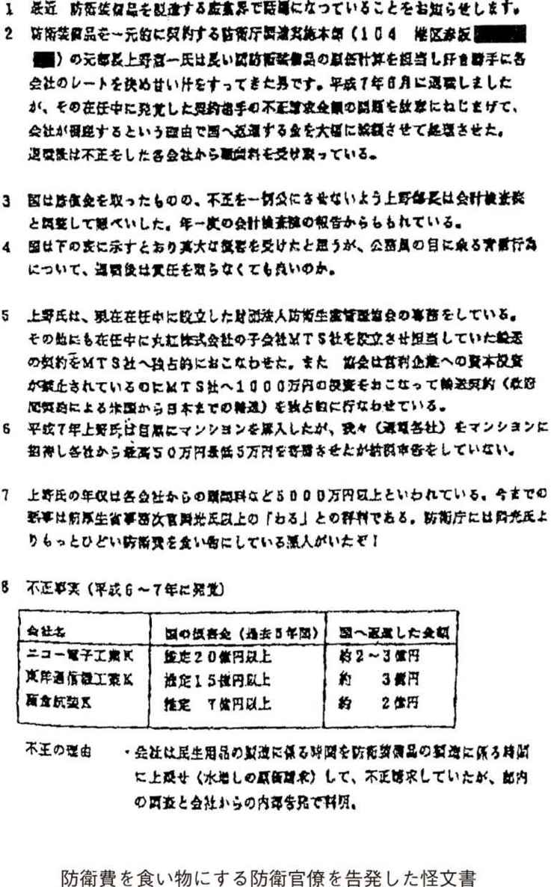

| 怪文書 | |
| 六角 弘 | |
| (2001) | |
目次
いわゆる「怪文書」と私との出会いは、今から三十年以上も前の、一九六六年はじめのことだった。
週刊誌がすっぽり入るほどの大きさの茶封筒に『防衛庁の黒い墓標』と題する薄いパンフレット、そこには、「こんなものが手に入りました。ご参考までに」の添え書きが付けられている。後に、新聞、雑誌等で大きく取り上げられ、国会でも追及されて何人もの逮捕者まで出た、いわゆる〝防衛庁怪文書事件〟の発端となった原本がそれであった。
Ｂ５判一五ページで、タイプ打ち。当時でも一枚四〇～五〇円は取られる上質紙に、孔版印刷された立派なつくりである。内容は政府の第三次防衛計画に関わるもので、防衛庁の海原治官房長に関するスキャンダルが満載されていた。
文書の後に「ＡＴＯＭ」と署名があったが、もちろん、思いつくままに付けたであろう、適当な名前に違いない。発行所も発信地もない、まぎれもない怪文書であった。
この『防衛庁の黒い墓標』を私に送ってくれたのは、ある週刊誌のＯ記者である。ご丁寧なことに『防衛庁の黒い墓標』のなかには、万年筆の黒い太い文字で解説が付いており、海原の女はどこに行けば会えるとか、癒着企業はこことここで担当者は誰と誰、といったことが書かれていた。
不思議な文章だなあ、というのが私の第一印象で、内容が真実なのかどうかの判断はもちろん付かなかった。ただ、労作であることだけは疑いようがない。そしてなによりも、自分宛に寄せられた情報で、まだ表面に出ていない新鮮なネタであるということに興奮したことはよく憶えている。
そのころ、『観光新聞』という夕刊紙があった。「東京タワーは傾いている」「防衛庁に巣食うスパイ」「詐欺師列伝」など、いまの週刊誌が取り上げているようなホットでセンセーショナルな話題を好んで扱っていた。
当時『観光新聞』は発行部数数十万部を誇っていたが、私はそこの社会部の駆け出し記者。怪文書を送ってくれたＯ記者とは、戦後の混乱期〝銀座警察〟の異名をとって、街の人から恐れられていた、暴力団東声会の町井久之会長主催のパーティーで出会って意気投合、それ以来のつき合いだった。
ところで、この防衛庁を引っかき回した怪文書の作者が、後にＯ記者当人だと分かり仰天したのだが、当初は、いったい誰が何の目的で出したのか見当もつかず、結局筆者不明のまま、関係者や周辺取材で紙面を埋めた（後から判明したところでは、Ｏ記者らは原稿料稼ぎのために請け負っていたらしい）。しかし、記事が出ると同時に、新聞、週刊誌が一斉に書き立て、大問題に発展していった。高い製作費をかけた怪文書の製造元は、大きな反響が出たことで目的を十分に果たしたことだろう。
私が怪文書の威力に驚嘆し、やがて雑誌記者という仕事を通じて怪文書と関わるようになったのは、まさにこの時からである。
怪文書とはいったい何か。いささか古いたとえで恐縮だが、「多羅尾伴内」風に口上を述べるとすれば、あるときは悪を告発する正義の味方、そしてあるときは個人の恨み晴らしの道具、またあるときは社会騒乱を起こして喜ぶ愉快犯......ということにでもなろうか。
どこから飛んでくるのか、まったく予測ができないし、犯人の特定も難しい。まさに闇討ち、通り魔に遭うようなものである。しかし、たとえ嘘の内容でも、一度人の噂話に登場すれば、燎原の火の如く、またたくうちに広がってしまうのが怪文書だ。
このように扱われ方次第で意外な効果を生み、大ケガをすることもあるので、〝紙爆弾〟〝紙つぶて〟〝ペンのお仕置き〟〝活字のゴキブリ〟などとも呼ばれている。
ところで怪文書とはいったいどのように定義づけされるのか。広辞苑を繙いてみると、「いかがわしい文書。無責任で中傷的・暴露的な出所不明の文書または手紙」
と記述されている。
これをもとに、私流の解釈を加えて定義付けすると、
１ 差出人が不明であること
２ ターゲットがあること
３ 不特定多数にバラまかれていること
の三条件を満たしたものということになる。
たとえ、これらの条件を満たしたものであっても、怪文書の中には、単なる他人の生活のノゾキ見やスキャンダル、尾ひれをつけたゴシップや捏造されたデマもある。ましてや今は、インターネットによって、誰もがかんたんに不特定多数に向けて情報を発信できるようになった。タレントのアラ探しや、企業や店の悪口、クレームの掲示板への書き込みなども怪文書と呼べなくもない。
しかし、これらは言ってみれば、その場の思いつきでタレ流されたような類の、刹那的なもの。本書で扱う怪文書はこの手のものは含めない。あくまで真実に基づいてターゲットを定め、そのターゲットに社会的な不利益をもたらすなどの目的を持ち、かつ長期にわたる戦略的観点から流されたもの――そんな怪文書のみに絞ってみたい。ターゲットとは、特定の個人、団体、企業で、目的とは、それらのイメージダウン、社会的信用の失墜、抹殺である。
とはいうものの、よく出来た怪文書というのは、たいていウソとデマと真実とが巧みに織り交ぜられており、一読したくらいでは見破ることができないよう、文章もレトリックもうまいぐあいに構築されている。
よく出来ているといえば、一九九七年の三月、東京・渋谷のラブホテル街で起きた「東電ＯＬ殺人事件」に絡んで、【日本の企業、司法、マスコミ、政府に抗議警告をします】と題する以下のような内容の怪文書が出回った。
【Ｙ子さん（被害者の名前。文書内では実名）は東電やＯ氏（文書内では実名）の公私にわたる、ありとあらゆる秘密を知っていたので、Ｏはどうしてもその存在を抹殺しなければならないという状況にありました。特に近年、Ｙ子さんが精神に異常をきたしつつあり、Ｙ子さんの口から東電やＯなどの悪事が世間に露呈される恐れが十分にありました。
（中略）
この事件の背景には、暗くて深い日本の「暗部」があります。今の日本の行政および司法の態様を勘案すると、とうてい事件の真実には至らない筈です。しかし、事件そのものは日本という国が、迷宮入りを希望するのであれば、被害者のＹ子さんには気の毒ですがそれも仕方が無いと考えられます。またいろんな事実を明らかにすることは彼女の本意ではないのかもしれません。Ｙ子さんや聡明な日本人には、本当の悪党は誰か分かっています。何故、「いけにえ」が必要なのでしょうか。（以下、略）】
この事件ではネパール人の男が強盗殺人容疑で逮捕されたが、この怪文書の作者によると、真犯人は別にいるという。それが文中に登場するＯ氏である。
怪文書によると、Ｏ氏が東京電力時代、被害者のＯＬと上司の指示で【シークレットワークに就いており、Ｋ（文書内では実名）という工事会社を経由して、政治家連中に非合法の金銭をばらまいたり、利益の誘導をしたりして】いたという。過去の秘密が【精神に異常をきたしつつあ】った彼女の口から漏れることを恐れたＯ氏が、Ｙ子さん殺害に及んだというのだ。
たしかにＯ氏はかつて東京電力で、被害者のＯＬと同じ職場にいたことがあるのだが、それにしてもいささか出来すぎた話ではある。しかし、作者はなかなかの文才の持ち主で、一見作り話とは思えないほど、よく出来た物語になっているのは事実である。デマとあっさり切り捨てるには惜しいほどの〝魅力〟があるといっても過言ではない。
ちなみにＯ氏は大手製薬会社の副社長で、父親は首相経験者。一説によると、この怪文書に当局は関心を示し、Ｏ氏に事情聴取をしたことがあるとの話が伝わっている。
要は、デマと真実の比率の問題だと思う。あることないことの「ないこと」だけを並べた低次元の怪文書では、マスコミは取り上げてくれないし、当局も関心を抱いてくれない。少なくとも、八割方は真実でなければ、担当者の気持ちが動かないからである。
心ある製作者というのは、そのあたりの事情は先刻承知で、ターゲットの知人、友人、仕事仲間、時には不倫相手などからもインサイダー情報を収集し、かつ証拠の種類も揃えるなど、時間も金もかけてから発行するケースが主流になっている。後でくわしく述べるが、かつてはデマが多かった怪文書も、最近の企業の内部告発ものなどでは、ほとんど全編真実、というのが主流になってきている。
たしかにデマというのは、人の口の端にのぼりやすいし、一気に広まるにも時間がかからない。しかし、じっくり時間をかけてターゲットを引きずりおろすには、やはり真実の部分が必要になってくる。怪文書といえども、新聞、雑誌など他のメディアと同じ、デマやウソは許されないということだ。
怪文書をバラまく側にしてみれば、一歩間違えば、相手側の逆襲に遭い、逆に社会的に抹殺されることにもなりかねない。出す際には、まさにターゲットと刺し違えるほどの覚悟が必要である。
それゆえ、出すからには最小限の費用、労力で最大限の効果を挙げたいと願う。送付先を的確に選定すれば小さな攻めで、大きな破壊力が生まれるからだ。そのため、どこに送るか、その選定は大変重要な要素になってくる。
まず、ターゲットにした人物の周辺には、当人の行状を知ってもらうためにもバラまく必要がある。そこでその人物の同僚や上司、家族に送りつけることになる。また、同業他社のしかるべき部署に送るのも効果があるだろう。
またマスコミに送る場合にも注意を要する。報道機関でも、大新聞やテレビなどは、よほどのことがないかぎり怪文書など無視して報道しない。そこで自ずと送付先の中心は、週刊誌、夕刊紙、スポーツ紙などになってくる。また、同じ新聞に送るにせよ、政治部や経済部よりも、社会部の方が扱ってもらえる可能性が高い。
ターゲットが違法行為を働いていることが明らかなら、警察、検察、国税局が送付先の筆頭候補になる。また、所轄官庁、国会議員に送りつけるのも最近の風潮になっている。
その一方で、駅前など人が多く集まる場所で、一枚一枚ビラ配りの要領で手渡しするという古典的な戦術もある。この場合、差出人がはっきりしているので、私の定義では怪文書に入らないが、ときには、そのような捨て身の手段に訴える輩もいる。埼玉県・桶川の女子大生殺人事件で、事件が起こる前、犯人グループが、この女子大生を誹謗中傷したビラを配っていた件もこの範疇に入るだろう。
また、大量部数を集中的にある場所にバラまき、それがニュースとしてマスコミに取りあげられることで、結果的に多くの人に知ってもらおうという荒技もある。
十数年前、滋賀県雄琴のソープランドで働く女性が、某在京人気球団所属の投手と仲良くなり、溜め込んだお金をどんどんつぎ込んで応援した。ところが、金の切れ目が縁の切れ目、貯金が空になったところで、投手に捨てられてしまったのである。
そのうえ失意の彼女の耳に入ってきたのが、投手とある令嬢との結婚話。すっかり逆上した彼女は、投手の私生活の一部始終をメモにしてマスコミに取り上げてもらおうとしたが、マスコミ側に球団の圧力がかかり不発に終わった。
そこで、最後の手段としてすごいことを思いついた。まずそれまでの経緯が詳しく載っているビラを十万枚作成し、球団の試合中に球場の上空から、ヘリコプターでそのビラを一気にバラまいてしまおうと思い立ったのである。
幸いというかなんというか、彼女の話に乗ってくれるヘリコプター会社が見つからず、計画は未遂に終わってしまったが、当のソープ嬢からこの話を聞かされた時、私は背筋がゾッとした。怪文書発行人の執念の深さ、恐ろしさを目の当たりにしたからである。
もし、その空中ビラまきが実行されていたら、その投手の選手生命はそこで終わっていたにちがいない。
なお、この投手は無事に現役生活を過ごした後、引退後の現在は某球団の投手コーチに収まっている。
八〇年代以降の〝技術革新〟
送付先もいろいろあれば、その形態も千差万別である。一枚の紙に簡潔に綴ったものもあれば、十数枚に及ぶ〝大作〟もある。ビラ、パンフレット風、綴じて小冊子にしたもの、タブロイド判、大判の新聞スタイルに刷ったものもある。写真入り、資料付きの凝った作りのものも多く、その写真にしても最近ではカラープリントがあたり前になってきた。
しかし、いずれにせよ、その性質上、一人でコソコソと作業を進めなければならず、製作の際の苦労はたいへんなものと思われる。家族にも内緒で、一人こもりっきりで製作するのだろうから、孤独を克服する強い意志と、ターゲットへの強い憤りがなければ完成することはできない。
時に〝志〟を同じくする者たちと共同で製作する場合もあるが、人数が多くなればなるほど、誰かの口から秘密が漏れ出す危険性も強まるわけで、そうなるとまた別の苦労も増える。また、義憤から怪文書発行を思い立ったものの、文案の骨子づくりから取材調査、内容のまとめ、紙の選定、部数、伝達方法の決定、かかる費用の調達などやるべきことは膨大にあるわけで、そのため途中で挫折したという話を何度を耳にした。
とくにコピー機もワープロもインターネットもないころには、現在では考えられないほどの苦労があったにちがいない。戦後型怪文書の黎明期、そのころはまだ、個人で印刷する手段もなかった。
当時の筆記用具は、墨と筆、万年筆、鉛筆が主流で、怪文書のほとんどは手書き。しかし、それでは筆跡で発行人がすぐに分かってしまう。そこで、定規を使って文字を書いたり、新聞や雑誌などで必要な活字を探し出し、切り抜いて別の紙に貼り付けるというスタイルが主流になった。
また、製作現場を人に見られるのは困る。そこで怪文書づくりは、家族が寝静まった深夜、自室や押入れに閉じこもって行われた。これではわずか十通作るのにも、大変な労力が必要とされる。文字通り死ぬ思いで、作っていたのだろう。
一時期、謄写版の利用が大流行したこともある。読者の世代の方なら見覚えがあると思うが、学校の先生がガリ版刷りのプリントを作るのに使っていた例のアレである。深夜、鉄筆でターゲットへの恨みつらみを一字一字蝋引きの原紙に彫りつける光景は、まさに鬼気迫るものがあったにちがいない。
その後、八〇年代に入って、怪文書づくりに画期的な技術革新が起こった。そう、ワープロ、ファクシミリ、パソコンの個人や家庭への普及である。おかげで誰にでも簡単に怪文書が作れるようになり、しかも発行人の身元を隠すことも楽になった。怪文書づくりに伴う二大困難が一気に解決されたのである。
技術の革新とともに、媒体も多様化する。つまり時代が下るにつれて、怪電話、怪電波、怪テープ、怪ビデオテープ、怪写真、怪ファックス、怪インターネットなどの類も怪文書の範疇に加わってきたのだ。怪文書の歴史は、まさにメディアの発達と軌を一にしているといってよい。
なかでも変わったものに、〝怪電報〟がある。六九年七月の東京都議選では、革新系二つの政党の委員長名、蔵相名、八王子市長名の電報が飛び交った。電報はハガキや封書よりもうんと高いので、かなり費用がかかったにちがいない。
ちなみに怪文書は、十通くらいしかまかれないものもあれば、何万通とバラまかれるものもある。そうなると、製作のための情報、資料収集の費用から、詰め込み、配布までのバイト代などを含めれば、かなりの出費になるだろう。
ここで、史上最大の規模で流されたと言われる怪文書について紹介しよう。
かつて〝創価学会の天敵〟といわれた自民党の亀井静香議員は、歯に衣着せぬ発言で物議をかもすことがあるが、九七年、【二一世紀に行動する会】名義で大量の怪文書を飛ばされた。
【亀井静香センセイに13億円の疑惑】
【警察官僚の退職金は三一六万円、それが今では億万長者。元暴力団員がらみの株取引で口座に18億円もの大金が】
などの怪情報が、Ｂ４判裏表に写真やコピーなどとともにびっしりと埋めこまれていた。
問題はその大規模な配付方法である。練馬・光が丘のような大団地はもちろん、中野区、世田谷区などの住宅地を中心に首都圏、関西地区、選挙区の広島六区などで家々の郵便ポストに放りこまれたのだ。その数、百万部単位と言われ、それだけの数を配るには、かなりの人数を組織的に動かさなければ不可能だ。
怪文書はオレンジ色と黒の二色両面刷りで二種類。一部一〇〇円かかるとしても二億円。それに輸送費その他を加えると、最低に見積もっても二億数千万円は使っている。相当大きな団体が組織ぐるみでやらないと不可能な規模だ。怪文書史上、最高額をかけているにちがいない。ちなみに制作者はいまだに分かっていない。
また最近では、インターネットなどを利用して流されるケースも増えてきた。これらは、パソコンに関する知識さえあれば、よほど手の込んだものを作ろうとしないかぎり、労力も費用もそれほどかからない。大手家電メーカーが、ビデオに関する苦情処理で、ネット・クレーマーとトラブルになり、散々な目に遭ったことはまだ記憶に新しい。
ここで、怪文書の歴史をざっと総括してみたい。
怪文書の歴史は古い。江戸時代にもあったし、明治、大正、昭和の初期にも飛ばされている。これらは「落書」と言われ、神社仏閣や道の辻など人の集まる場所に、貼り紙や立て札というかたちで現れた。誰かを誹謗したり、改善を求めたり、罪人を密告したりなどがおもな目的である。
古くは、奥州・相馬家の相続をめぐる騒動を書いた錦織剛清の「闇の中」（一八九二・明治二十五年）、皇太子妃に選ばれた人の家系に、色盲の遺伝があるのではないかと騒がれる原因になった、「宮中某重大事件」といわれる怪文書（一九二〇・大正九年）、天皇と皇太子暗殺を企てた在日朝鮮人無政府主義者・朴烈とその妻金子文子に関して、係争中に彼ら二人の抱擁写真が市中に出回った、いわゆる「朴烈怪写真事件」（一九二六・大正十五年）などが特筆すべき怪文書であろう。
戦後の日本は、怪文書の洪水といっていい。怪文書が出ていない分野は皆無といっていいほどで、特に政界、宗教・教育界、報道機関、金融・流通業界などはタレ流し状態だ。
大がかりなものでは、「帝人」の大屋晋三社長の政子夫人を攻撃した怪文書（一九七八年）、フジ・サンケイグループの鹿内春雄氏を攻撃した怪文書（八二～八四年）などが挙げられるが、なかでも差出人が捕まったことで記憶に残るものとしては、都知事選の最中に出された「般若苑マダム物語」（五八年）、商社間争いにおいて、一方の商社が右翼と組んで出した、冒頭の「防衛庁怪文書事件」（六六年）、「鳩山家ニセ結婚式招待状事件」（六六年）、保谷市（現・西東京市）広報担当、秘書担当らによる「保谷市長選」（六九年）など枚挙にいとまがない。
この中で、変わりダネとして特筆すべきなのは、「鳩山家ニセ結婚式招待状」だろう。
六六年五月、各界の名士に結婚式の招待状が送られた。新郎は東洋酸素社長の二四歳の三男、新婦は鳩山一郎元首相の、同じく二四歳の孫娘である。招待状には五日後に帝国ホテルで披露宴が行われるとあった。
ところが急な話に驚いた来賓が両家に問い合わせたところ、二人が結婚する事実はあるものの、その日に披露宴を行う予定はないことが判明、ちょっとした騒動になった。
当日会場にやってきたのは二人だけと被害は少なかったため、そこはそれで収まったが、この話はこれで終わらなかった。
後日、東洋酸素の社長が息子夫婦の婚姻届を区役所に提出したところ、すでに息子が別の女性との婚姻届を出していることを知る。これもすぐに何者かが勝手に提出したことが分かるが、ニセ招待状と併せて、誰かが今回の結婚を妨害しようとしていることがはっきりしたのである。ましてや新婦は元首相の孫娘。政治的な意図を持った者の仕業にちがいないと思われた。
さらに話は続く。結婚式の翌日、東洋酸素の重役宅にワラ半紙にガリ版刷りで、鳩山家を誹謗中傷する内容の怪文書が郵送されたのである。当局の調べによると、六四年の春ごろから六五年春にかけて、鳩山一族や、ブリヂストンのオーナー石橋家（鳩山一郎の長男、鳩山威一郎元外務大臣の安子夫人は石橋家の出）、政財界に同種の怪文書が送られていることが分かった。
後に、逮捕された犯人は、新婚夫婦の慶應大学時代の先輩。学生のころから新婦に恋心を抱き、交際を申し込んだが断られ、その腹いせによる犯行だった。
怪文書を出して捕まった犯人は、名誉毀損、営業妨害、私文書偽造などで起訴されるくらいで、出された側が社会的に抹殺されたり、大きな精神的暴力を受けたりする割には、いささか刑が軽いという印象は拭えない。
怪文書が発端で、社会的信用を失い、その回復に時間がかかった例は多い。企業を例にとると「三越」「そごう」「平和相互銀行」「北海道拓殖銀行」「千代田生命」「協栄生命」「第一火災海上保険」など十指に余る。これらはみな怪文書の〝成功例〟と言ってよいだろう。
特に〝三越の天皇〟と言われた岡田茂社長と、その愛人・竹久みちの特別背任の実態を綴った怪文書は、岡田の妨害やブラックジャーナリストの裏切りなどにもめげず、長期にわたって出されつづけ、ついに岡田を社長の座から引きずりおろすことに成功した。
ここで怪文書合戦の盛んな時期を三分割してみると、第一次ブームは東京オリンピック前後の高度経済成長期、次はバブル経済崩壊直後の九〇年代初頭、そして第三次ブームは、まさに現在である。
先にも少し触れたが、怪文書の内容は、第一次ブームのころはデマ七～八割、真実二～三割だったが、第二次ブームのころには半々の比率になっている。このころから怪文書への注目度がぐっと高まったといってよい。
第三次ブームの最近では、真実八～九割、デマ一～二割と完全に比率は逆転した。また最近の特徴としては、企業における内部告発調のものが増え、信憑性は年々高まっている。したがって、マスコミや取り締まり当局の関心度は、かなり高くなった。
政界、教育界、マスコミ、金融業、建設業界などは、さしずめ怪文書が飛び交いやすい体質の分野と言えるだろう。特に、相手を落選させなければ自分が浮かび上がれない政治の世界では、村長選から県議、首長選まで、選挙のたびに誹謗中傷が渦巻く。国政レベルの選挙や政党のトップレベルともなると熾烈なもので、権謀術数、秘策を練って相手陣営の蹴落としを図る。
もちろん特権階級への反発、金権体質、密室政治への怒りなどが動機のものもあるが、その手の類は少数。なかには、自派への同情を集めるために、自分自身で自分の悪口を書いてバラまくマッチポンプの手合いもいる。こうなると、とても、人格・識見豊かな選良とはほど遠い。
許認可業務や行政指導の立場に立つ役人も同様で、利権がらみで敗者が出れば、ここぞとばかりに怪文書が飛び出す。飲み代の民間企業へのツケ回し、過剰接待、贈り物などがおもな項目であるが、これがうまく内部で処理できずマスコミに嗅ぎつけられた際など、ふだんは態度の大きい官僚も世論の集中砲火を浴びることになる。
教育界、宗教界もご多分に漏れず、年中怪文書が飛び交う世界。特に、大学の学長選挙や教授選考の時期が近づくと堰を切ったように出てくる。
教育界で特筆すべきものとしては、学内を二派に分けて下半身スキャンダルを暴露しあった「東京音大怪文書」（七五～七六年）、犯人と名指しされた教授が後に冤罪と判明した「名古屋大学医学部怪文書事件」（六七年）などが挙げられる。
世界救世教を二分させた八〇年代半ばの「メシア怪文書」は、積み上げると三〇センチにもなる大作だ。幹部の中傷合戦から、施設の占拠、信者の奪い合いにより多数のケガ人まで出し、おまけにニセ絵画購入事件などというネタまで飛び出し、マスコミの格好の餌食となった。
また、ある宗教団体では、「実の娘たちが精力絶倫の父親で教祖の夜のおとぎの相手をかわりばんこにした」などとにわかには信じがたい内容満載のものが、ピンク色刷りで出されたことがある。ときにこういった相当えげつない怪文書が出てくるのも宗教界の特徴である。
怪文書の功罪
本書では、おもにバブル期以降の第三次ブームの時期を中心に、日本の企業で飛び交った怪文書を取り上げ、週刊誌記者の立場から事件の検証を行っていきたいと思う。
企業のイメージダウンにつながる、会社ぐるみの犯罪はバブル崩壊後激増してきた。粉飾決算、脱税、欠陥商品隠し、贈収賄、暴力団・総会屋への利益供与、公害垂れ流し、談合、ココム違反、労働基準法違反、製造・販売・輸出入関連法規違反、経営陣の背任、特別背任、インサイダー取引、競売妨害など数え上げればキリがない。これらはみな、怪文書発生の温床となっている。
犯罪ばかりとはかぎらない。公私混同や不公平人事、世襲強行、火災や労働災害、過労死、リストラ、派閥争いなどこれら労使間のアクシデントは、企業犯罪以上に怪文書を生みやすい土壌を作る。
もちろん、個人が起こすトラブルも同様だ。業務上横領、セクハラ、いじめやいやがらせ、ストーカー、窃盗、強姦、殺人、放火や傷害事件、交通事故などでも、個人の犯罪の域を超えて社名に傷をつける。
これらのイメージダウンにつながる出来事を隠蔽しようとしたり、あるいは、起きそうな前兆があるときに、よく、内部告発の怪文書が流される。怪文書の発生は、業績悪化や内紛、刑事事件の発生を予告する警鐘となることもあり、処理次第で、企業の綱紀粛正につなげられるのだ。
怪文書が、会社の未来を予告したケースはたくさんある。とくに昨今、大型倒産で世の中を騒がせた会社はほとんどといっていいほど、怪文書がＳＯＳのシグナルを発している。
デパートの「そごう」、生保の「日産」「東邦」「協栄」「千代田」、損保の「第一火災」、都市銀行の「拓銀」、地銀の「新潟中央銀行」「幸福銀行」「東京相和銀行」などなど。会社更生法や民事再生法適用を申し立てて会社自体は清算できたとしても、一方では、従業員の給与カットや出入り業者の債権カットなどで、大勢の人を泣かせている。怪文書の警告を真摯に受け止め、早めに手当をしていれば、あるいはそのような事態は避けられたかもしれないのだが。
こうしてみると、怪文書には「功」の要素があることは否めない。しかし、いくら会社を救い、社会正義に役立つ怪文書があったとしても、製作者が社会的に賞賛されたり、社史に堂々と登場することはありえない。いずれにしろ、怪文書という手段は、その理由のいかんにかかわらず、不正であることには変わりはない、というのが私の考えである。
断るまでもないことだが、本書に収録した怪文書の信憑性について、私は責任を負うことができない。
また怪文書には、あるべき箇所に句読点がなかったり、 誤字・脱字があったりすることもあったが、本書収録に際し、それらのものは可能なかぎり訂正しなかった。改行に関しては、読みやすいように、原文を無視して入れたところがある。さらに、怪文書中の人名や会社、団体名に関しては、こちらの判断で変えたり、伏せ字にしたものがあることをあらかじめお断りしておく。登場人物の肩書きや年齢はとくに断りのないものは、当時のものである。
二〇〇〇年七月十二日、かつて、デパート業界において売り上げ日本一を誇っていた「そごう」（本社・大阪）が、民事再生法適用を東京地裁に申請、経営破綻した。負債総額二兆八二四七億円、これは史上最大の倒産額である。
その詳細を発表する記者会見の雛壇には、山田恭一社長以下、役員が並んで深々と頭を下げたが、そごうを肥大化、あげくの果てに沈没させた元凶と騒がれた、「そごうの天皇」水島廣雄会長（当時、八八歳。強制執行妨害容疑で二〇〇一年五月二十五日、警視庁に逮捕、起訴）の姿は無かった。
そごうの迷走ぶりは、怪文書が早くから指摘していた。頻繁にバラまかれるようになったのは、経営悪化がそろそろ伝えられはじめた九三年ごろから。この年の七月五日、東京・有楽町の「東京會舘」で行われた記者会見で、水島は、従来の拡大路線が曲がり角に来ていることを明らかにしている。イケイケドンドンで拡大路線を推し進めてきた彼が、公の場でこのような弱気な発言をしたのは初めてだった。
企業の怪文書は、ワンマン経営批判、派閥抗争、不公平人事、労使紛争や粉飾決算、脱税、インサイダー取引、ウラ政党献金、贈収賄など、社内の膿を告発する正義の士から出ることもあるが、経営危機に瀕したときに、救助を求めるシグナルとしてもよく出される。そごうから出された怪文書もそのパターンだ。
怪文書の文面は次の通りである。
【××××が犯した罪の中で最も重いのはバブルに浮かれた無節操・無計画な海外への不動産投資である。××××は海外も不動産もどちらも素人であったが、バブルが永遠につづくと錯覚し浮かれて巨額の不動産投資に熱中してきた結果、バブルが破裂し不動産価格が暴落し、バブルの宴の後に残ったのは巨額の損失のみという体たらくである。そして今×××の売上が社員の必死の努力によって戻ってきているが、×××××大失敗の結果である海外の巨額損失が×××を破綻の淵へ追いやろうとしている。我々給料を削られながら歯を食いしばってやってきた社員の苦労が××××の道楽のために水の泡になるとは何ともばかにした話である。
我々はこのまま××廣雄の無責任さを許すわけにはいかない。××××と共謀した会計士はこの海外の巨額の損失を必死で隠蔽しようとしているが、いつまでも隠しおおせることはできない。これが明らかになった時には一体どうするつもりなのか、粉飾決算の罪に問われるのは火を見るより明らかである。我々は海外投資の大失敗の実態を示す資料を手に入れている。これによれば海外の損失は何と千二百億円で、×××の利益では何十年かかっても埋めることなどできない巨額のものである。××××が責任をとって即座に退陣するしか×××が救われる道はない】
まるで虫食いテストのような文面だが、×印の部分にどんな語句が入るかはもうお分かりだろう。そう、三文字のところには「そごう」が、四文字のところには「水島廣雄」が入るのである。なぜか一カ所、「××廣雄」となっているところが、いかにも怪文書らしい。
そごうは、天保元年（一八三〇年）、奈良の人・十合伊兵衛が、大坂・坐魔神社の南隣に古手屋（古着屋）「大和屋」を開いたのが始まり。やがて、呉服店となり、昭和の初めには百貨店の仲間入りをした。
しかし、一九三五年に、大阪・心斎橋に本店ビルを建設中、経営危機に見舞われ、北海道の海運財閥・板谷宮吉の資本を導入、なんとか完成にこぎつけた。この板谷一族は、その後もずっとそごうの大株主となり、役員にも名を連ねていた。水島前会長の静夫人は板谷一族で、その縁で水島はそごう入りしている。
そごうは長い間、大阪、神戸、東京の三店舗だけで営業していた。そのころはいわゆる三流百貨店に甘んじていたが、水島前会長が経営の舵取りをするようになってから拡大路線に転じ、国内二八店舗、海外一四店舗と計四二店舗もある巨大デパート・チェーンと化した。その後、債務超過に陥り、倒産に至ったのは記憶に新しい。
水島前会長は、大蔵省（現・財務省）に届けられた有価証券報告書の役員経歴欄では、
「水島廣雄 明治四十五年四月十五日生。昭和十一年、中央大学法学部卒。同年、日本興業銀行入行、二十九年九月、同行特別調査室付考査役、三十三年、同行退社。そごう副社長に就任」
とある。以来、社長、会長と、四十年間もトップの座に居座り続けたことになる。
少々補足すると、出身は京都府舞鶴市。漁師である父・豊蔵と母・はまの間に長男として生まれる（本人は〝網元の息子〟を自称していた）。上には姉が一人、下には妹が二人に弟が一人いる。
地元の尋常小学校を経て、隣の福井県の旧制小浜中学校（現・県立若狭高校）を卒業した後に上京、拓殖大学予科、中央大学法学部へと進む。
一九三六年、英法科を首席で卒業した後に日本興業銀行に入行。在職中の五三年十二月、法学博士号を取得。また、五五年から在職のまま東洋大学法学部教授となり、八三年、名誉教授に。八七年には中央大学顧問、のちに大東文化大学理事にも就任している。八八年には、そごうで開催された『大ヴァチカン展』の業績により、ローマ法王庁から、シルベストロ大十字勲章を授与されている。
また、そごうが大株主だった全日空ビルディング、日比谷コンピュータシステムの取締役、板谷商船会長も務め、国内外四二店のそごう、ならびに子会社、関連会社の多くに、夫人、一族の水島有一そごう取締役とともに、役員として名前を連ねていた。
老害経営が破滅を招く
水島戦略の基本は借金経営である。既存の店舗や土地を担保にして、銀行から融資を受け、進出先の土地を購入。バブルで急騰したその土地の評価によってさらに融資を受け、店舗を完成させるという戦略だ。
その戦略を実現した第一号が、六七年にオープンした千葉そごうである。その後も、〝グレーターそごう計画〟と銘打ち、松山（いよてつそごう）、柏、広島、札幌、木更津と、まさに破竹の勢いで店舗を増やしていった。しかし、バブルが崩壊して不動産価格が大暴落、あっという間に奈落の底へと落とされたのである。
不動産評価額は三分の一になっても、借入金額は変わらない。莫大な負債を抱えたそごうは、二〇〇〇年四月、融資先銀行七三行に六三九〇億円の債権放棄を要請したが、その時点での有利子負債は一兆七二七〇億円に達していたのだから、全従業員は毎日毎日、利息払いのために働いていたことになる。
そごうが民事再生法適用を申し立てたことで、株主は株券がただの紙切れとなり、おおぜいの社員が職を失った。たくさんの関連会社も連鎖倒産。取引業者の売り掛け金の大半はカットされ、残金も気の遠くなるような延べ払いを強要された。
そごうグループの千葉そごう、横浜そごう、柏そごうなど、各地のそごうデパートを経営する二十一社の負債額だけで二兆四六七億円、本体のそごうの負債六八九一億円を加えると、全体では二兆七三五八億円という、とてつもない額となってしまった。
倒産の原因は、バランス感覚を失って突っ走った挙句の経営の失敗、危機意識の欠如した放漫経営、それもこれも、長すぎた老害経営の産物とマスコミに袋だたきにあったのは周知の事実である。
そごう関連の怪文書は冒頭に挙げたものだけに留まらない。私の手元にある、そごう関連の二十数種類の怪文書の中から、一部を紹介しよう。
まず冒頭の怪文書が出されたのと同じ、九三年に出されたものを二つ。
【「そごう大阪店を壊滅させるＮ店長」
大阪店に就任したＮ店長は、そごう大阪店をメチャクチャな業務運用で、潰してしまおうとしている。前任者のすべての否定からはじまり、店長室移転で多額の費用を発生させ、配送料改定では、前年比一億円以上の経費増となった。半期の赤字は十億円以上だ。独断専行、周囲の意見も聞かず、イエスマンだけを集めている】
この差出人は、［そごうをよくする会関西支部］だ。
【「心斎橋のそごう大阪店で六億円の穴があいたまま放置されている」
Ｙ新聞社Ｓ販売所の注文で、新聞購読の拡材として、商品券や電化製品の発注を受け、納品したが、所長の取り込み詐欺で、ドロン。大阪店は実額五億円の被害に遭った。●●店店長は、購読拡販商品という、新聞社間の自粛申し合わせに違反するＹ新聞社の立場を考え、被害届を出さずに内部処理をした。店長は、自分の主要取引先に五億円の肩代わりをさせ、別の商品納入でその分を返そうとしたが、全額返すには三十年はかかるらしい。
●●店では、外商部員や販売促進担当部員の不祥事が出たが、この時の措置のいい加減さが原因らしい】（伏せ字、イニシャルは編集部）
上が上なら下も下。これらの怪文書は、そごうが内部からだんだん腐っていく様子をよく映し出している。
怪文書の続出に呼応するように、この年の六月二十三日には、水島邸へ銃弾三発が撃ち込まれるという事件が起こった。いわゆる〝カタギ〟である企業の会長宅に銃弾が撃ち込まれるなどというのは尋常ならざることである。
デパートというのは、表向きの華やかなイメージに反して、闇社会とのつながりが深いことが多い。たとえば、デパートが一軒出来るとなると、かなりの広さ、それも駅前といった一等地の土地を確保する必要がある。その土地の買収をめぐって、地上げ屋などとの関係が生まれることがあるからだ。
また、イメージを守ろうとするあまり、お家騒動、権力争い、醜聞などが闇社会から付け込まれるきっかけになる。たとえば、屋上の広告塔の製作などが、その筋系の広告代理店に回されたり、デパートの駐車場にその筋が有している土地があてられるなどして、いわゆる利益供与が行われるのだ。水島邸に打ち込まれた銃弾について、関係者は一様に否定しているが、裏社会からの警告ではないかと当時はささやかれたものだった。
翌九四年二月の決算では大幅赤字を計上するが、それを見通したかのように続出したのが幹部批判の怪文書だった。
【幹部五億円着服。裏金づくり？】
【水島の親戚だけで店長に】
【水島に絵画スキャンダル】
【そごうグループは破産状態だ】
【そごう副会長は特別背任罪だ】
【無責任な人事担当、Ｔ常務】
【海外投資失敗の実態】
【ヒン死のそごうの現状を証明】
など、今ならタイトルから内容が想像できそうなものばかりである。
そのなかで、私自身特に印象に残っているのが、水島廣雄の自宅周辺の土地所有見取り図が書かれた文書である。東京・世田谷区の一等地にある水島邸は、敷地一一四二平方メートル（三四五坪。本人と夫人と親戚名義）に三階建ての超豪邸。のちに、一部を義弟に売却したことが資産隠しとされ、法律専門家の水島が予測しえなかった「競売妨害」で逮捕された、曰く因縁つきの土地である。
警視庁筋からのものという解説つきで譲り受けたものだったが、水島が周辺の土地を買いあさって、自宅の敷地を広げていく様子が手にとるように分かる、まさに〝城取り物語〟の図面そのものだった。誰がどういう目的でこのようなものを流したのかは定かでないが、資産隠しの件を知っていて流したのだとすれば、かなりの事情通か、水島に近しい人物の仕業だと言える。また、当局がこれを入手していたのは、水島摘発よりかなり前の話。さすがに、当局の目のつけどころのよさ、素早さに驚かされた。
そごうの経営状態悪化がどんどん明るみに出る中で、怪文書の内容もそれに比例して厳しくなっていく。量もその間に急増した。なかでも「そごうは破産状態だ！」と銘打たれたものは、このまま放置すれば、そごうは倒産になるという、まさに断末魔の叫びとも言える内容だった。
【長銀の融資先、百貨店のそごうグループは一兆四〇〇〇億円の借入金がある。そのうちの約半分、七〇〇〇億円が長銀からの借入金である。売上高一兆九〇〇億円の百貨店にもかかわらず、借入金がそれを上回っている。バブル期、百貨店開設のために、全国に土地を高値で購入し、帳簿上そのままの金額で経営を続けているが、所有土地は購入時の三分の一以下である。
たとえば、大阪の中百舌鳥そごう開設のために堺市中百舌鳥地区で購入した土地二〇〇億円（株式会社そごう、奈良そごうの債務保証）は、今や五〇億円以下の実値である。グループ五十社のうちの半分以上が債務超過会社であり、グループ合計でも、かなり前から債務超過会社であることはよく知られている。
つまり、そごうグループは、いつ破産してもおかしくないのに、そのままになっているのは不思議なことである】
この怪文書がマスコミ各社に郵送されたのは九八年十月。大阪・堺局からで、差出人が文字から身元が割り出されないように、定型白封筒の表には、ワープロで打った宛先が切り抜かれて貼り付けられていた。
水島追放までの間には、副社長二人の自殺があったり、子会社を使っての手形詐取で逮捕者を出したり、企業としてまさに末期的症状を呈していた。
新生そごうは、西武百貨店の和田繁明特別顧問を社長に迎えることで、再スタートしたが、前途は多難。蘇生できるかどうかは未知数だ。
九〇年の夏ごろから表面化した「イトマン・住友銀行事件」は、〝戦後最大の経済事件〟と言われている。大阪の名門中堅商社「伊藤萬」（以下、イトマン）を舞台に、長くトップの座にあった住友銀行出身の河村良彦社長（当時六五歳）が、伊藤寿永光常務（四五）、許永中・関西新聞グループ・オーナー（四三）ら、裏社会の人物と組んで、絵画投資、リゾート開発などにイトマン・グループの巨額の資金を投入。そのほとんどを焦げつかせてしまい、イトマンを解体させてしまったのである。
大阪地検特捜部、大阪府警捜査二課が起訴に持ち込んだ額は一二〇〇億円。計一八人が逮捕、そのうち河村、伊藤、許ら七人が、商法の特別背任、業務上横領、有価証券偽造・行使などで起訴された。その結果イトマンは九三年四月一日、住友金属の子会社・住金物産へ吸収・合併され、百年余りの歴史に幕を閉じた。
イトマン・住友銀行事件は、やはり怪文書が暴き出した。第一号が、新聞社の経済部長、週刊誌編集長、大蔵省銀行局長宛に届けられたのが、九〇年七月十二日深夜のこと、差出人は［伊藤萬株式会社従業員一同］名だった。
怪文書は、社用箋にワープロで打たれており、十月四日付の第七号まで矢継ぎ早に届けられた。不動産への乱脈投融資や粉飾決算、資金繰りの悪化などを明らかにしたうえで、破滅へ向かいつつあるイトマンの救済を訴えた悲痛な内容である。これらには、イトマンが発行した五億円の手形のコピー、融資先一覧表なども併せて添付されていた。また、送付先によって、内容を少しずつ変えていたが、氏名、日時、数字ともしっかりしており、ほぼ事実と認められるものだった。
以下に挙げるのは、大蔵省銀行局長宛に出された七通のうちの六通分である。少し長くなるが引用してみよう。回を追うごとに、差出人が切迫していく様がよく伝わるはずだ（伏せ字部分は原文では実名）。
【拝啓、新緑の候 時下益々ご清栄のこととお喜び申し上げます。
私共は伊藤萬の従業員であります。住友銀行から現在の河村社長が、当社〝再建〟の為めに派遣されてから早や十年が経ちました。表面上は百億円を越える利益を上げて極めて順調に見えますが、その内情は今や最悪の状態になっています。
当社の資産は、関連会社を含めたグループ合算で約一兆三千億円ありますが、このうち約六千億円は不動産や株への投資が固定化してしまったものであり、何の利益も生まないものです。逆にその分の銀行借入れの金利負担だけがのしかかっています。
その内訳は、次の通りになっています。
（中略）
これらの固定化された資産は、それぞれグループ内で転がすことにより表面上は利益をだしていますが、実際は、利息の追い貸しをして辻褄を合わせているのであり、本当の利益はプラス百億円ではなくマイナス三百億円の赤字決算であります。
このため当社の金繰りは急速に悪化してきており、このままでは当社は大変な地獄に陥ってしまうことでしょう。
このことは、ひいては当社の取引銀行にも多大な影響を及ぼすことになるでしょう。
そこで、なにとぞ御当局の力で当社の実態を調査分析し、これ以上事態が悪化しないよう歯止めをかけてください。よろしくお願い申し上げます。
敬具
○○○○様
伊藤萬従業員一同
第１号】
【前略、取り急ぎ第二号を出させて頂きます。
大蔵省ご当局は本年三月に不動産融資の総量規制とやらを実施したとのことですが、全くの尻抜け規制と言わざるを得せん。
建設・不動産・ノンバンク向けの融資を抑制しても、今や資金は様々なルートを通じて不動産〔投機〕に向かっています。
その代表が商社であり、特に当社の実状はひどいものです。第一号でもご紹介したように当社グループの総資産の大半が不動産もしくは仕手株投資であります。以下その典型例をご紹介申し上げます。
（中略）
このように、不動産の担保価値、処分価値を四百億円も上回る額を開発価値という屁理屈で〝過剰融資〟し、その分は他の不動産や株に流れていっている図式は、当社の随所に見られます。
私共は、当社を愛するものとして、このような資金が当社からザァザァ音をたてて流れていることに、猛烈な不安を覚えています。
大蔵省ご当局におかれては、どうかこのような過剰融資の実態をよくお調べの上、厳しい姿勢で臨まれることを切に希望して止みません。
末筆ながら、皆様のご健康をお祈り申し上げます。
敬具
○○○○様
伊藤萬株式会社従業員一同】
【前略、御無沙汰致しておりますが、その後如何お過ごしでしょうか。
私共は、この一か月の間、ご当局の動きを固唾を呑んで見ておりましたが、○○さん、本当に失望させられました。大蔵省というのは、結局、問題を解決する能力も責任意識も無いエリート達の集団なのでしょうか。
いいですか、○○さん。当社の不動産事業部門である企画監理本部は、今、百人います。河村社長と××本部長は、この百人のルートを使って都市部と言わず、リゾート地と言わず、不動産を買って買って買いまくると広言しています。近い将来には、このスタッフを五百人に増員して、体制を大幅に強化するとも言っています。このような動きが、現在、政府が進めている土地政策と真向から対立してしまうことは明らかでしょう。
（中略）
今、当社の経営陣が突走ろうとしている路線の行く先は「破滅」あるのみです。そうなった時の私共及び家族の将来は悲惨なものになるでしょう。
その時は、ご当局も世間の指弾を浴びることになることを肝に銘じて下さい。
末筆ながら、貴方様のご健康をお祈り申し上げます。
敬具
○○○○様
伊藤萬株式会社従業員一同】
【前略、第四回目のお手紙を出させて頂きます。
○○さん、これまで何度も申し上げたように、当社の放慢経営を助長してきたのは、金余りを背景にした金融機関の貸出姿勢であります。
メインバンクの住銀はもとより富士銀行（芙蓉総合リース）、住友信託銀行、埼玉銀行、東京銀行をはじめ常陽銀行、八十二銀行、千葉銀行等の地方銀行や、ドレスナー銀行のような外国銀行に至るまで、当社及び当社グループに対する融資を、当期に入りましても著しく増加させています。
そこで、私共はこれらの銀行に対し警告文を出しました。同封しましたのでどうかご覧下さい。私共としては、大蔵省が動かないなら次の手段を考えるしかありません。
その場合私共としては、あらゆるコネを動員して有力野党議員に訴えること、また、マスコミへの一大キャンペーンを行うことにもなるでしょう。
大蔵省の調査が進んで、このようなことにならないことを念じております。
最後になりましたが、皆様の益々のご健康をお祈り申し上げます。
敬具
○○○○様
伊藤萬株式会社従業員一同】
【前略 その後、いかがお過ごしでしょうか。
○○さん、私共は六月三十日付の日経新聞を見て、本当にびっくりすると同時にあきれ返りました。当社経営陣は今回の当社の連結決算で、長短貸付金が〝倍増〟していることに対し、「半分近くが非連結関連会社や取引先などへの不動産開発資金の融資で、残りは金融子会社のイトマンファイナンスによる住友銀行などとの不動産担保協調融資が大半」などということを平気で話しています。
（中略）
○○さん、これは大蔵省の行っている不動産融資総量規制に対する公然たる挑戦、反抗です。何故、大蔵省はこれに対し毅然たる態度をとらないのですか。それとも、大蔵省は住銀のような大銀行には何も言えないのですか。繰り返すようですが、一日も一刻も早く、当社をめぐる資金、不動産の流れにメスを入れて、当社を更正させて頂くことを切にお願い致します。
敬具
○○○○様
伊藤萬株式会社従業員一同】
【前略 秋香る中、いかがお過ごしでしょうか。
このたびの日経新聞ご覧になられたでしょうか。私共従業員は九月十六日、二十日と掲載された記事を拝見しました。これまで私共が訴えてきたことが一部実現したという喜びとともに、今後いったい私共はどうなるのだろう、という心配が日増しにつのっていくばかりです。
十六日の「伊藤萬グループ 不動産業などへの貸付金 一兆円を超す」の記事は、私共のメインバンクである住友銀行の抜き打ち調査のたまものでした。河村良彦社長がワラント債発行のため英国へ出張中、住友が私共大阪本社に対し、国家権力まがいの家宅捜索を強行したのです。いささか私共も突然のできごとで恐怖でおののきました。
二三日の「伊藤萬 債務三千五百億円圧縮 不動産売却、住銀も協力」の記事にも驚かされました。これは全面協力すると約束している巽頭取の当社を解体するという宣言ですね。この日経の記事以降、私共は従業員の間でボソボソ話が絶えず、仕事が手につきません。
聞けば、住友銀行には河村社長を支援する磯田会長派と河村社長を切り捨てようとする巽頭取派の暗闘が繰り返されているというではありませんか。私共の会社の不動産部門の整理に着手されるということは、これまで住友グループの荷物をしょってきた、河村社長をいよいよ切るつもりなんでしょうね。
それも無理はありません。河村社長名義の手形が九月初旬に乱発され、市中に出回っていると聞けばいかに河村社長を信頼なされていた磯田会長でも、河村社長を見捨てざるを得ないでしょう。
私共会社の再建にも是非ご協力くさい。
敬具
○○○○様
伊藤萬株式会社従業員一同】
この怪文書が効いたのか、大蔵省と日銀がイトマンに大きな関心を寄せるようになる。
私が所属する週刊誌のほうも怪文書を受けて、取材を進めることにした。まずは、伊藤寿永光が社長を務める協和綜合開発研究所（以下、協和）に、大阪府民信用組合（以下、府民信組）が手形割引の形で二七一億円を無担保融資したとされる、背任事件から着手する。
登場人物は、府民信組の南野洋理事長、仕手グループ「光進」の小谷光浩、住友銀行の西貞三郎前副頭取、磯田会長ほか。融資・担保物件をめぐって係争中の話だったので、公判記録を閲覧すべく、大阪地裁庶務部、大阪弁護士会、司法クラブを駆けずり回り、南野理事長宅直撃、顧問弁護士インタビュー申し込みなどで時間を費やした。しかし、活字にできるだけの面白い話はなかなか集まらなかった。
「イトマン・住友銀行事件」とひと口に言うものの、この事件はざっと大きく分けて一〇件ほどの事件から成り立っている。その事件とは、府民信組の無担保融資のほかに、不正絵画取引、イトマン株買い占め、瑞浪ゴルフ場、さつま観光への不正融資などだが、戦後最大の大型経済事件と言われる所以は、これら規模の大きさもさることながら、闇紳士たちが事件に大きく深く関わっていることにある。この勢力の代表が許永中である。
なぜ明治からつづく名門企業のイトマンが、闇紳士たちと関わるようになったか。それがこの事件を解明するヒントになると思われた。
まず、イトマンの沿革についてざっと触れてみたい。
イトマンは、一八八三年（明治十六年）一月二日、伊藤萬助が大阪・心斎橋筋にかまえた、洋反物の輸入商「羽州屋」に端を発する。萬助は「信用第一」を経営理念の第一に置く一方で、明治期としては画期的だった、国内外への出張販売といったかたちで販路を拡大していった。
一九三三年には「伊藤萬ビル」が完成、繊維問屋から繊維の総合商社へと変貌を遂げていく。その間、二十年、大恐慌による繊維相場の大暴落など幾多の試練はあったものの、まずは順調な発展をたどったと言ってよい。
ちなみにこの大恐慌の際、融資に応じ、イトマンの危機を救ったのが住友銀行である。イトマンと住銀との持ちつ持たれつの関係はここから始まる。
戦後も高度経済成長の波によって順調に業績を伸ばしたイトマンだったが、七〇年代半ば、大恐慌以来、二度目の危機に襲われる。原因は、七三年に勃発した第四次中東戦争、その結果引き起こされた石油ショックによってである。折からの構造的な繊維不況も重なり。イトマンの業績は急激に悪化、もはや自力再建は不可能というところまで追いつめられた。その苦境に手をさしのべたのが、またしても住友銀行である。
住友は資金と人材の両方の支援を約束する。その〝人材〟が、今度の事件の主役、当時住友銀行人形町支店の支店長だった河村良彦だった。そして河村をイトマンに送り込んだのが、この事件の主役の一人、当時副頭取だった磯田一郎氏である。
〝欲の暴走〟が招いた二つの事件
住友時代の河村はやり手のバンカーとして鳴らし、ノンキャリア組（山口県立山口商業高校卒）としては、異例の若さで取締役に抜擢されていた。七五年、イトマンに理事として入社、その年の十二月社長に就任するや、つぎつぎにイトマンの改革に着手していった。赤字部門の統廃合、人事政策など、早い話が今でいうリストラである。
ともあれ、さすが住友が満を持して送り込んだエース級の存在、彼の荒療治は次々と功を奏し、七九年には四年ぶりに復配に転じた。このイトマンの復活劇は、「船場の奇跡」と言われ、河村の名を高からしめることになった。しかし、彼のこの飽くなき利益至上主義、独裁主義が、結果的にイトマンを破滅へと導いていったのである。
この過度の利益追求が招いた事件として、八〇年代半ばに相次いで起こった二つの事件――「石油業転事件」と「つぼ八乗っ取り」が挙げられる。
「石油業転」とは、〝石油ころがし〟の業界用語。つまり電話一本、伝票一枚の信用取引で売買が成立する石油業界特有の商慣行で、元売り業者や複数の業者の間を石油が渡っていくうちに値段がつりあがるという仕組みである。もちろんこの取引自体は違法ではない。九六年、政界を巻き込んだ巨額の資金提供疑惑の中心人物、泉井石油商会の泉井純一も、この石油ころがしで巨額の利益を得、その金を政界につぎ込んでいたと言われている。
河村は、「伊藤忠燃料」にいた自分の甥をイトマンに入社させ、新たに作った燃料部の責任者にこの甥を据える。河村は甥に石油業転をやらせるのだが、転売の〝輪〟を構成していた取引業者のひとつが倒産、代金の回収ができなくなってしまった。しかし、イトマンは一方的に〝輪〟から抜け、他の元売り業者や商社への代金支払いを拒否する。業界の商慣行を無視する荒業に出たのである。
そんなイトマンの勝手な言い分が通るはずもなく、百億円強にものぼる損害賠償請求を起こされ敗訴。この事件の影響もあって、八六年九月期の決算で、河村就任以来、初の大減収となってしまう。
この「石油業転事件」は、賠償額もさることながら、老舗イトマンの名前に傷をつけたことが大きかった。さらに傷口を広げることになったのが、「つぼ八乗っ取り事件」である。
北海道で八坪の飲み屋からスタートし、着実に店舗を増やしていた「つぼ八」は、首都圏進出にあたってイトマンをパートナーに迎える。しかし、「つぼ八」の好業績に目をつけたイトマン側が、役員の送り込み、大幅な増資などの手口でじわじわ実権を握り、あげくに臨時取締役会で社長解任動議を議決、「つぼ八」のオーナーを経営から閉め出してしまうのである。
とても一部上場の一流企業がやるとは思えない、いささかえげつない乗っ取り劇だが、このほかにもかつて霊感商法で話題になった統一教会系の企業「ハッピーワールド」への融資や、系列のノンバンク、イトマンファイナンスを通じてのパチンコ業や性風俗産業への融資など、このころのイトマンは金になることならダボハゼのように飛びつく三流企業になり下がっていた。
伊藤寿永光や許永中はどのようにしてイトマンに関わりを持つようになったか？ それは八九年八月、大阪・ミナミの料亭「たに川」での、河村社長と伊藤の会食に端を発する。ちなみに伊藤を河村に紹介したのは、住友銀行の名古屋栄町支店長である。
伊藤寿永光は、四四年、愛知県津島市生まれ。当時伊藤は、七七年に設立した建設コンサルタント会社「協和」や、冠婚葬祭会社ライフベルモニーの代表を務めていた。
伊藤は、自らが経営する「協和」が手掛けている、岐阜県関市のインペリアルウィングゴルフクラブ、ゴールドコースカントリークラブなどのゴルフ場開発にからんで、融資先を探していた。その融資元として、住友銀行から紹介されたのが、イトマンの名古屋支店だった。
伊藤の持つ開発プロジェクトに関心を持った河村が、伊藤を大阪に招いたのである。
この席で、伊藤は結婚式場・平安閣グループの総帥と称し、自らの事業計画を滔々とまくしたてた。持ち前の巧みな話術は河村をすっかり籠絡してしまう。以来、河村と伊藤は急速に親密になり、九〇年二月、伊藤はイトマンに正式に理事として迎えられることになる。
雅叙園観光事件
イトマンに入社する一年前、伊藤は東京・目黒の雅叙園観光の経営権を実質的に握るようになっていた。イトマン事件の萌芽は、この雅叙園観光事件にあるといってよいだろう。
雅叙園観光は、八四年、先代のオーナーが亡くなってから、会長である未亡人サイドと、番頭格の社長サイドとで経営をめぐる主導権争いが演じられる。社長派は、大阪の仕手集団コスモポリタン会長・池田保次氏の力を借りて自社株を買い漁り、未亡人サイドの追い出しにかかった。
未亡人サイドは秦野章元法務大臣などの協力を得て防戦、激しい泥仕合の末、雅叙園観光の兄弟会社で、横浜ドリームランドなどを有する「日本ドリーム観光」を未亡人サイドが、雅叙園観光を社長サイドが取るということで、結局、和解が成立する。しかし、そのドサクサにまぎれて、池田氏は雅叙園観光の株を買い占め、乗っ取りに成功、会長に就任してしまったのだ。
建設業の東海興業、環境設備メーカーのタクマをはじめ、金門製作所、百五銀行、宮崎銀行、丸石自転車、オーミケンシなど数々の仕手戦を仕掛けてきた実績を持つ、広域暴力団の企業舎弟・池田氏は、雅叙園観光を手中に収めることによって、裏社会の顔役から、念願の一部上場企業の経営者にのしあがったのである。
しかし、好事魔多し。社長就任から五か月後の八七年十月十九日、ニューヨーク株式市場の大暴落、いわゆるブラックマンデーが日本を襲う。五〇八ドル安は史上最大の下げ幅、翌二十日には世界中に飛び火し、東京市場も三八三六円安を記録することになる。
結果、コスモポリタンの資金繰りも急速に悪化する。池田氏は雅叙園観光の手形を簿外乱発し資金調達を図るが、それも焼け石に水、結局コスモポリタンは破産する。その最中の八八年八月、突然池田氏は姿を消してしまった。ＪＲ新大阪駅で、専属運転手に「これから東京へ行く」と声をかけたのが最後。海外逃亡説、拉致説、殺害説などさまざまな憶測が流れたものの、その行方は現在に至るまで杳として知れない。
池田氏は広域暴力団などに多額の金を借りていたと言われているが、ほかにも彼に融資している人間がいた。九六年二月に破綻することになる東京の街金大手、森下安道氏率いるアイチ、南野洋の府民信組、伊藤の協和、そして許永中である。許永中は池田会長の辞任後、雅叙園観光の経営を実質上引き継いだ。
しかし、許は池田が乱発した簿外手形のサルベージに難渋する。保有する雅叙園観光株が、不渡りを出せば紙クズ同然になってしまうため、許は資金繰りに奔走する。不渡りを出すと困るのは、伊藤寿永光とて同じ。両者は雅叙園観光をかすがいに運命共同体になったのである。
しかし、その後も伊藤の資金繰りは一向に好転する兆しがなかった。そこで、ついに担保として持っていた雅叙園観光振り出しの手形の支払いを求める内容証明便を、八九年一月雅叙園観光あてに送りつける。
ここで伊藤の説得にあたったのが府民信組の南野理事長である。府民信組も雅叙園観光に巨額の融資をしていた。南野も運命共同体の輪の一環だったのだ。南野の説得の結果、今度は伊藤が雅叙園観光の経営権を許から譲り受けることになったのである。
伊藤にしてみれば、いくら死に体とはいえ、一部上場企業の雅叙園観光をこのまま潰してしまうのはいかにも惜しい。なんとかこの会社を生き返らせようと金策に東奔西走している矢先、目の前に現れたのがイトマンの河村だったのである。
伊藤と河村は欲を媒介に結びついたといってよい。広域暴力団のナンバー２とも交際があったとされる地上げのプロフェッショナル＝伊藤は、雅叙園観光の跡地払い下げや鹿児島県・さつまカントリークラブ、銀座一丁目の地上げなど、いわゆる〝伊藤プロジェクト〟で河村から融資を引き出し、河村は河村で儲け話とあればなんでも、とばかりに右から左に融通する。ここに許も加わって、イトマンは彼らに骨の髄まで吸い取られていくのである。
七通にわたる怪文書は、伊藤プロジェクトへの見境のない融資に危惧を抱いた人間が出したものと言われている。
またこの怪文書は、封筒も便箋もイトマンの社名が刷り込んである社用のものだった。外部の人間が、これら社用の備品を入手するのは困難なことから、社内の人間が出したものと考えてまず間違いないだろう。そう考えたのは、イトマンや住銀サイドも同じ。そのため、河村社長や住銀首脳の間で犯人捜しが行われたが、犯人が発覚したかどうかについては不明である。
この事件の取材は、裏社会の人物が暗躍する話が多く、裏取り作業には手を焼いていた。その手詰まりを打破してくれたのが、〝住友の天皇〟住友銀行会長・磯田一郎氏の登場である。
九〇年十月四日、私はある民間の信用調査会社情報部幹部から、「ジャパンスコープ」という会社に関する資料をもらった。
「ジャパンスコープ」は、磯田会長の娘婿が経営する婦人服販売会社である。イトマンは、数百億円の絵画を許永中率いる関西新聞などから買っていたが、元をたどると、この「ジャパンスコープ」が絵画取引の仲介にあたったというのだ。
さらにさかのぼれば、「ピサ」に突き当たる。「ピサ」は昭和天皇の皇女、島津貴子さんがアドバイザーとして関わっていたことで有名になった、西武セゾン系の名門高級宝飾品販売会社である。
ここには磯田会長の娘Ｓ子さんが嘱託社員として働いていた。資料によると、どうやらそこが絵画の出所らしい、との解説付きだった。
これは第一級の資料であると確信し、さっそく編集部に提出したが、どういうわけかなかなか取材スタートの声がかからない。ようやく動き出したのは資料を入手してから一週間後のことである。どうやらその一週間の間に磯田会長の愛人話や、磯田会長の腹心である西副頭取の融資・保証話で面白いものが入り、その扱いをめぐって遅れていたらしいのだ。
ともかくＧＯサインの出た十月十二日、私は大阪入りした。別の新幹線では、同じ編集部のある編集部員が、若い記者を同行して大阪入りしていた。
この編集部員とは、大阪のあるホテルのレストランで鉢合わせになった。どうやら誰かと待ち合わせらしい。何気なしに編集部員の待ち合わせの相手を見ると、顔見知りの大手新聞社経済部デスクのＫ記者だった。Ｋ記者は大切そうに大きな封筒を編集部員に渡すと、少し話をしてから、私のテーブルに移ってきた。
Ｋ記者とは、彼が福岡支局赴任中に知り合い、かれこれ十数年のつき合いがある。久しぶりなので、昼食をとりながら話を聞くと、編集部員に渡した封筒はジャパンスコープに関するものとのことだった。しかし、編集部員の上司であるＡデスクに口止めされているから、知らなかったことにしてくれ、と言う。
Ｋ記者に情報をくれたのは、私にジャパンスコープの資料をくれた、信用調査会社の情報部員（Ｋ記者が福岡支局時代、同部員も信用調査会社九州支社に勤務していた）だった。情報部員は、Ｋ記者と私の両方に情報を流してくれていたのだ。
新聞と週刊誌とでは、同じネタでも切り方が違う。新聞の経済部は、滅多なことではスキャンダルは扱わない。以前、次期検察庁長官候補といわれていた則定衛氏のスキャンダルを、朝日新聞が「噂の眞相」の後追いのかたちで報道したことがあったが、あのようなことは異例中の異例といっていい。ただ、自分のところで使えないネタでも、捨てるに惜しいものはこうして、懇意の週刊誌記者に渡すことがよくある。
結局、大阪には出張に出たものの、取材スタートの指令が出なかった。どうやら十四日昼に編集部でメシを食いながら会議をしようという連絡が入り、住銀本店とイトマン本社の写真だけ撮って東京に引き返した。
ところが、編集部に戻ってみると、食事をしながら会議云々の話は消えている。さらに、Ｋ記者に資料を渡された編集部員は、Ａデスクからの伝言だと言って、「磯田の娘の事は忘れろ。聞かなかったことにしてくれ」と伝えてきたのだ。
また、大阪在住の女性ベストセラー作家が一日に何回も、「住友銀行をいじめないでほしい」と上層部を通して懇願してきているという。記事を潰したいときに、企業というのは恥も外聞もなくさまざまな手を繰り出してくるものだ。
ところで、なぜイトマンが数百億円も絵画投資につぎ込んだのだろうか。磯田会長の娘が関与しているとなれば、事件の全体像はくっきりと見えてくる。
この話が公になれば、何年に一度しか出会えない大スクープである。このようなスクープは、できたら自分で抱え込んで記事にしたい、というのは人情である。Ａデスクが私に口止めしてきたのも、このスクープに関する取材を、自分でモノにしたかったからだろう。
しかし、いろいろな方面から圧力がかかっている現状である。私が東京に戻ってきた際、行われる予定だった会議が開かれなかったのも、どうやらＡデスクと上層部が大モメしたのが原因らしい。
週刊誌の編集部というのは、一般社会の基準からすれば異色の人間の集まりだと言えるが、なかでもＡデスクは図抜けて型破りだった。東大英文科卒の秀才、というより天才肌の編集者で、いったん前を向いたら左右や後ろのことは一切目に入らない、というタイプだった。
取材を共にしたことも何度かあったが、そのたびに仰天させられた。取材相手の証言をとるのに、夜中だろうが明け方だろうが関係なく叩き起こす。一度は、怒った相手がパトカーを呼んだこともあった。
取材相手ばかりではない。記者使いも相当荒かった。私が出張先で宿泊しているホテルに、午前二時、三時に電話をかけてくるなどはザラ。それはそうだ、本人は締め切りまでの五日間、眠らなくても平気な体の構造なのだ。
結局、イトマン・住友銀行事件は、Ａデスクが主張を曲げず、自分で抱え込んでしまった。電話、ファックス、コピー機など必要なＯＡ機器を一室に移し、〝臨時特別取材班〟を作ってしまったのだ。
ところが、誌面がなかなか空かず、新聞に先に抜かれてしまい、健闘むなしく幻のスクープになってしまった。
絵画をめぐる二つのルート
幻のスクープとは一体なんであったのか。それをこれから述べてみたい。
河村をイトマンに送り込んだのは磯田会長であることはすでに述べたが、その後も会社は違えども、住銀の西副頭取とともに磯田会長の番頭格を任じていた河村は、単なる融資元と融資先という関係を超えて磯田会長と親交を結んでいた。ただ、この関係の深さが、イトマンをして「住友のごみ箱」と言わしめた、いびつな二社の関係につながっていくのである。
八九年十一月、河村はその磯田会長の娘Ｓ子さんから「ピサ」が買い付けを予定しているロートレック・コレクションの買い手を探してくれ、と頼まれる。このコレクションは、アメリカのコレクターが四十年ほどかけて収集したもので、東京のある画商の仲介で、ピサが手に入れたものだった。
磯田会長に対する忠誠と、かねてからアイチ・森下安道から絵画取引の旨みを吹き込まれていた河村は、伊藤寿永光に相談、許永中を紹介される。
許は四七年、大阪市生まれ。大阪工業大学中退。大阪国際フェリー、関西新聞社などコスモ・タイガー・グループを率いる実業家としての顔と、数々の経済事件の主役として登場する裏の顔がある。その実態は、裏社会に顔が利く実業家、といったほうがよいかもしれない。人の気をそらさない天才的な話術と、人を威圧する体躯という、いわば〝二人三脚〟が彼をして数々の大仕事を成さしめた原動力かもしれない。
約一六億円でピサからコレクションを購入したイトマン側は、許から四倍の約六八億円で転売を持ちかけられる。イトマンにとってはずいぶん美味しい話である。しかし、絵画取引に関しては素人のイトマンなど、百戦錬磨の許にとってはまさに赤子の手をひねるようなものである。この話は、許が大きな獲物を獲得するために、イトマン側に見せた撒き餌のようなもので、結局この転売話は実現せず、後に絵画は塩漬けになってしまった。
ともあれ、この一件をきっかけに許はイトマンの懐深くに食い込むようになる。手口は伊藤を窓口にしての、イトマンとの絵画取引という形である。
イトマンの絵画取引に関しては、ピサ＝Ｓ子さん、そして許という二つのルートから行われた。ピサ・ルートに関しては、合計一二三億円の取引が行われたが、成立の際、何の関係もないはずのジャパンスコープに仲介手数料が振り込まれるという疑惑が生じている（その後返却）。
ジャパンスコープが磯田会長の娘、Ｓ子さんの夫が経営する会社であることはすでに述べたが、東レの子会社にいたＳ子さんの夫がジャパンスコープを立ち上げる際、イトマンが人や金の面で面倒を見たと言われている。
問題の許ルートに関しては、許の関連企業、関西新聞社、関西コミュニティ、富国産業の三社から二二一点、合計五五七億円もの巨大な取引額に及んでいる。許は、画廊や百貨店関係だけではなく、広域暴力団筋、そして東京のフィクサー福本邦雄が経営する美術品販売会社「フジインターナショナルアート」からも仕入れていた。
「福本イズム」で知られる戦前の日本共産党の理論的指導者、故・福本和夫を父に持つ福本邦雄は、画商や、短歌・文芸評論などの著作をものする文人としての顔の一方で、中曽根康弘や竹下登、宮澤喜一らの政治団体代表を務めるフィクサーとしての顔を持っている。
東大経済学部在学中のころは、日本共産党の〝細胞〟として名を馳せた（セゾングループ創立者の堤清二氏や読売新聞社社長の渡邉恒雄氏とは〝細胞〟時代からの知り合いといわれている）福本だったが、後に転向、大学卒業後は産経新聞記者を経て、故・椎名悦三郎元通産大臣の官房長官秘書官になる。
退官後、画商に転じ、以後、上記の政治団体を主宰し、政財界の人間たちとのつながりを深めていく。と同時に彼は右翼や暴力団、総会屋といった裏社会の人間たちにも顔が利いた。彼の広い交友関係の中でも、許永中との結びつきはとりわけ深いと言われている。
八九年六月には、許が乗っ取った京都の放送局「ＫＢＳ京都」に、再建と称し社長として乗り込む（ちなみに常務は、元毎日新聞記者で、故・竹下元首相の娘婿・内藤武宣氏）。ＫＢＳ京都に福本や内藤をかつぎ出したと言われるのが、かねてから福本らと面識のあった、京都のフィクサー・保険代理業「キョート・ファンド」会長の山段芳春氏である。
許が乗り込んだころのＫＢＳ京都は、前社長が手形を乱発、それが裏社会に流れるなど、公共性の高い放送局とは思えないほど経営が荒れていた。ＫＢＳ京都の親会社、京都新聞に頼み込まれた山段氏は、裏社会にも顔が利く福本にＫＢＳ京都の再建を託すのである。
ところが、これが結果的に福本と親しい許らの跳梁跋扈を許すことになる。許は伊藤寿永光と組んで、ＫＢＳ京都を会社丸ごと担保にノンバンクから金を借り、ＫＢＳを冠したゴルフ場開発に乗り出すのである。しかし後に、この一件が発覚、九一年六月の株主総会を最後に福本は社長を辞する。このＫＢＳ京都もあやうく許や伊藤らによって潰されるところだったのである。
イトマンと許との絵画取引について話を戻そう。
そもそもこれは取引と言えるようなものではなく、絵画を口実に、許がイトマンから預金口座さながらに金を引き出していたにすぎない。その証拠に絵画のほとんどについて、納入価格が実勢価格を大幅に上回るものばかりであった。このニセ鑑定には、西武百貨店つかしん店の外商課長が一枚噛んでおり、事件発覚後、この課長は海外へ逃亡する（国際指名手配されたが、七年後、日本へ戻ったところを逮捕）。
また、この絵画取引に深く関わっていたとされる、住友銀行出身のイトマンの加藤吉邦専務が、九〇年十二月一日、自宅の風呂で謎の自殺を遂げている。
ともかく絵画取引の結果、許の資金繰りはひと息つくことになった。この中から、伊藤にもキックバック分が渡り、こちらも雅叙園観光経営で逼迫した資金繰りが、とりあえず落ち着いた。その後、九一年五月、河村社長は、雅叙園観光の会長に就任している。
こうしてイトマン疑惑が明らかになるにつれ、住友銀行の調査部チームがイトマンの内部調査を開始。それが怪文書の（その６）にあった内容である。
偉大なるバンカー
当時の会長、磯田氏には何度か取材をした。最後にこの磯田氏についてお話ししよう。
副頭取時代、「東洋工業」（現マツダ）の再建や、〝生体解剖〟と言われた、大阪の中堅商社・旧「安宅産業」の伊藤忠商事への吸収合併などを成功させた功績などにより、当時〝住友のドン〟と言われていた、故・堀田庄三会長によって頭取に抜擢される。
堀田氏は、頭取十八年余、会長六年の計二十四年余の長期にわたってトップの座に君臨したが、磯田氏も堀田氏に次いで、頭取六年半、会長七年の十三年余の長期政権を誇った。イトマン事件で、娘の件が公にならなかったら、もっと長く権力の座にあったことだろう。アメリカの経済誌に「バンカー・オブ・ザ・イヤー」に選ばれるほど、磯田氏の実力は図抜けていたのである。
「向こう傷を恐れるな」を合い言葉に、利益第一主義を社内に浸透させた磯田体制の住銀は、高収益体質の銀行に早変わり。八六年には、平和相互銀行の吸収合併による念願の首都圏制覇なども追い風になり、バブル期、まさに水を得た魚のように活躍する。その猛スピードでつっ走る過程で生じる膿のようなものが、イトマンに持ち込まれたのである。その代表が、八八年春、一〇〇〇億円を越す不良在庫を抱えたワンルームマンションの杉山商事を住銀の要請により引き取った一件である。
前述の石油業転と並んで、これが経営の足を引っ張ることになる。業績を悪化させた河村は、磯田氏に社長交代をほのめかされる。逆にそれが河村をして、イトマンを手放したくない思いに駆り立て、伊藤寿永光や許永中らと組んでの、まやかしの錬金術へとひた走ることになるのである。
さらに、磯田氏の娘から始まった絵画取引、住友銀行名古屋栄支店による伊藤寿永光の紹介なども含めると、イトマンの迷走は、住友銀行に振り回された結果だと言えなくもない。その住友側の主役、磯田氏が取材対象になるのは道理である。
インタビューを申し込むと、銀行の会長室で、とふつうはなる。私はこれまで数多くの頭取を取材したが、みなそうだった。しかし、磯田氏が指定した面会場所は、大阪のロイヤルホテルの上層階。ここに彼は執務室を持っているというのだ。
ホテルに着いた私は専用エレベーターに乗り込み、上層階で降りる。フロアでは、端正な顔立ちの男性秘書が出迎えてくれた。通された部屋は、豪華な調度品が並ぶ広いスペース、彼はここを迎賓館として利用しているのだろう。私は質疑応答よりも、部屋の調度品がおおいに気になった。
広尾駅近く、有栖川宮記念公園近くにある私邸にも何度か訪れた。そんな場合は、たいてい夜討ち朝駆けになるが、磯田氏の場合、約束なしで直撃しても、意外にすんなりインタビューに応じてくれるところが面白かった。住友の天皇と言われるほどの人物だったが、素顔は好々爺然としていた。
だからといってまったく無防備というわけではない。あるとき深夜に訪れたことがあったが、いまマッサージにかかっているからということで、しばらく待たされた。後で分かったことだが、待たせている間に、こちらの正体をいろいろと調べていたらしいのだ。
しかし、何度か出入りしているうちに、信頼を得たのか、いろいろなことを話してくれた。政財界の話、住友銀行の内部の暴露話、そのほか日本がひっくり返るくらい面白い話があったが、残念ながらここで紹介することはできない。別に思わせぶりで言っているわけではないが、オフレコという約束で聞いた話である。すでに鬼籍に入っているとはいえ、約束は果たしたい。
そんな磯田氏も、最後は娘の件で世間を騒がせたことにより、総スカンを食って住友を追われ、晩節を汚して人生を終えた。
この事件では、伊藤寿永光や許永中らのほかにも、不動産会社、アルカディア・コーポレーション社長であり、雑誌『ビッグエー』のオーナーでもある小早川茂が逮捕される。容疑は、箱根で開発予定の霊園をめぐっての、イトマンの不正融資による特別背任だったが、裁判の過程で、日本経済新聞の社内協力者に一〇〇〇万円渡したと暴露し、大問題になるという〝場外乱闘〟まで繰り広げられた。
登場人物たちのその後について触れると、元イトマン社長・河村良彦は、九九年九月、大阪地裁から懲役七年の実刑判決を受けたが、無罪を主張して控訴した。その間、九九年の大阪府知事選に突如出馬、〝大阪遷都〟〝奈良の観光基地化〟〝天皇家を世界中の宗教の神様として崇め奉ろう〟などを公約として掲げ、横山ノックに挑戦するものの、一万八三八五票の八位で落選する。
伊藤寿永光も同じく大阪地裁から懲役十年の実刑判決を受けたが、無罪を主張して控訴する。
許永中は、その後も石橋産業事件などの経済事件に関わっていることが発覚、しかしイトマン事件の公判中、一時保釈の身になっていたが、九七年十月に旅行先の韓国で失踪する。当初、死亡説など諸説飛び交ったが、結局二年後の九九年十一月に都内潜伏中のところを再逮捕される。
府民信組の南野洋は懲役二年六月の実刑判決を受けるが控訴する。府民信組は、九三年六月、信用組合大阪弘容に吸収合併される。
「竹下登の金庫番」と言われた福本邦雄は、許が仕組んだ石橋産業事件に絡んで、二〇〇〇年七月、中尾栄一元建設相の逮捕と相前後して逮捕された。竹下が死去して、わずか一か月後のことである。
キョート・ファンドの山段芳春氏は、許永中のグループ企業や暴力団関係の企業に多額の融資をしていたが、バブルの崩壊で焦げ付かせてしまい、九六年には会長の座を追われる。その後九九年三月十八日、京都・五条署警備課の元警部補に対する贈賄容疑により、入院先の病室で事情聴取を受けたが、翌日容態が急変、死亡した。享年六八、肝臓ガンであった。
このように怪文書がきっかけで発覚したイトマン事件は、深い闇を私たちの前に見せてくれた。
しかし、いまもって不可解なのは、これだけ数多くの報道がされながら、事件から十年ほど経った今も、三〇〇〇億円ものカネが結局どこへ消えたのか今ひとつはっきりしないことである。このことが他の経済事件と違い、不気味な事件として今も語りつづけられる大きな理由かもしれない。
政界がらみの怪文書には、ひとつの決まったパターンのようなものがある。
それはいずれも、金遣いが荒い、愛人がたくさんいる、収賄の主役だ、秘書を使い捨てにしているなど、人格・識見にかかわることが並べ立てられ、公選法に違反している、でしめくくられるというものだ。
ここでは代表的なものを三つほどご紹介することにする。
「元外務大臣有田八郎氏夫人 割烹料亭 般若苑マダム物語」――保革一騎打ちになった一九五九年四月の東京都知事選直前に大量に流された怪文書である。社会党から出馬した元外相、当時衆議院議員の有田八郎候補は、この怪文書の余波で本命の座からひきずり降ろされることになった。
有田氏は、東大法学部を卒業して外務省に入省、戦前の広田弘毅内閣、第一次近衛文麿内閣、平沼騏一郎内閣、米内光政内閣で外相を歴任し、戦後は再軍備反対を唱え、五五年と五九年に二回、都知事選に出馬している。
〝ヒロイン〟である畔上輝井夫人は、幼いころから水商売の世界に入り、そこで才覚を発揮、赤坂の料亭や、美しい庭園を誇る芝白金の般若苑を経営するまでになった。二人は大恋愛の末、五三年に結ばれた。
件の怪文書は、輝井夫人の処女喪失記など過去の私事にはじまり、「俗物的な野心家。自己の野心の為に夫を都知事選に立候補させた。有田はこんな女と結婚した男」などの誹謗中傷まで並べ立てている。
おかげで有田氏は、女性、とくに主婦層の反発を買い、得票は一六五万二一八九票にとどまり、保守陣営の東竜太郎氏に一七万票もの大差で敗れることになった。その後、有田氏は政界を引退、二人は離婚した。
後に判明したことだが、この怪文書は三十万部印刷され、文化人、婦人団体、商店会、理髪店、美容室、学校、医者、弁護士などに片っ端から送り届けられた。駅のスタンドにも持ち込まれ、新聞や雑誌と同じ扱いで販売された。
犯人は後に逮捕、新聞記者出身で右翼にも関係していることが分かった。怪文書の製作費用は、反有田陣営の某所から出たと報道されている。ちなみに犯人は、名誉毀損、公選法違反で起訴され、東京高裁は、懲役一年二月、執行猶予三年の判決を下した。
余談になるが、この一連の事件は、後に三島由紀夫によって小説化される。それが、「宴のあと」である。
有田氏は、自らのプライバシー権を侵害するものとして、三島と出版元を相手どり謝罪広告と損害賠償を求めて提訴した。これが世にいう「宴のあと」事件である。東京地裁は憲法第一三条の「幸福追求権」を理由に有田氏の主張を認め、被告に八〇万円の損害賠償を命じる判決を下した。その後、被告の控訴などもあり、裁判は長期化したが、有田氏の死亡を契機に遺族と被告の間に和解が成立した。なおこの判決は、プライバシーの権利を認めた最初の判決と言われている。
戦後の混乱期にトイチ金融（十日に一割の金利）で儲けた森脇将光は、四八年の個人所得が九〇〇〇万円で全国長者番付の第一位となった。人事院の調べによると、この年の公務員の初任給は四八六三円。そんな時代の九〇〇〇万円である。
一方で税金一億円を滞納するお騒がせ男だったが、この森脇が五二年一月、マスコミ各社に配った「奇怪なる一億財宝の行方」と題する一〇〇ページのガリ版刷り文書は、のちに〝森脇メモ〟として知られることになる。
この文書は、自分が逮捕、拘留されている間に、周囲の人間に資産をだまし取られたという内容。森脇はこれを機に調査を進め、ついには〝造船疑獄〟があぶり出されたのである。
造船疑獄とは、第九次計画造船の割り当てをめぐって、船主・造船業界と政官有力者の間で贈収賄が行われ、業界や政界に逮捕者を出した事件である。当時自由党の幹事長だった佐藤栄作も二四〇〇万円の収賄容疑で調べを受けたが、逮捕状請求に関して、犬養健法相が検事総長に指揮権を発動し、すんでのところで逮捕を免れた。（足で稼いだ記事で人気を博すへ戻る）
さらに森脇は、吹原弘宣という詐欺師との共謀で、三菱銀行から三〇億円をだましとろうとした〝吹原産業事件〟（六五年）にも関わった。この事件は、自民党総裁選挙にからんで政界を巻き込むことになり、当時の池田勇人首相から〝秀才〟と評されていた黒金泰美代議士が失脚した。このときにも「日銀・宇佐美黒書」と題する怪文書が出回った。（暴走する夕刊紙へ戻る）
七九年十月の衆院選では、東京七区に「大平ニセ文書」と言われる怪文書が大量に流され、新聞ダネになった。
このとき七区では、自民党が現職の福田篤泰元郵政相と、都議出身の小澤潔候補の二人を立てていた。保守票の食い合いで両陣営ともに危機感をつのらせ、必死の闘いとなったが、結局終盤に流された「大平ニセ文書」で勝負が決まったと言われている。
有権者一万数千人に郵送された白封筒の差出人のところには「自民党本部」のゴム印。同封された半紙大の紙にはタイプ印刷で、「東京七区のみなさん 小沢きよしは最重点候補です。圏内入りの福田候補と二名当選で安定過半数確保を」「福田はトップグループを走っているが、新人の小沢は社公共三現職の票をいまだ抜けきれず次点......あと五〇〇〇票上乗せすれば福田候補との二名当選が可能」などと書かれ、大平正芳自民党総裁の推薦となっていた。
選挙の結果、小沢氏が四位当選、福田氏は次点に終わる。しかし大平首相は、この文書の存在を否定したので、〝大平ニセ文書〟〝大平怪文書〟と報道された。
福田派の告訴により、怪文書の製作者や配布者五人が逮捕され、小沢派の組織ぐるみの仕業と判明する。怪文書は二万部ほど配布され、その大半が自民党員、党友に渡った。ちなみに切手代だけで一〇〇万円かかったという。奇策にしてやられた福田氏は、「あれで一万五〇〇〇から二万票動いた。巧妙で悪質だね。こういうことを許しちゃいかんよ」との談話を残した。
政治家の最終目標は、総理大臣の椅子だ。政界という魑魅魍魎が跋する世界で、宰相の椅子を射止めるのには、統率力、行動力、集金力はもちろん、健康、運、ツキも重要な戦力となる。
実力がありながら、あと一歩で首相になれなかった政治家は、これまで掃いて捨てるほどいる。タイミングを外したら、二度とチャンスが巡ってこないのが、首相の椅子取りゲームの難しいところだ。
宰相、首相、総理大臣と、呼び名はどれでもよいが、総理大臣にかかわる怪文書は山ほど出ている。ライバル候補のイメージダウンが目的だから、下半身スキャンダル、金権体質、買収工作、重病説などがよく使われる手だ。長期間続ければ、ウソもまことしやかに受け取られ、ボディブローのようにジワジワ効いてくるから質が悪い。
五六年十二月に行われた自民党初の総裁公選では、岸信介、石橋湛山、石井光次郎の三巨魁が立候補。一回目の投票では岸が一位となったが、二回目の投票では七票差で石橋が逆転勝ちした。このときには、石橋の参謀・石田博英の私的スキャンダルが流され、ほかにも十数種類の怪文書が出回った。
六〇年七月の総裁選では、池田勇人、石井光次郎、大野伴睦のほかに、三木武夫と松村謙三連合軍、河野一郎が総裁の座を狙うことに。時あたかも日米安全保障条約改定騒動の最中。このときには、【この人に政権を渡すと、容共内閣が出来る】という、池田以外の自民党反主流派を攻撃する怪文書がたくさん出た。
しかし、総裁戦における怪文書史上で残るのは、七二年七月の、いわゆる〝三角大福総裁選〟での怪文書に止めを刺すだろう。〝三角大福〟とは、三木武夫、田中角栄、大平正芳、福田赴夫の四人の名前から一部ずつをとったものである。
このときには、【腹心に暴かれる田中角栄の弱み】、【自民党の総裁は首相になれない】など八通の怪文書のほかに、作家・岩川隆が『小説サンデー毎日』七二年五月号に書いた小説「死の罫線」のコピーで、登場人物に実名を書き込んだ新手のものまでバラまかれた。
田中攻撃怪文書は、政商・小佐野賢治との関係、大阪光明ヶ池土地売却問題、信濃川河川敷問題、創価学会に関わる週刊誌言論弾圧問題など、田中身辺の痛いところを衝いたもので、後の『文藝春秋』誌による「田中角栄研究 その金脈と人脈」の原点にもなっている。
また、怪文書の後半には、政治団体主催の広川一馬なる人物と田中のつながりについて書いてあったが、この広川は、かつて福田赴夫失脚を意図した怪文書を流して逮捕されたことがあった。
この怪文書とは、【人物粛清シリーズ・№８ 六六年八月二五日号 ◎政界の偽皇太子 収賄と汚職の天才〝福田赴夫〟の仮面を剥ぐ!!（１）】と題するＢ４判五枚のもので、発行人は【大日本綱紀粛正協会発行 悪人抹殺促進連盟協賛】。内容は、【減税は空手形】【福田が乗用車物品税引き下げに絡み、日産自動車の川又克二会長を脅して五億円出させた】などと福田氏を攻めるものだった。
当時の報道によれば、福田氏は氏名不詳のままこの怪文書発行人を名誉毀損で告訴。捜査の結果、広川が警視庁に逮捕された。しかし、二週間もしないうちに福田氏が告訴を取り下げ、捜査二課長も「みんな鳩が豆鉄砲を食らったようだった」と談話を発表した。
この真相はヤブの中だが、先述の田中攻撃の怪文書の中で、【田中が裏で手を回して告訴を取り下げさせた】と書かれている。
密室政治、金権体質、政権たらい回しが解消されない限り、怪文書の乱舞は終わらない。また、怪文書を発信する側も、蹴落としが目的のアラ捜しに終わらず、国民の声を代弁するものであって欲しいものだが。
一九九二年二月十三日、東京地検特捜部と警視庁捜査四課は合同で、大手運送会社「東京佐川急便」を強制捜査。渡辺広康・前社長（当時五七）宅、暴力団「稲川会」本部などを家宅捜索した。翌日には渡辺前社長、早乙女潤・前常務（五三）、医療機器販売会社「平和堂」（東京）松沢泰生社長（四〇）、東京佐川の元経理課長で、ゴルフ場開発会社「市原観光開発」（東京）経理担当の大内美知夫（四〇）の四人を逮捕、三月六日に起訴した。
渡辺前社長らの容疑は、稲川会系ゴルフ場開発会社への百数十億円無担保融資をはじめ、四一社一個人に約四九〇〇億円の債務保証や融資をした疑いだった。東京佐川は、暴力団系企業への融資のほかに、政治家一三〇人に数百億円、芸能人やスポーツ関係者にも数百億円バラまかれたと報道され、一時は大疑獄事件に発展するかに見えたが、大部分は不発に終わった。
【以上は私が特別に知るべくして知ったものをメモとして記したもので、どこかに提出する目的のもとに作成したものではない。
一九九一・七・一〇】
こういって締めくくられる東京佐川の内情を暴露した怪文書は、渡辺が逮捕されるおよそ半年前の、九一年の夏の初めころから流れ始めた。
【１ そもそも佐川なる会社が〝闇の経済界のトラブル〟政治家や、あるいは政治家へ金を出したり、献金した背景には切っても切れない形で広域暴力団とのつながりがあった。
その第一は田中角栄時代の京都の○○組（原文は実名）、そして今日の竹下、小沢、金丸と動く中で稲川会の石井進との関係である。（以下、略）】
東京佐川急便事件は、急成長した会社の経営者が莫大なカネを多方面にバラまいて物議を醸したが、捜査の過程で、［企業─暴力団─政治家］のトライアングルの構図など、いろいろなことが浮き彫りになって興味深い事件だった。怪文書は、事件発覚前からこの構図を把握しており、その意味で信頼のおけるものといえるだろう。
この事件の登場人物は何人かいるが、大きな役割を担っているのが、東京佐川の社長・渡辺広康と、怪文書にも名前の挙がっている稲川会の石井進会長である。
情報誌経営者がもたらした情報
私が東京佐川急便事件の取材に入ったのは、九二年の年明け早々のこと。それは、知り合いの情報誌経営者であるＷ氏からもたらされた次のような情報によってである。
「（逮捕の）Ｘデーは二月十日すぎ。渡辺と早乙女が特別背任。その背任の、〝身分なき共犯〟として、平和堂不動産グループの松沢ともう一人です。融資の裏保証、不良貸し付け、使途不明金など容疑はいろいろです。
拘留二十日間のうちに、松沢からのキックバックの流れのなかにいる政治家も固める予定です。政治家で名前が挙がっているのはＯ、Ｙ、社会党の安恒ら」
Ｗ氏の情報は間違っていなかった。冒頭にもある通り、二月十三日に「東京佐川急便」に捜査のメスが入り、翌日には名前の挙がった渡辺、早乙女、松沢などがそろって逮捕されることになる。
この事件もイトマン事件と構造は同じ。つまり、バブルを契機にウラ社会の人間が表舞台に出てくる、その過程で起こった事件なのである。
東京佐川事件に触れるに当たって避けることができないのは、八六年十月に行われた住友銀行と平和相互銀行の合併である。
「平和相銀と住友銀行の合併があり、東京佐川は平和相銀から岩間カントリークラブを譲渡されたんです。すべては、平和相銀問題から始まっています。イトマンも東京佐川も原形は同じで、平和相銀の亡霊がとりついたんです」（Ｗ氏）
話を進める前に、この平和相銀問題について触れてみたい。
平和相銀が住銀と合併する一年前、平和相銀内では、オーナーである小宮山一族と、〝平和相銀の天皇〟と言われた、ヤメ検の伊坂重昭監査役らのいわゆる〝四人組〟との間で、内紛が繰り広げられていた。四人組は小宮山家に融資額約五八〇億円の返済を迫ることで、小宮山家潰しにかかるが、一方の小宮山家側は一族保有の平和相銀株二一六三万株（全株式の三三・五パーセント）を第三者に売り出すことで反撃に出る。この平和相銀株を八〇億円で買ったのが、「川崎定徳」社長の佐藤茂氏だった。
「平和相銀の後始末には、小佐野賢治、笹川良一、佐藤茂の三人の候補者があがった。が、小宮山家の利益を守り、介在した人にもいい、で川崎定徳の佐藤が選ばれたんです」（Ｐ氏）
この「川崎定徳」は、三井、三菱、住友、安田と並ぶ戦前の五大財閥の一つ、旧川崎財閥の財産管理会社である。佐藤氏は川崎家三代目当主の肝煎りで五四年に入社し、六六年には社長に就任、以後、莫大な資産と多彩な人脈を背景にフィクサーとして暗躍することになる。資産は一〇兆円強、六本木のロアビルも川崎定徳の持ち物だと言われている。ちなみに佐藤茂氏は九四年に腎不全で死去。享年七〇だった。
平和相銀を維持するには株を買い戻さなければならない。あせった伊坂は、佐藤氏の説得に当たるが、佐藤氏は応じようとしない。そんな最中、平和相銀の長年にわたる小宮山家やその関連企業に対する乱脈融資が明るみになり、経営が悪化、住友銀行への身売りがささやかれるようになる。手詰まりになった伊坂の前に現れたのが、佐藤茂氏と親しいとの触れ込みの、画廊社長のＭ氏である。
Ｍ氏が持ちかけたのは、旧財閥の三井家伝来の金屏風「時代行列」。これを四〇億で買えば、株の買い戻しに協力するというのだ。伊坂はこの話に乗り、Ｍ氏の言い値で購入するが、株は戻らなかった。
結局、八六年二月、伊坂らは辞任に追い込まれ、七月には不正融資による特別背任容疑で逮捕、平和相銀は住友銀行に吸収合併されてしまう。この平和相銀吸収により、それまでどちらかといえば関西色が強かった住銀が首都圏に勢力を拡大、以後ひたすらバブルの道をまっしぐらに進み始める。
この金屏風売却の利益の一部が、当時大蔵大臣だった竹下登サイドに流れたのではないかという疑惑が、世に言う「金屏風疑惑」である。しかし、真相を知るはずの竹下登の秘書・青木伊平氏は、竹下氏がリクルート事件の責任をとって首相を辞任した翌日の、八九年四月二十六日、自ら命を絶つ。当の竹下氏も二〇〇〇年六月十九日呼吸不全により七六歳で死去、真相はいまだに謎に包まれたままである。
【２ あれはあれで解決したが、その後、石井一が来て、小沢とウンヌンが始まり、石井の岩間開発、北祥、北東開発、ユートピア修善寺など融資、債務保証が出てきたわけで、特別に佐川が稲川の石井進と、又その関連会社と親しかったわけではない】
平和相銀合併の翌々月、平相銀系の太平洋クラブ（西武鉄道グループがクラウンライターからプロ野球球団ライオンズを買収する前は、この会社がライオンズのスポンサーだった）は「岩間開発」を東京佐川に売却する。この「岩間開発」はＷ氏の話に出てくる茨城県のゴルフ場、岩間カントリークラブの開発会社である。東京佐川の社長・渡辺広康は佐藤茂氏を社長に立て、この岩間カントリークラブ開発に乗り出す。そこに絡んでくるのが、稲川会の石井進氏だった。
「渡辺と石井会長のつき合いは七五年はじめころからです」（Ｗ氏）
ふたりは銀座のクラブで知り合ったと言われている。そのころ二人がよく通っていたのが、超高級クラブの「花」。当時、ここのオーナーだったのが、後に石井会長のグループ企業「北祥商事」の経営者、庄司宗信である。銀座のクラブのオーナーから、企業舎弟へとまさに一八〇度の転身である。
「石井さんが韓国賭博ツアー事件などで服役して関係は途絶えてたんですが、八四年十月に出所したとき、いっしょに商売をやろうという話になったようです。もちろん金主は渡辺でね」（Ｗ氏）
八六年五月、石井進氏は初代会長・稲川角二から会長の座を継承する。石井会長は渡辺＝東京佐川マネーをバックに実業界に進出していく。
またこの時期、児玉誉士夫と小佐野賢治という、戦後の日本社会にフィクサーとして君臨した二巨頭が、それぞれ八四年一月、八六年十月に鬼籍に入る。裏社会にも表社会にも顔が利いた彼らの死が、同じく双方に顔が利く石井会長の力を相対的に高めることになったのだ。それを象徴的に表すのが、八七年に起きた皇民党事件、いわゆる〝ほめ殺し〟事件である。
【３ たとえば〝竹下を総理に〟という事でかつて四国の（以下、判読不能）運動を展開したが、この時竹下の子分の小沢と（以下、判読不能）渡辺になんとか稲川の石井さんが解決出来ないかと言って（以下、判読不能）来た事があった】
フィクサー不在のそのころ、長年キングメーカーとして君臨してきた田中角栄が、八五年脳卒中で倒れ、事実上の引退に追い込まれる。それを待っていたかのように、八七年七月に田中派から金丸信や小沢一郎といった実力者を引き連れて経世会を旗揚げした竹下登氏が、自民党内で発言力を増していく。
そんな最中、八二年以来の長期政権を誇った中曽根康弘首相が、売上税導入やマル優廃止の政策によって国民の支持を急速に失ったため、この期かぎりで勇退を決意する。そこで総裁選に名乗りを挙げた安倍晋太郎、宮澤喜一、竹下登の三人の中から後継を選ぶという、いわゆる〝中曽根裁定〟が行われることになった。
しかし、次期総理最右翼の竹下氏に思わぬ落とし穴が待っていた。香川県高松市の右翼「日本皇民党」が、「日本一金もうけのうまい竹下登先生を是非次期総理に」などのセリフを連呼しながら、永田町周辺で街宣車を連日走らせるようになったのだ。誉めて誉めて誉めたおして逆効果を生む作戦である。
なぜ、皇民党がそのような挙に及んだのか。〝育ての親〟田中角栄を裏切ったことに対する義憤から、などと巷間伝えられているが、ともかく、この誉め殺し作戦は効を奏し、竹下サイドは中曽根首相の不興を買い窮地に陥ることになる。
入れ替わり立ち替わり、竹下サイドの政治家たちが皇民党総裁の稲本虎翁の元を訪れるが、どんな条件を出そうとも、彼は誉め殺しを止めようとはしない。そこで、最後の手段として、金丸信が東京佐川の渡辺を通じて、石井会長の力を借りるのである。
そこで、石井会長は稲本と付き合いのある京都・会津小鉄会の小頭、荒虎千本組・三神忠組長に説得を依頼、稲本は竹下氏が田中邸を訪れることを条件に誉め殺し中止を約束する。それを受けて竹下氏は田中邸を訪問するが、案の定門前払い、しかし、これによって約束通り誉め殺しは終結、竹下氏は中曽根首相の指名を受け、悲願の総理の椅子を手にしたのだ。
フィクサーの世界では、児玉誉士夫と小佐野賢治らから石井進へ、政治の世界では、田中角栄から竹下登へ、この事件を読み解くキーワードのひとつは〝世代交代〟といえるかもしれない。
【４ 石井の東急株買い占めは典型的な佐川の悪用である。そんな事で経世会の代議士とは角さん以来の付き合いではあるが、関係が増幅した面もある。累積では田中角栄百八億円（小切手十億円三回、三十億円手形、現金五億円）位で、これは昭和三五年佐川の合併以来の数字である】
この一件で、渡辺の顔を立てた石井会長は、さらに東京佐川との結びつきを深めることになった。東京佐川の債務保証によりノンバンクから金をかき集め、ゴルフ場開発に次々に乗り出す。
さらに八九年秋には、野村證券系列の野村ファイナンス、日興證券系列の日興クレジットから資金を調達、旧誠備グループの加藤暠や蛇の目ミシン恐喝で後に逮捕されることになる仕手グループ「光進」代表の小谷光浩らと組んで、東急電鉄株の買い占めに出たのだ。
八九年三月に東急グループ総帥の五島昇が死去、東急グループは、東急電鉄の横田社長を軸にしばらくは集団指導体制でいく方針を固めた。しかし、求心力を失ったグループはもろく、後継者争いにクーデター騒ぎなどが重なった。
そこへ持ってきて株の買い占めである。グループ内の求心力を高めるために、きっと東急側が高値で買い戻すだろうとの先読みからくるものであった。しかし、ここで思わぬアクシデントが生じた。翌九〇年一月、石井会長が脳腫瘍で入院することになったのである。バブルの崩壊により、東急電鉄株は値下がり、石井会長の関連企業の資金繰りは悪化する。
石井会長は手術後、いったんは復帰したものの、翌九一年四月再度入院、九月に死去する。
佐川の迎賓館・赤坂「エザンス」
この東京佐川事件のもう一人の主役が、東京佐川急便社長・渡辺広康である。今まで述べた話に比べれば、これからお話しする渡辺のお大尽ぶりやタニマチぶりは度はずれていて気持ちいいくらいである。まあ、何も巨悪を暴くばかりが雑誌の役目ではない。われわれ庶民には窺いしれない、テレビでお馴染みの芸能人やスポーツ選手たちの行状を伝えるのも週刊誌の役目のひとつである。
ましてや、強制捜査が入ってからのテレビや新聞の矛先はこれら巨悪のほうに向けられている。こうなると週刊誌は、渡辺の度はずれた遊びっぷり、女などに絞ったほうが得策だと編集幹部のほうは判断したようだった。そこで私も編集部の命を受けて、これらの取材に力を入れることにした。
ここで渡辺広康という男についてかんたんに触れてみたい。渡辺広康は、三四年新潟県堀之内町生まれ。六三年に渡辺運輸を設立、十一年後に佐川急便グループ入りをしている。渡辺運輸設立前の経歴については、「立教大学経済学部卒、六年間三菱商事に勤務」と自称してはいるものの定かではない。
渡辺がひと晩、五〇〇～六〇〇万円使って飲み歩いていた話は有名で、渡辺失脚により、銀座は暗い街になってしまった、としばらく話題になったほどだった。
渡辺は自らも、政官界、著名人やヤクザを接待するのに、赤坂に迎賓館としてのクラブ「エザンス」を持っていた。田町通り沿いのビルの七階にかなり広いスペースをとったこの店は、芸能人もよく出入りしていた。
このエザンスにスタッフを派遣するなどして、実質上店を仕切っていたのが、ＴＶＣ山本（トウキョウビジュアルコミュニケーション山本）という会社であるが、ここの代表が、女優・山本富士子の夫で古賀政男門下の作曲家、山本丈晴氏だった。こんなところにも渡辺のタニマチ気質が現れている。
この店の常連だという人間に話を聞いてみた。
「渡辺は芸能人が好きで、名前が出たり、本人の顔を見たことがあるのは、小林幸子、村田英雄、渥美二郎、山本富士子などです。タレントじゃないけど、投資ジャーナル事件で出所したばかりの中江滋樹なんかもよく顔を出していましたね」
ここで中江の名前が出てくるとは驚きだが、その後、彼は「エザンス」と同じビルの地下でクラブをはじめる。実は私が主宰する六角文庫も、現在の場所に移る前は「エザンス」と同じビルにあったのだが、私自身、中江のクラブ（名前は忘れてしまった）に顔を出したことはなかった。
東京佐川関連では、十数通の怪文書が出たことが確認されているが、いずれも、内部の者でなければ知り得ない内容が盛り込まれたものばかりだった。債務保証、融資先の一覧表には、元プロ野球監督の古葉竹識、橋幸夫、アントニオ猪木などの名前も挙がっている。
この中で、橋幸夫は、八二年に設立された佐川グループ関連のレコード会社、リバスター音楽産業の副社長（社長は東京佐川の早乙女常務）に納まっていた。このリバスター音産には、田端義夫、安倍里葎子、宇多田ヒカルの母・藤圭子などおもに演歌系の歌手が所属していたが、そのなかで八四年、四人組のアイドルグループ、セイント・フォーを売り出すのに四〇億円を使ったことが話題になった。
フィクサーＳ、佐川、渡辺をつなぐひとりの女
渡辺には、事件発覚直前に離婚した先妻との間に一男一女を儲けていたが、ほかにも二人の愛人に子供を産ませていた。
愛人のひとりは、かなり大物だった。彼女を仮にＩさんとしておこう。大物フィクサーＳの秘書を長年務めたが、Ｓの夫人に男女の仲を知られて十年ほどで独立。Ｓは、「佐川（佐川急便の会長）の女を預かっただけ」と夫人に言い訳し、佐川会長に一時預けのつもりで渡したら、本当に佐川会長の女になってしまったと言われている。
しかし、佐川会長の住む京都からではそう頻繁には通えないので、渡辺に面倒を見て、と頼んだら、今度は渡辺に乗り換えた、という話だった。彼女は二つの会社を経営する実業家だったが、会社の登記をとってみると、閉鎖欄にフィクサーＳ、役員欄に佐川清、渡辺広康の名前が載っている。私は世田谷にある自宅でＩさんの直撃取材を試みた。
世田谷区世田谷の一等地に建つ自宅は洋風二階建てのかなりの豪邸である。門前にはベンツが停めてあった。
チャイムを鳴らし用件を告げると、しばらくたってＩさんが出てきた。Ｉさんは四四年生まれだから、そのとき四八歳。しかし、まだ三〇代でも通用するほど若々しかった。身長は一六〇センチくらい。ムダな贅肉がなくスタイルがいい。大きな瞳のかなりの美人だ。ビロードのガウン姿で、腕の中にはマルチーズを抱いての応対だった。足の爪に塗られたピンクのペディキュアが妙に印象に残っている。
―――渡辺とはどういう関係ですか？
「二十年くらい前、佐川さんが連れてこられたんです。独立する時、役員にとお願いしました」
―――渡辺本人、東京佐川からの融資、債務保証はありますか？
「全然ないです」
―――何をしている会社ですか？
「佐川急便さんのユニホームづくりと顧問業です」
Ｉさんは二つの会社を経営しており、一つは、全国の佐川急便グループの従業員のユニホームづくりと経営指導、もうひとつのほうは、フィクサーＳが新宿区大久保で経営するホテルへ絵などの調度品を貸し出す会社である。その前は、喫茶店をやっていたようだが、開店費用を都合したのは渡辺という説だった。
―――Ｓさん（フィクサー）のところをお辞めになった理由は、Ｓさんの奥さんにとがめられたからだと巷間伝えられていますが。
「世間ではそういうことになっていますが、二人にしか分からないこと、ということにしておいてください」
―――Ｓさん、佐川、渡辺の三人とも男女の仲だそうですが。
「それは光栄ですね。でも、そんなことはありません」
どうも煙にまかれてしまったようだ。彼女の色香に惑わされ、つい日ごろの追及の手がゆるんでしまったか。
渡辺の別の愛人Ｔさんも世田谷に住んでいた。元歌手の彼女は愛人のなかで一番若く、渡辺は夢中になっていたらしい。
近所に芸能人が数多く住むという世田谷区岡本のＴさん宅は、敷地二二〇坪、建坪一二〇坪の超豪邸。銅板葺の純和風のつくりで、八八年に二〇億円をかけて建てたといわれている。隣は、銀座のクラブ「じゅん」のママ、塚本純子の次男Ｋ氏の自宅。そのまた隣が純子ママの家だった。
「じゅん」は、政財界の客が多く、「夜の商工会議所」と異名をとるほどの名物クラブだった。ここで渡辺はひと晩数百万円遣うなど連夜にわたって豪遊したと言われている。渡辺は藤島部屋（現・二子山部屋）の後援会長を三越の岡田元社長から引き継いだころから、ここに通うようになった。
しかし、名物クラブといえども、銀座の多くの店同様、バブル崩壊の影響からは逃れられなかった。純子ママは体調をくずしたのをきっかけに、九二年二月に店を閉鎖、四十年における歴史に幕を下ろす。花登筐の小説のモデルにもなった彼女も、九八年二月に他界している。
ところでＩさん宅同様、Ｔさん宅も訪問を試みたのだが、どういうわけか隣から純子ママの二男Ｋ氏がすぐに出てきてブロックされてしまった。
後で分かったことだが、Ｋ氏はゴルフ場関連会社を経営していたのだが、その会社は東京佐川から九一億円の債務保証を受けていた。また六本木でディスコなどを経営するＫ氏の妻も、おなじく東京佐川から債務保証を受けていた。ちなみにＫ氏の妻は、往年の深夜の人気番組『11ＰＭ』の初代カバーガールとして知られる元女優のジューン・アダムスさんである。
佐川マネーに群がったのは、もちろん芸能人やスポーツ選手ばかりではない。
政治家へのヤミ献金リストは三種類あったが、いずれも内容はよく似ており、与野党の政治家の名前と、併せて三百数十億円の詳細が書かれていた。しかし、金丸信の五億円の件以外表に出ることはなかった。
この政治家との癒着に関して、怪文書は次のように書いている。
【７ このように佐川急便の内情が表面化するに至った背景には、東京佐川の渡辺社長と京都佐川の佐川清会長との感情的対立があり、これは別に東京佐川・渡辺の佐川清会長への謀反とも言うべき行為が間にあり、（以下略）】
この事件のキーワードは〝世代交代〟であると先ほど述べたが、ここでもそれがみられる。つまり佐川清会長と渡辺広康である。
佐川会長は二二年、新潟県板倉村に生まれる。生家は素封家だったが、幼いときに母を亡くし、以後、継母に育てられることになる。しかし、この継母との折り合いが悪く、地元の名門、旧制有恒学舎中学に進むものの、無断退学する。
戦後になって四八年、土建業の「佐川組」を興すが、七年後に解散、五七年、自転車二台とリヤカーを使って、夫人と飛脚業を始める。これが、佐川急便の前身である。
六五年には株式会社化。全国を東京や大阪などといった一三のブロックに分けそれぞれに主幹店を設け、その傘下に独立した法人格を持った支店を置く。たとえば東京地区の主幹店が東京佐川だ。これらの上納金を事実上の持ち株会社である清和商事が吸い上げるという形で、莫大な資産を形成、こうして佐川グループは急成長するのである。
この佐川会長が渡辺と同じく有名人好きのタニマチ気質を持っている。いや、渡辺が佐川会長の真似をした、と言ったほうがよいだろう。たとえば佐川会長はみずから新日本プロレスの名誉会長になって、アントニオ猪木の面倒を見たり、元横綱の輪島に六〇〇〇万円のジャガーをポンとプレゼントしている。
もちろん政界にも広く人脈を形成していた。なかでも同郷の田中角栄には可愛がられ、角栄を通じて政界とのつながりを太くしていく。渡辺もその関係で、角栄とはフリーパスで会えるようになる。
しかし田中角栄が倒れたころから、二人の力関係が微妙に変わってくる。運輸業界の伸びに比して、順調に売り上げを伸ばしてきた東京佐川は、そのころにはグループ全体の売り上げの六～七割を占めるようになっていた。佐川会長は、ナンバー２・渡辺の猛追撃によって、ナンバー１の地位を脅かされるのである。
くわえて、相前後して、佐川会長は持病が悪化し、京都の自宅に籠もりがちに。これらの要因が相まって、グループ内における渡辺の力が次第に増してくるのである。
同じく、田中元首相が倒れたころ、竹下登が金丸信、小沢一郎、羽田孜らを引き連れて経世会を旗揚げ、これによって田中派はまっ二つに分裂することになる。ここから渡辺は竹下氏にスリ寄るように。田中対竹下の図式が、佐川対渡辺の図式にぴったり重なるのである。
政商、社会党員をつかっての裏ワザ
【９ 清和会人脈とのつながりは、福島交通の小針を介してダミー会社から五五〇億円の貸し付けがあり、その中からＦ、Ｍ（文書中は実名）～などへ一五億円以上が流れている】
佐川氏はグループ各社にゴルフ場や土地転がしといった、いわゆる〝バクチ商法〟は御法度という内規を徹底させていた。渡辺はそれを無視して、ゴルフ場開発に乗り出し、稲川会の石井会長など独自の人脈を築きはじめる。
それに加えて、佐川急便内部でも、腹違いの二人の息子による後継者問題が勃発、まさに骨肉の争いの様相を呈する。その機に乗じて、渡辺は一気にクーデターを計った。それが社会党・安恒良一参議院議員を利用しての、佐川急便＝清和商事攻撃へつながっていくのである。
社会党・運輸族のドン、安恒議員の国会における、佐川急便糾弾が始まったのは八六年末ごろから。質問内容は、佐川急便ドライバーの過酷な労働実態、清和商事への疑惑（当時は独禁法によって持ち株会社は禁止されていた）など。標的はズバリ佐川会長である。
渡辺と安恒議員を仲介したと言われるのが、怪文書中にも名前が出てくる、〝東北の小佐野賢治〟の異名をとる、小針暦二・福島交通会長であった。文中の「清和会」は、岸（信介）派→福田（赳夫）派→安倍（晋太郎）派→三塚（博）派→森（喜朗）派と続く、派閥の別名。怪文書が言いたいのは、小針会長の口利きで、清和会にも佐川マネーが流れているということである。
八四年、政府系銀行からの巨額融資を受けて福島交通が買った土地が、東北新幹線の新駅の開発予定地に隣接していたことが後に判明、その際生じた使途不明金が政界工作費として流れたのではないかとされる、いわゆる「福島交通問題」が起こる。疑惑発覚で経営ピンチに陥った福島交通を救ったのが渡辺だった（仲介に入ったのが清和会の議員Ｍだと言われている）。
安恒議員の執拗な糾弾を受けて、当時の大野明運輸大臣（故人。自由党、自民党の大物政治家・大野伴睦の息子）は佐川問題の解決を約束する。その結果、佐川会長はしぶしぶ九〇年四月、京都佐川急便と清和商事とを合併するに至った。
しかし、渡辺の〝快進撃〟もここまでで、翌年の夏には、怪文書が出回るようになり、ついに命運は尽きてしまうのである。
東京佐川事件では、事件の記録が九万ページに及び、担当が代わった判事、弁護士は、それを読むだけでも大変な苦労があったろうと推察できる。我々取材する側も同じで、私の場合だけでも、取材ノート、収集した資料を積み上げると、一メートル以上にもなり、記事としてまとめるのに苦労させられた。
四〇〇億円の特別背任に問われた渡辺前社長は、九六年三月に出た一審判決では懲役七年の実刑、二〇〇一年四月の二審も懲役七年の判決で控訴棄却となった。
また、七〇七億円の特別背任に問われた早乙女元常務は、懲役四年六月の実刑判決を受けたが、最高裁まで争い、結局懲役三年六月の実刑判決となった。
小針会長を通じて、渡辺側との金銭授受があったのではないかとの疑惑がささやかれた安恒議員は、議員辞職勧告を受けたがこれを拒否。渡辺との会食の事実は認めたものの、金銭の授受に関しては頑強に否定した。しかし、党規約内の「党の面目を汚す行為」に当たるとして、結局社会党を除名処分になる。
佐川会長、渡辺両者の郷里、新潟での八九年の県知事選で、佐川グループから一億円の献金を受けたとされる問題で、金子清県知事は東京地検特捜部から事情聴取を受ける。容疑は政治資金規正法違反。金子知事は九二年九月辞任する。
当時自民党副総裁だった金丸信代議士は東京佐川からの五億円献金を認め、二〇万円の罰金を払った。それが引き金で、副総裁辞任、議員辞職へとつながり、九三年三月には、東京佐川とは関係ない、四億円の脱税容疑で逮捕され、失意のまま九六年三月二十八日、八一歳で他界した。
金丸議員から佐川の五億円の配分を受けていた旧竹下登派の六十数名の議員はおとがめなしに終わる。しかしこの処置が内部分裂を招き、五五年体制が崩壊、九三年八月、細川護熙政権誕生となる。ところが、その細川首相も佐川急便グループから一億円を借りていたことが発覚し、紛糾。九四年四月には首相の座を降りることになるのである。
なお怪文書については、逮捕された早乙女元常務の警視庁捜査四課に対する供述が元になっていると言われているが、真偽のほどは定かではない。ただ献金リストの中に、金丸議員や安恒議員の名前が抜けているなど、背後に〝ある意志〟を感じられなくもないことから、事件に対する義憤から出されたものとは断定できないようだ。
一九九七年夏に発覚した、防衛庁が舞台の「巨額水増し請求事件」。事件解明のきっかけは、怪文書が作ってくれたのである。
捜査の結果、防衛装備品納入の窓口となる防衛庁調達実施本部（以下、調本）が、長年にわたって納入業者による不正請求を見逃してきており、その背景に、業者への大量天下りが行われているという構図が浮き彫りになった。
また、調本大幹部の業者へのたかりぶり、〝死の商人〟とグルになって国民の血税をすする防衛官僚の姿などが、白日の下にさらけだされることになる。
【たくさんの事件や問題の取材そして記事を書く事にお忙しいと思います】との書き出しで始まる怪文書が、捜査当局、マスコミに届けられたのは九六年十二月。それから半年ほど経ったあたりからマスコミの追撃が始まり、上野憲一元調本副本部長が背任、事後収賄容疑で二度逮捕されたのをはじめ、業者側からも数人の逮捕者が出た。
以下、怪文書の中から、少し抜粋してみよう。
【拝啓
たくさんの事件や問題の取材そして記事を書く事にお忙しいと思います。社会に対する大切なお仕事をされていて本当にご苦労さまでございます。現在、警察関係の人たちが厚生省の元の次官を彼が今までにやっていたことを取り調べられております。防衛庁調達実施本部においても、厚生省の元次官と同じことをやっていた役人がいました。この役人は正々堂々とはいかないもかなりはっきりと、この人の倫理感とか常識はどうなっているのだろうかと回りの人たちに疑問を抱かせていた行動をとっておりました。しかし、彼には幾度となく悪い噂がついて回っておりましたが逮捕もされず、昨年の夏ついに退職していきました。そして自分が作ったものと豪語していたといわれております防衛生産管理協会に就職しました。
（中略）
このような悪いことを長い間行い、彼の回りには強力な派閥ができ上がりました。そしてこの派閥にはいっている人達が組織の中心となっております。そんな事情で、防衛庁調達実施本部という組織には悪い空気が澱んでおりますが、自らそれを浄化する能力、それに気力もございません。そこでこの組織には外からの強い浄化力、強制力が必要であります。そんな組織を浄化するには皆様方のお力が必要であると考えております。
私たちの実状を取材してください。そして、その結果を公表してほしいと思います。
平成八年師走にて
（以下、関係者の住所がつづく）】
水増し請求が発覚したのは、ＮＥＣ（日本電気）グループの通信機器メーカー「東洋通信機」「ニコー電子」と弾薬メーカー「日本工機」、精密機器メーカー「トキメック」、落下傘の「藤倉航装」など。東洋通信機では、敵味方識別装置、無線機など、八九年度から五年間に納入した三七八億円分に、二四億円の水増し請求があったと指摘されたが、調査査定で八億七四〇〇万円に減額された。
しかし、その後も水増し請求が発覚。結局、裁判に持ち込まれ、六一億円余りの請求に対し、五〇億円余りの支払い命令が出た。
その結果、盗聴防止暗号交換装置を納めたニコー電子は二億九七〇〇万円、トキメックは一三三億円、日本工機が五億八五〇〇万円、藤倉航装は三億五五〇〇万円の水増し請求分の返還が求められる。当初はいずれも巨額の返還要求の数字が出されていたが、上野副本部長（当時）の査定で大幅減額された。怪文書の中でやり玉にあげられているのが上野であることは言うまでもない。

事件発覚をきっかけとして、最終的に納入業者は、ＮＥＣグループの二四六億円を筆頭に、数百億円にのぼる水増し請求分が国に返納された。しかし、これでも氷山の一角の声もたくさん出た。
ＮＥＣは宇宙開発事業団に対しても、衛星などの開発費を五八億円水増し請求していたことが明るみに出る。
当時ＮＥＣの会長だった関本忠弘氏は、九七年六月に設立された「三宝会」という、政財界とマスコミとを結ぶ親睦会の代表世話人を務めていた。この会は、イトマン事件のところで触れたフィクサー・福本邦雄が主宰するもので、政界からは小渕恵三、亀井静香、中尾栄一ら、財界からは日産自動車社長、ＪＲ東日本社長ら、またマスコミからも大手新聞社や出版社、ジャーナリストたちが参加している。最高顧問には、福本と関係の深い竹下登が収まっていた。
この会の設立の目的として表向きは、〝立場を異にする者たちの意見や情報交換の場〟ということになっているが、もう一方で、政財界のマスコミ人取り込みの場だとか、竹下の情報機関とかいろいろなことが言われた。そのひとつに、関本氏の経団連会長就任へのバックアップの場、というのもあった。
当時、経団連の会長はトヨタ自動車の豊田章一郎氏だったが、その後任をめぐって新日鐵の今井敬氏と関本氏がデッドヒートを繰り広げていた。形勢不利と言われた関本氏が福本氏や竹下人脈につらなる人物たちの力を借りて、逆転を狙っていたと噂されていたのである。
しかし、怪文書をきっかけに始まった一連の騒動ですべてが沙汰やみに。怪文書の発信源については調本内部、ＮＥＣ内の非主流派閥、関本会長攻撃サークルなどが噂されたが、結局のところ差出人が誰かは分からなかった。
この事件では、防衛庁出入り業者が一二五七社もあって、それらが合わせて二兆円の予算の分捕り合戦をやっていたこと、日本の軍需産業が予想以上に発展していること、防衛庁から出入り業者への天下りの実態、防衛庁が水増し請求を早くから把握していたのに隠蔽していたことなどが明らかになった。
北海道拓殖銀行（本店・札幌市。以下、拓銀）が、銀行は潰れるはずがないという神話をうち砕いて経営破綻したのは一九九七年十一月。都市銀行としての倒産は史上初で、北海道経済の行末に暗雲が垂れこめたばかりでなく、前後して起こった三洋証券や山一證券の倒産などと相まって、日本中に金融不安を引き起こした出来事だった。拓銀が抱えていた不良債権は二兆円、投入された公的資金は三兆円に上ると言われている。
拓銀事件では、拓銀の山内宏（七一）、河谷禎昌（六四）の二人の元頭取と広瀬恭平元常務（六三）、融資先のテルメグループ元社長の中村揚一（五八）の四人が特別背任容疑で逮捕され、広瀬以外は起訴に持ち込まれた。また、カブトデコムの佐藤茂元会長（五一）は、巨額額面の手形偽造、同行使で札幌地検に逮捕されたが、無罪となった。そのほか、怪文書にも登場した拓銀の融資先企業は、自己破産、破産宣告などでほぼ全滅した。
経営破綻の原因は、ひと言で言えば乱脈融資。〝道内の若手経営者を経済人に育てあげる〟といったインキュベーター（新興企業育成）的な物言いは、経営側のとってつけた理由で、内実は銀行幹部の情実融資競争以外の何ものでもなかった。バブルに浮かれての油断が、当然の帰結となったまでである。
拓銀関連では数十種類の怪文書が飛んだが、いずれも資料などが添付され、比較的正確な内容だったにもかかわらず、なかなかマスコミに取り上げられず、捜査の着手も遅かった。
怪文書第一号がマスコミにバラまかれたのは、九〇年初め。Ｂ５判用紙にワープロでびっしり打たれ、（緊急報告書１）（同２）のタイトルがつけられていた。くわえて九枚の写真と、怪文書に登場する企業の概要を書いたものが七枚添付されていた。内容はいずれも拓銀の不正融資の実態を知らせようとするものだった。
【拓銀のある役員の奇妙な噂を追求してみると、ほぼ事実と判明した。中心人物はエリート役員のＫ常務（注・怪文書では、登場人物はすべて実名。以下、イニシャルは同）。金もうけのため拓銀の資金と権限を乱用している。
Ｋ常務は、行内一部幹部クラスとスクラムを組み、自分の息のかかった会社に、ろくな担保なしで巨額融資を続け、見返りにお礼（リベート）をもらっている。癒着している会社は「ソフィア中村グループ」「カブトデコム」などたくさんある。中でも「カブトデコム」が店頭登録しているが、Ｋ常務は第三者割り当てでひと儲けした。店頭登録時の株価は二三〇〇円、現在は二万四〇〇〇円に暴騰。Ｋ常務はダミー会社名義で二万株受け取り、二億円利益を得た。
Ｋ常務は三五年生まれ。北海道大学経済学部卒。五七年入行。神戸、旭川支店長、法人部長を経て取締役に就任したエリート中のエリート。札幌市内の億ション住まいで愛人もいる。愛人の自宅マンションはポンと現金で買い、ススキノの高級クラブやソープランドにも融資、お礼をもらっている。
「カブトデコム」には一〇〇〇億円の追加融資を決めた。洞爺湖周辺のリゾート開発用で、反対の声も強かったのにＫ常務が決めました。コゲツキは、もう三〇〇〇億円から五〇〇〇億円です。
「カブトデコム」の佐藤茂社長は四六年生まれ。六五年道立旭川工業高校土木科卒。地崎工業入社、七一年兜建設（カブトデコムの前身）創立。政界とのパイプは北海道一区のＳ（中曽根派）、道知事とも密着。札幌市民の反感を買い、ススキノあたりで不審火が起これば、「カブトデコム」の地上げが始まったとささやかれるほど、強引、悪らつ】
くわしい話に入る前に、拓銀の沿革についてかんたんに触れてみたい。
拓銀は一九〇〇年、北海道の開拓事業に資本を供給する特殊銀行として設立され、五〇年に普通銀行に転換した名門銀行。発足当時の株主には、皇室、政府のほかに安田善次郎や大倉喜八郎、鴻池善右衛門らの財閥当主、井伊直憲（旧彦根藩主・直弼の子）、大河内輝剛（旧高崎城主・輝耕の叔父）、千秋季隆（熱田神宮神職）などが名前を連ねている。
設立目的は「北海道の拓殖事業に資本を供給すること」で、開拓事業に対する長期、低利資金の貸し出し、商工業、公共機関への資金供給を業務とした、いわば官製の銀行ということになる。二〇〇〇年には創立百周年記念事業を盛大に行う予定で準備が進められていた。
九七年三月には、大蔵省主導で、北海道第二の銀行、北海道銀行との合併を発表したが、北海道銀行の行員からの強硬な反対に遭い、計画は白紙に戻る。結局これが崖っぷちにいる拓銀の背中を押す格好となり、十一月十七日、北洋銀行と中央信託銀行が受け皿となるかたちで破綻した。
拓銀破綻で大きな役割を演じたのは、怪文書に登場した「カブトデコム」と、焼き鳥屋チェーン「五えんや」を経営する中岡信栄（本名・垣端信栄）社長のもう一つの事業、「イージー・キャピタル・アンド・コンサルタンツ」（本社・大阪市。以下、ＥＣＣ）の二社だった。
両社ともに、結局は倒産したが、それまでに数十種類の怪文書が飛んで誹謗中傷をしあい、告訴合戦もおき、史上まれにみる泥仕合を演じた。
拓銀、ＥＣＣには、取材でそれぞれ札幌、大阪に何度も足を運んだ。週刊誌には、新聞とちがい地方支局などない。そこで事件が起きると東京から現場に飛んでいかざるをえない。よって週刊誌記者は、ほとんど一年中出張つづきである。
契約記者といえども、基本的には社員編集者と同じく週に二日は休みなのだが、記者として過ごした三十三年間、まともに休んだ記憶はない。二日間の休みには、情報収集という大事な仕事がある。人に会い、酒を飲み、の連続だ。
週刊誌の愛読者は日本全国にいる。取り上げる事件が、東京のものばかりでは、地方の読者に申し訳ない、ということで、週刊誌づくりにおいては地域バランスも重視される。内輪話をすると、たとえば首都圏五、京阪神二、九州、中部、東北、北海道各一のような地方配分、また記事内容においても、政治、経済、芸能・スポーツ、事件などでバランスをとるのはもちろんだ。
仕事といえども、地方に行けば、当然都会では味わえない楽しみもある。出張先ではその土地の郷土料理にありつけるし、名所や繁華街をぶらつくこともできる。できることなら、まだ行ったことのないところに行きたいところだが、こればかりはどうしようもない。事件は場所を選んでくれないからだ。
あるときは真冬に長崎から旭川に飛んだこともあった。気温差なんと四〇度。それでも北海道は好きだから苦にはならなかった。ちなみに、私自身の出張先を多い順に並べてみると、京阪神、博多、札幌、名古屋、那覇といったところか。
北海道最大級のリゾート計画
私が取材を担当したのは、「カブトデコム」「ＥＣＣ」のうち主に「ＥＣＣ」のほうだったが、ここで「カブトデコム」について少し触れておこう。
若き経営者、佐藤茂率いるカブトデコムは、怪文書中にもある通り、七一年、兜建設として、資本金一〇〇万円で創業する。八六年、大友建業との合併後は兜大友建設と改称し、八八年にカブトデコムに再度改称した。
バブル真っ直中の八九年には、洞爺湖畔に北海道最大級、一〇〇〇億円規模のリゾート構想をブチあげる。構想の中心施設は「エイペックス」（「頂点」の意）と名付けられ、拓銀は、この構想に人材と融資の両面からサポートする。拓銀の強力なバックアップもあって、八九年には株式の店頭公開、当初、二三〇〇円だった株価は、一年後の九〇年七月には四万一四〇〇円の最高値を付けた。
しかし、バブルの崩壊により、翌九一年末には、株価が一万円を割り込む。それにつれて資金繰りも悪化、三〇〇〇億から五〇〇〇億円の融資をしたとされる拓銀との関係がここで怪しくなってくる。
拓銀は債権回収をあせるあまり、強引な手段に出た。〝支援〟と称し、カブトデコムのグループ企業の中で、比較的優良とされる「甲観光」（現・エイペックス）と「兜ビル開発」（現・リッチフィールド）を、九三年、拓銀グループの傘下に収めたのだ。早い話、借金のカタに取り上げてしまったのである。
さらに拓銀は両社に、手形を偽造したとして、佐藤会長を刑事告訴させる（九九年、札幌高裁で無罪判決）。ここから、拓銀、カブト、双方の泥仕合が始まるのである。
ちなみに公判中の九四年九月、佐藤会長のマンションから盗聴器が発見され、その六日後には、このマンションの管理人が謎の事故死、またさらにその約二週間後、佐藤会長を取り調べていた地検の担当検事が執務室で首つり自殺するなど、謎めいた事件が相次いで起こった。
九三年十二月二一日、前述の垣端信栄氏率いるＥＣＣが大阪地裁に和議を申請、翌日、保全命令が下りた。負債総額は二三〇〇億円。そのうちの二〇〇〇億円が、拓銀系リース会社「エスコリース」（本社・札幌市）からの借入金である。
ＥＣＣは和議申請の数年前から〝死に体〟の烙印を捺されており、事実上の破産状態だったが、和議が認められたことで、同社に数百億円の資産が残ったのではないか、との噂も流れ、その処理話でも話題をまいた。
ＥＣＣの垣端信栄社長は、全国にチェーン展開している焼き鳥屋、「五えんや」の経営者も兼ねていた。都市銀行の拓銀が、なぜ焼き鳥屋のオヤジに二〇〇〇億円もの大金を貸し付けたのか、また、なぜほとんど回収できなかったのかが、このＥＣＣ事件の最大のナゾと言われた。
しかし、次第に明らかになってきた事実から、このＥＣＣ事件も、ノーテンキな拓銀の経営陣が招いた、信じがたいほどの愚かな出来事であることが分かった。それをこれから述べてみたい。
日本中がバブルにさしかかろうとするころ、北海道ではその予兆があまりなかった。バブル景気は土地の高騰によってもたらされるが、札幌を除いて投資に値する土地が少ないせいもあった。
しかし、万年最下位の位置を占めているとはいえ、拓銀は都市銀行である。さらに、政府系の特殊銀行からスタートしたというプライドもある。そこで、他の都銀に負けてはならじとばかりに東京、大阪へと進軍するのである
だが、そこに拓銀の悲劇があった。東京の〝美味しいところ〟はすでに他の都銀が唾をつけており、二等地しか残されていなかったのである。まだ大阪なら余地があるということで、関西方面に力を入れることに。そこで拓銀は、傘下のノンバンク、エスコリースを通過させての業務拡大を計ることになる。その話に乗ったのが垣端氏だった。拓銀への仲介者は、自民党の故・玉置和郎代議士、そして玉置代議士と親しかった北海道の企業グループのオーナー、岩沢靖氏だと言われている。
垣端氏は、三六年五月、大阪市住吉区（現住之江区）安立町生まれ。その後、和歌山県那賀郡岩出町へ疎開した。高校を中退して、板前修業をした後、料理店を渡り歩き、六二年には大阪・我孫子で乾物店を自営。七二年四月には、同じ我孫子で、焼き鳥屋「五えんや」を創業した。その後、直営店を増やすと同時に、フランチャイズ店も募集、全盛時には全国に二〇〇店にまで広がったほどである。
しかし、事業家として成功を収める一方で、一代で財を築いた人間にありがちな、エキセントリックな側面も多分に兼ね備えていた。
たとえば直営店の開店前には、その地域で飲み歩き、ホステスに一万円札をバラまいたとか、秘書に札束入りのカバンを持たせ、喫茶店でコーヒー一杯飲んでも、「おねえさん、とっといてんか」と一万円を握らせたとか、バーでカラオケを歌った後、「下手な歌聞いてもろてすんません」と、客全員に一万円を配ったなどという〝豪快な〟噂も伝わっている。
不可解な信用調査会社の報告
ちなみに取材前に取り寄せた、ある民間の信用調査会社の調査レポートでは、立志伝中の人物として紹介されている。
『垣端信栄社長。二四才の若さで天満の天神様で包丁式をあげた。その後、松下電器産業に二五人の若い衆を連れて料理長として勤務、主として来賓用の和食を担当した。この時に松下幸之助氏から、チャンチャンコを贈られる。昭和四七年に谷間寛氏（筆者注・公認会計士）の協力の下、「五えんや」の創業。現在では二二三名の従業員と直営店二四店。
チェーン店三三店の総帥として今日に至る。
氏は仕事には非常に厳しく、その中にあって人一倍優しさを持っているところから、従業員からは人望厚く「親分」の愛称で呼ばれている。氏はまた、七三年二月に中小企業向けファイナンス会社イージー・キャピタル・アンド・コンサルタンツ社長に就任した。松下幸之助氏をはじめとして、住友銀行の磯田会長、サントリーの佐治社長、河内信用組合の才野木理事長、常磐薬品工業の中井会長、政界にも顔が広く、氏の交友関係の広さが伝わる。
いずれこの優れた敏腕を振るい、「浪速の大将」として活躍する日がくるものと周囲は期待している。事実、某都市銀行頭取は「中岡氏はやきとり屋の大将ではなく、実業界に乗り出せば恐ろしい男になる」と言わしめているほどの実力者である』
さらに、このレポートでは、五〇〇人収容のシェルター付きで、地上七階、地下三階の大阪城を象ったビルを作り、そこに料亭「大阪城」をオープンさせると紹介している。
ところが不可解なことに、同じ信用調査会社の「倒産リスト」では、七九年六月十二日、垣端氏が経営する「中太食品」（大阪市南区笠屋町）の倒産を報じているが、その六年後のリストからは、〝倒産歴〟が消え、両手を挙げての称賛になっているのだ。信用調査会社の報告書の内容は、私情をはさむ余地はなく、厳正公平、信用できるもののはずである。ここには、何らかの作為の匂いが感じられなくもない。
垣端氏に対するこのベタボメの調査録がどういう影響をもたらしたかは計り知れないが、結果的に〝やきとり屋の大将〟はどんどん〝実力者〟になっていくのである。
拓銀、第二の平和相銀の噂流れる
ＥＣＣは、エスコリースから低利で借り入れ、それを一〇パーセントから一二パーセントで中小企業経営者に再融資した。対象は一業種一社で、担保は不動産。評価額の一〇〇パーセントを融資するが、垣端氏がその企業の経営指導に当たり、コンサルタント料を取る仕組みになっていた。
ところが八四年九月期には、ＥＣＣのエスコリースからの借り入れは、九四七億四九〇〇万円だったのが、数年で二〇〇〇億円近くにまで膨れあがっている。バブル崩壊後の九一年四月には、ついに利払い、返済とも不能となってしまった。翌九月のエスコリースからの借り入れ残は、二〇〇九億六七〇〇万円になっている。
なぜＥＣＣは立ち行かなくなってしまったのか。それは垣端氏が選んだ貸出先には、バブルの申し子のような企業が多かったからである。つまりバブルがはじけるのを待たずして、返済不能、倒産した企業が続出したのだ。
また垣端氏自身が直接動いて失敗したケースもあった。自社ビルの建設、八五年九月の東京・赤坂への進出、同年十月の札幌で一挙に八店オープンさせた「月の法善寺横丁」ビル、これらの戦略がことごとく裏目に出たのである。
ちなみに、このときも垣端氏は豪快な行状に及んでいる。彼が取り巻き一四～一五人とサッポロビール園に行き、開店前にビールを開けさせ、勘定五、六万円のところを一〇〇万円の札束をポーンと投げて、みんなで分けなさい、と言ったとか、「月の法善寺横丁」オープンの日、氷の配達人や、掃除のオバチャンに一〇万円ずつのチップを渡したなど、相変わらずの金ばらまき話が地元紙に紹介されている。
そのころ垣端氏は、ブラックジャーナリストたちの間ではすでに有名人になっていた。ブラックジャーナリストは彼の事業の内実などをチクリチクリと攻撃。対する垣端氏は社内に〝マスコミ対策室〟を作って、ふりかかる火の粉を必死で払っていた。
とくに「ＥＣＣの貸出先で相当の焦げつきが発生しているようだ。拓銀が第二の平和相互銀行になる可能性がある」という噂はいろいろな手を使ってもみ消そうとしたようである。
そんな矢先、垣端氏の苦境に追い打ちをかけるような事件が起こる。八七年四月七日、警視庁保安第二課が、「五えんや赤坂店」をフグの取り扱い規制条例違反で摘発したのだ。いわゆるフグの無免許調理である。
容疑は、八六年十月から十二月の間に、トラフグ一五七匹、四一五人分を客に食べさせたというもの。結局、垣端氏が東京地検へ書類送検されてこの件は一件落着したが、取り締まり当局の狙いは別にあった。つまりこのフグ事件を手始めに、垣端氏の身辺を徹底的に洗おうとしたのである。
当局の動きに便乗してマスコミも動き出した。私も、五えんや、ＥＣＣの商業法人登記、会社、自宅の不動産登記、垣端氏の金満ぶり、人脈などを調べ上げた。
調査の過程で、ひじょうに面白いことが分かってきた。垣端氏は、東京佐川の渡辺と同じく、成金にありがちな〝有名人病〟にかかっており、周辺にヤメ検や警察ＯＢ、マスコミＯＢなどをたくさん飼っていたのである。
その証拠に、ＥＣＣの取締役には、元大阪府警交通部長Ｓ、元大蔵省理財局たばこ塩事業審議官Ｙ、監査役には、元大阪府警刑事部長、近畿管区警察局長を務めた警視監Ｓ、大阪府警ＯＢのＫが就任している。
さらに顧問の顔ぶれがすごい。元広島高検検事長のＹとＫ、元札幌地検検事長Ｎ、元大阪地裁Ｓ、大阪読売新聞の編集局次長まで務めたＹ、大阪毎日新聞の編集局次長だったＳ（Ｓ氏は札幌支店長として、「月の法善寺横丁」の面倒を見る）など役人、警察、法曹界、マスコミなどの人脈を押さえていたのである。
とくに警察あがりやマスコミあがりの存在は、金の匂いに群がってくる暴力団、エセ同和、ブラックジャーナリストなどの連中を追い払うには効果的だ。言い換えれば、五えんや、ＥＣＣの周辺には、ウラ社会の格好の標的になるべく、キナ臭いなにかがつねに漂っていたと言える。
もちろん五えんや絡みの怪文書も飛んできた。その名も「五えんや」と題するこの怪文書は、拓銀、ＥＣＣの融資先、マスコミなどにバラまかれた。内容から推察して、垣端氏のかなり近いところにいる人物、とくに金の流れを把握できる立場にいる人物が作成したものと思われる。
【「五えんや」急成長の裏には、玉置代議士を黒幕に大きな組織があると言われ、その手口は飲食店経営者に資金を融資し、返済できなくなると店を乗っ取り自分達の物にしてしまうレンタルローンという方法である。
「五えんや」数店もこの方法で入手したものと言われている
（中略）
（株）エスコリースは北海道拓殖銀行の子会社である。つまりイージー（注・ＥＣＣ）は拓殖銀行の金を自由に使い飲食店を乗っ取るなど悪どい商法でぼろ儲けをしている。
この流れを作ったのは玉置代議士だと言われている。玉置代議士と拓銀との関係は、拓銀と某社とのトラブルを玉置代議士が知りそれを契機に結び付きが出来た。（以下、略）】
この怪文書を入手した私は大阪へ飛び、エスコリースなど関係先に取材を申し込む。ところが、みな一様に口が堅い。
「あちこちで書かれていることはまったくのデタラメです。ＥＣＣはウチの取引先のひとつにすぎません。怪文書？ あんな内容、話になりませんわ」とはエスコリースの責任者の弁。
また、五えんや、ＥＣＣ、垣端氏自身へのインタビュー申し込みは、留守、お断り、の連続である。結局、誌面を飾るには材料不足で、スゴスゴと東京に引き返さざるをえなかった。
大阪で垣端氏の取材はできなかったものの、札幌ではこの一連の事件のキーパーソンの一人に取材することが叶った。怪文書で悪者の主役扱いになっている拓銀Ｋ常務へのアポなし突撃インタビューがとれたのである。
Ｋ常務宅へ向かう前に、図書館で地元の新聞や雑誌に出ている関連記事の切り抜き、地元紙記者、民間の信用調査会社情報部、ライバル銀行関係者などから情報、資料をもらう。
その結果、怪文書を予想以上に入手できた。どれも見出しの言葉がドギツイ。
【カブトデコム 「泡」と「ジャブジャブ」】
【拓銀は一五〇億円融資というが、実際は一千億円だ】
【拓銀はラブホテル、ソープランドに融資】
【決算粉飾の内容・架空売り上げと借入金の計上漏れ 金融機関と結託した不良業績会社への不動産融資】
【「粉飾決算」のカラクリ】
【グループ企業発注 工事で操作 異常に高い坪建築価格で五十億円以上も完工高アップ】
【実態は「五百億円」以上の累積欠損を内包？ 資金破綻寸前の財務内容、「架空売り上げ」で過大利益計上】
【「カブトデコム」グループ・金融機関借り入れ状況図～「たくぎん二一世紀プロジェクト」は一体何をやったのか？～】
【「五千億円」焦げ付きの危険性と杜撰な融資】
【〝北海道経済界の「ペレストロイカ」の実態〟～モーテル・ラブホテルなど風俗業界にも堂々と「直接」の百億円単位の巨額融資を継続～】
【〝崩壊〟への道をたどる・虚業「カブトデコム・グループ」～億ション・ゴルフ場・建設請負業ともに〝失敗〟。単なる「工事ブローカー」「地上げ屋」が実態】
とにかくものすごい量だ。読むだけで、何時間もかかってしまった。
拓銀幹部の利己的な言い分
よく「夜討ち朝駆け」というが、夜討ちの場合、当人がどこかで飲み歩いたりしていようものなら、外で何時間待たされるかわからない。これでは能率が悪すぎる。
その点、早朝の朝駆けならつかまえられる可能性は大だ。そこでＫ常務宅は朝駆けにすることにした。ホテルからタクシーをチャーター、怪文書でいう億ションの三〇メートルほど手前に待機させ、ドアのチャイムを鳴らす。
顔を出したのは、Ｋ常務その人だった。ゴルフ焼けだろう、浅黒い。用件を告げると、来客中なので、近くの公園で三〇分ほど待ってくれという。
来るか、逃げるか。
さりげなくマンションの出入り口を警戒しながら待っていると、二〇分ほどでＫ常務が姿を現した。今日は出かける予定がないらしく、カーディガンをひっかけた部屋着姿である。ベンチに腰かける前に、Ｋ常務が口を開いた。
ここから私とＫ常務との一問一答である。
―――Ｋ常務のことがいろいろ噂になっていますが。
「いやあ、えらい目に遭ってますよ。ブラックジャーナリストには書かれるし、怪文書もどんどん出る。書くのは勝手だし、私自身読んでもいないけど、耳に入ってくるんでね。もちろんデタラメだよ。ある雑誌は、次号で謝罪するって言ってきたしね」
―――Ｋ常務はカブトデコムへ肩入れしてて、タレ流し融資でリベートをとってるって話ですが。
「〝癒着してる、リベートをとってる〟って書かれてますよ。だから名誉毀損でその雑誌を訴えたら、〝二次災害〟を受けちゃいました。警察が、裏付けをとるためだからといって、いろいろな帳簿を持っていっちゃったんですよ。取引先の五年間の帳簿とかね。親の土地は調べられるし、子供の預金通帳までですよ」
―――カブトデコムは巨額の融資をするほどの優良な会社ですか？
「法人所得は道内で五位ですよ。一三〇億円の利益を出してるし。これは拓銀、北海道電力、雪印、北海道銀行についでの数字です。大蔵省、日銀からもきっちり検査を受けているんだから、おかしなことはありません。ブラックジャーナリストに言わせると、特別に念入りにらしいですけどね」
―――では、火のないところに煙が立った、ということですか？
「ある人が私を失脚させるために書かせたんです。北海道経済はいま地盤沈下しています。だから、北海道の企業を育てなきゃいけない。その代表がカブトデコム、ソフィア中村ですよ。テルメへの融資だって、拓銀の子会社も含めて一五〇～一六〇億ですよ」
―――カブトデコムやエスコリースへの融資が焦げ付く心配は？
「小さいと言っても、拓銀は有価証券含み益が六〇〇〇億円からあるんです。エスコは二〇〇〇億円中四〇〇億円、全部担保があり、取りっぱぐれるのは三、四割程度。カブトは三〇〇億円ですが、日債銀、長銀が多く、三行で二対一対一です。ＥＣＣは五月から元利も止まってますが、ＥＣＣの持ってる不動産を処分してエスコリースに返そうとしてますよ。まあ、こういう世の中だから、三年はかかるでしょうが。
中岡相手に一行で取り戻そうとしても出来ないでしょう。拓銀は、自ら血を流しています。日債銀、長銀はしないで文句言ってるんですよ。拓銀は一年でそんなに貸すなと言って、パイプの口を締めたんです。ほかの銀行がカネ余りで貸しこんだんですよ。それなのに......」
―――拓銀はどこかと合併するんですか？
「頭取は、うちは独自路線でいく。合併はしないと言っています。都市銀行中、うちは一番被害が小さい。僅少です。他行がバブルでうんと儲けているとき、うちは動きが鈍かった。少しはやってたけど、立ち後れた。機敏でなくて助かった」
さらに、「書くなら勝手に書け」「銀行が自分の責任で貸したのに、すぐ返せなんて言えない」などの言葉も出てきた。立て板に水でしゃべるが、よくよく聞いてみるとずいぶん利己的な言い分だと言わざるをえない。
ま、私にしてみれば、Ｋ常務へのインタビューではそれなりの成果が得られたことになる。周辺取材を終えて東京に戻り、翌週の雑誌に記事を出した。
インタビューからも分かるとおり、この時点では銀行幹部があまり危機感を持っているとは思えなかった。四、五〇〇億円程度ならドブに捨てても、の意識がいつのまにか傷口を大きく広げたのだろう。あるいはふたたびバブルが訪れることですべてがチャラになるとでも思っていたのかもしれない。もちろん、そんな甘い話があるべくもなく、数年後拓銀は破綻した。
拓銀事件は、多くの逮捕者を出したが、Ｋ常務、元頭取、副頭取ら融資実行組は時効の壁で逮捕されず、その後の大型倒産劇でかならず話題になった、退職金返納、私財拠出なども行われなかった。ちなみに怪文書群は、行内のいくつかの派閥が飛ばし合ったと言われている。
思わぬ場所で念願の人物に再会
じつはこの事件には、こんな後日談がある。最後にそれをお話しすることで、この事件に関する話を終わりにしたい。
大阪、札幌取材で奔走していたころからしばらく経ったある日、読売新聞社会部ＯＢで、中小出版社の専務をしているＹ氏から、「たまには大阪へ飲みにいかないか」という誘いがあった。
Ｙ氏は、「週刊アサヒ芸能」で社業を大きくし、「東京タイムス」、映画の大映などを買収して総合メディアグループを作った「徳間書店」のオーナー、徳間康快氏（故人）、「中部読売新聞」社長から、脱税で有名になった「地産」グループを興し、仕手筋としても活躍した竹井博友氏とともに、マスコミ界では〝読売ＯＢ三羽ガラス〟として鳴らした人物である。
Ｙ氏の出版社が週刊誌、月刊誌も出している関係で、かねてから仕事上のつきあいがあったのだが、同時に彼は私にとって銀座のスポンサーでもあった。というのもＹ氏は銀座のド真ん中に高級クラブを所有しており、そこには、経済界のお歴々、政官界の大物が連夜押しかけ、銀座では一番繁盛している店の一つだったからだ。
東京にいる時は、月に数回はそこで飲むお付き合いだった。が、少ない日で三、四軒、多いと六、七軒をはしごして歩き、毎晩一〇〇万単位で散在する御仁である。そのお供で、銀座ではかなり〝いい思い〟をさせてもらっていた。一部上場企業の社長、大病院の院長、東京地検特捜部ＯＢのヤメ検弁護士、銀座のママ、夜の蝶......。いずれも、取材に即役立つ人ばかりだった。
このＹ氏からのお誘いだ、断るわけにはいかない。そこで、Ｙ氏に同行して大阪へ行くことにした。
新幹線で新大阪に着き、そこからタクシーで某大新聞社大阪本社へ向かった。そこで我々を待っていたのは、編集局大幹部のＷ氏。彼も我々に同行するらしい。
彼が言うには、飲みに行く前に、六角さんにぜひ会わせたい人がいるという。そこで連れていかれた場所が、なんとＥＣＣの会長室！
五えんやの社長で、ＥＣＣの会長、何度取材を申し込んでも会ってくれようとしなかった、あの中岡、いや垣端信栄オーナーに、これから引き合わせようというのだ。
後で知ったことだが、この企てはＹ氏とＷ氏の描いたものだった。
とっさに人間としての防御本能と、記者としての好奇心の両方に襲われた。が、後者のほうが勝ったのは言うまでもない。ここまで来たら、企てに乗らない手はないだろう。なんといってもさんざん追いかけ回していた相手だ。
この会長室がまた変わっていた。二〇〇平方メートルは優にあるスペースに、棕櫚蘭、ハイドランジャなど鉢植えの観葉植物が所狭しと置かれていて、まるで温室の中のような雰囲気である。壁と絨毯はピンク一色。あっけにとられて見回している間に、当の会長が現れた。
私は一瞬息を呑んだ。ピンクの上下スーツ、ピンクのＹシャツ、ピンクの靴、ピンクの靴下、とすべてピンクづくめの、まさに〝ピンクの化身〟が目の前に登場したのだ。
取材などで、何回かホストクラブに行ったことはあったが、いまだかつてこれほど徹底したファッションにはお目にかかったことはない。といっても、当人は〝そっちの気〟があるわけではないらしい。まったくの趣味で、ピンクづくしだというのだ。
私は毒気にあてられそうになるのを必死でこらえ、矢継ぎ早に質問を繰り出した。よく考えたら、正式に取材に来ているわけではないのだが、職業的性なのだから仕方がない。
「ＥＣＣから借りて中小企業に貸している金が、ほとんど焦げ付いているのはほんとうですか？」
「玉置代議士との関係は？」
しかし、何を聞いても全面否定で、マスコミに書かれていることはまったくのデタラメだという。ちなみに応接間には、大阪府警交通部長ＯＢ氏も同席して、私にニラミを利かせている。
なにはともあれ、まあ、堅苦しい話はヌキにしてメシでも食いにいきましょう、ということになって、近所の立派な料亭に連れていかれた。
料亭では五十畳敷きぐらいのだだっ広い座敷に、ＥＣＣ側が会長と府警ＯＢ氏、Ｙ氏とＷ氏、そして私の計五人。そこに芸者が七、八人侍る。客よりも芸者の数が多いのは初めてだった。
料理は、これが竜宮城のもてなしかと思うほどの、山海の珍味の数々。しかし、これは私に「これ以上、オレの周囲をかぎまわるな」という、その見返りなのかと思うと、芸者衆の気遣いも料理の味も、まったく堪能できない。そうこうするうちに、そこはお開きになった。
では、二次会へ、ということになったのだが、それがまた大ごとだった。キタの新地のド真ん中にある、数十坪はある大きなクラブで、ホステスが七、八人。ほかの客はゼロで、私たちの団体のみだ。あとで知ったことだが、あらかじめ貸し切りにしてあったのだという。
そうそうもうひとつ書き忘れてならないのは、料亭からクラブへ向かう車の話。新地の中の路地はすべて一方通行になっているのだが、フロントガラスに〝府警マーク〟のステッカーを貼り付けた社長専用車が、クラクションを鳴らしつづけ、そこを逆走したままクラブへ到着したのだ。
キレイどころを横にはべらせて、高級ブランデーを飲んではいるものの、ちっとも面白くない。一方のＹ氏やＷ氏らは、カラオケをがなったり、ホステスと踊ったりととても楽しそうだ。
苦痛の数時間を経て、やっとお開きになったとき、府警ＯＢ氏からお土産だと言って、分厚い小型の定型封筒を渡された。一瞬、ヤバイ、と思い、その場で中を改めさせてもらう。
ところが、出てきたのはなんと、日本全国の「五えんや」で使用できる金券。おそらく何十万円分はあるだろう。何度も押し返したものの、Ｙ氏が「ここはオレの顔をたてろ」というので、とりあえず預かることにした。
相手に借りを作らないのが鉄則
週刊誌の記者をしていると、こういう場面には何度もでくわす。某巨大新興宗教の名誉会長のお気に入りだという、富士山を専門に描く画家を、富士の麓のアトリエに訪れたときのこと。去り際、走り出したタクシーの開いた窓から、ポンと封筒が投げ込まれた。
あわてて戻そうとしたがもう遅い。画家氏は車窓からどんどんと遠ざかっていく......。
このときは、同僚記者が、書留で送り返す役を引き受けてくれたので、いくら入っていたかは分からない。それにしても、怪しいやつほどカネでなんとかしようとするものだ。
ついでにもうひとつ、そんなお話を。
ある時、自称〝中曽根康弘元首相の後援会青年部長だった〟という出版社社長の紹介で、ある大病院の理事長と会食したことがある。広尾の一等地にある高級料亭で、広い庭、クラシックな建物、ほどほどの料理。二次会は銀座、帰りは理事長専用車で自宅まで送ってもらった。
ドアを開けて降りたとき、分厚い封筒を渡そうとするので、断る、いや、ほんの気持ちだから、と押し問答になった。この厚さなら、おそらく五〇万か一〇〇万か。
力ずくで押し返して、車を後にした。一度でいいから札束を勘定してみたい、という誘惑にかられることもなきにしもあらずだったが、結局そんな経験もないまま記者として現職を終えてしまった。
ちなみにこの理事長氏、会食から一か月後に猟銃で自ら命を絶った。病院経営の行きづまりが原因だったという。最後の頼みの綱で、週刊誌を何かに利用したかったのであろう。
そういえば、都はるみが舞台に出ている劇場の楽屋で、はるみの母親と、交通費だから受け取れ、いや受け取るわけにいかない、と〝大相撲〟をとったこともあった。
こんなぐあいに週刊誌の記者に誘惑は多い。しかし、相手に借りはつくらないのが鉄則だ。ごちそうになったら、次の店の払いはこちらで持つ。やむなくお金を持たされたら、社名を入れた書留で返送する。高価な品物を送りつけられたときも同様だ。タクシー券をもらっても、降りる時は現金払いで、タクシー券は送り返す。これを守らないと泥沼にはまることになるが、幸いにして周辺でそういう記者が存在したことはない。
金券は丁重に送り返す
話がずいぶん脱線してしまったので、このあたりで元に戻そう。
五えんやとの二次会がはねた後、ホテルへ戻ることになったのだが、Ｙ氏が予約したのか、五えんやが予約したのか分からないが、大阪の高級ホテルの代名詞、ロイヤルホテル（現リーガロイヤルホテル）に部屋がとってあった。
しかし、Ｙ氏とロイヤルホテルのフロントで別れた私は、部屋に向かうふりをして、ビジネスホテルに直行した。宴会の最中からイヤな予感がしていたので、トイレに立ったすきに、あらかじめ自分でビジネスホテルを予約しておいたのだ。
みやげにもらった金券は部屋いっぱいに広げ、写真におさめた。つづいてフロントへ行き、コピー台に並べられるだけ並べて複写。かくかくしかじかの理由で受け取るわけにはいかない、そこでお返しする、と丁重な手紙を添えて、書留で返送準備を整え眠りについた。
東京に戻ってから、垣端会長には食事のお礼にと、デパートの商品券を送っておいた。数日後Ｙ氏から、「オレの顔をつぶしたな。ま、しょうがないか。立場もあるしな」と電話があった。さすが大新聞社の社会部ＯＢ。酸いも甘いも噛み分けている先輩だ。Ｙ氏とは、今でも交友がつづいている。
一九九八年三月二十日、乳酸菌飲料メーカー「ヤクルト本社」（東京 堀澄也社長）が、ハイリスク・ハイリターンのデリバティブ（金融派生商品）取引などで一〇五七億円の特別損失を計上、九八年三月期の最終赤字が九六二億円にのぼることを公表して大騒動になった。
原因は、当時、財テク担当として副社長の地位にあった熊谷直樹副社長が、後に国際詐欺事件の舞台となった「クレスベール証券」東京支店（瀬戸川明会長）のプリンストン債を大量に購入、巨額の損失を出したことにある。
このヤクルトという会社、五五年の会社設立以来、切れ目無く怪文書が飛び交っているが、この九八年三月期の決算直前には、法人、経営陣を追及する形の怪文書が数種類飛び交い、マスコミにも取り上げられた。
なかでも「平成十年二月十二日。ヤクルト従業員有志」の名で出された怪文書は、Ａ４判用紙四枚、ワープロ打ちで、「ヤクルト本社主要データの推移」が添付されており、信頼度が高いと言われた。
【一二〇〇億円（平成九年十一月末現在）にも上るデリバティブ取引により、約六〇〇億の損失を受けているが、決算上には粉飾され大規模な損失隠しが行われている。（中略）損失隠しの為、クレスベール・ケイマンファンド・リミテッド（ペーパーカンパニー）の私募債五三億四七〇〇万円を引き受け、値の下がった株式あるいはデリバティブ商品と交換、私募債は額面全額そのまま決算上記載できる点を利用し、所得隠しをしている。
（中略）
このデリバティブ取引（一二〇〇億円）を実質仕切っているのが元大蔵キャリアの熊谷副社長であることに問題があり、（中略）熊谷副社長は、元大蔵官僚でありながら、ヤクルト本社を舞台として裏金造り、脱税行為を堂々と行っている。一二〇〇億円という本業以外の有価証券取引をヤクルト本社内にチームを設立し、自ら直接指示して多年にわたり損失を与えた。有価証券報告に係る粉飾等私募債問題を含め、副社長の発案である。
デリバティブ取引に係り、個人の資産運用も含め不正により急激なる個人資産の増大を計っている。平成元年～九年の熊谷の確定申告額は三五〇〇万円以内であり、実質手取りはこの約四五％前後（一五〇〇～一五七〇万円）であるにもかかわらず、現預金口座十数口に分け、四〇億円以上有りとされ、自宅一戸、億ション二戸、箱根、軽井沢等大型別荘三戸、ゴルフ場会員権多数（三億円以上）を所有している。
（以下、略）】
熊谷元副社長は三〇年、山口県生まれ。五五年、東大経済学部卒業後、大蔵省に入省。佐伯税務署長、金沢国税局関税部長などを経た後、七九年ヤクルト入りした。怪文書にもある通り、年収は三〇〇〇万円程度だが、目黒区内に一〇億五三〇〇万円の豪邸のほか、保谷市（現・西東京市）にも自宅、池袋に億ション、箱根、草津、嬬恋に別荘など十数億円の資産を入手している。
ヤクルト本社での財テクは、怪文書の指摘通り、桑原元副社長の手配で行われ、巨額の損失を出した。熊谷はクレスベール証券から五億三〇〇〇万円のリベートをもらっていたことが発覚し、九九年十一月二十九日、東京地検特捜部に約二億五七〇〇万円の脱税容疑で逮捕、さらに特別背任罪、粉飾決算、商法違反で起訴された。
またヤクルト本社も粉飾決算の証券取引法違反で起訴された。ヤクルト本社は、全国各地にあるヤクルト販社が株主になっている。金融取引で巨額の損失が出たことにより、販社と経営陣の一部が、堀社長ら旧・現取締役を相手取り、損失分のうちの六五〇億円を本社に返せと、株主代表訴訟を起こした。

怪文書は、販社の有志が作成したと言われているが、内容はほぼ正確で、後のマスコミ報道とも一致している部分が多かったことで記憶に残っている。
怪文書はなにも警察やマスコミに回るだけではない。ときにブラックジャーナリストと言われる人種の手に渡ることがある。
企業にとって、ブラックジャーナリズムに怪文書が渡ることは、警察やマスコミに渡るよりも厄介である。表に出ない代わりに、生かさず殺さず、長期にわたって生き血を吸い続けられることになりかねないからだ。
ブラックジャーナリズムは、「取り屋」「情報屋」「便利屋」などと蔑視され、企業や取り締まり当局からは、蛇蝎のごとく嫌われている人種である。しかし、その一方では、情報の早さ、正確さから、根強いファン、パトロンもついている。
情報を金にするのがブラックジャーナリズムの定義となっているが、〝ブラック〟と〝ダークグレイ〟〝ホワイト〟の線引きはなかなか難しい。強いて言えばブラックジャーナリズムに共通する点は、自分の意見を曲げない頑固者、〝大本営発表〟では満足しないはぐれ者、金より気っ風を大切にするひねくれ者揃いということであろう。
かつてブラックジャーナリズムにかぎりなく近い存在であった経済誌、院内紙、情報誌は六〇〇〇社もあったといわれている。一九八〇年度版の、いわゆる総会屋名簿に記載されている人数は三八五〇人。それが、ブラックジャーナリズムや総会屋、暴力団、自称右翼、エセ同和団体など賛助金目当ての連中を封じるという名目で、八二年十月に施行された改正商法により大激減し、現在、取り締まり当局に監視されているのは五〇〇社前後と言われている。
ブラックジャーナリズムの原点は、太平洋戦争終結後の四〇年代後半、世相混乱時代にあるといわれている。
当時のマスコミの主流はラジオと新聞であったが、戦時中の検閲、大本営発表のインチキ報道のやるせなさから解放された記者たちは、好機到来とばかりに夕刊紙やカストリ雑誌を次々に発行していった。表裏一枚だけの新聞や、仙花紙の薄っぺらい雑誌であったが、情報に飢えていた大衆は喜んで飛びつき、出すそばから売り切れ続出のうれしい悲鳴つきであった。長く不自由させられていた衣食住の話から、酒、女、ケンカの話、思いっきり自由な発想で構成された紙面は、みごとに大衆の心をつかんでいったのである。
なかでも、戦時中の四四年十月に創刊された「やまと新聞」は、いち早く四六年一月「新夕刊新聞」と改題して再デビュー。二月には、「東京タイムス」「新大阪」「大阪日日」も創刊され、四月には「新関西」新聞も登場している。夕刊紙のほとんどはこの時期の創刊で、四八年の時点で存在していた新聞を並べてみると、「萬朝報」「新夕刊」「第一新聞」「夕刊みやこ新聞」「自由新聞」「民生新聞」「文化新聞」「サンデータイムズ」「東京中華日報」「東京民報」「朝鮮民衆新聞」「世界日報」「婦人民主新聞」「国際時報」「日本婦人新聞」「サンデー新聞」「ローマ字新聞」「日刊新聞」「国際新聞」「日本タイムス」「人民新聞」「青年新聞」「ジュニア・タイムス」「女性新聞」などである。
業界紙も、「日本海事新聞」「電気新報」「交通新聞」「通信文化新聞」「日本繊維新聞」「日本林材新聞」「工業新聞」「建設工業新聞」「油脂塗料時報」「日本新聞報」「日本印刷新聞」「日本肥料新聞」「日本食糧新聞」と徐々に出そろい、雑誌のほうも硬軟織り交ぜて、創刊ラッシュに沸いた。
記録に残っている主な雑誌は、「自由公論」「政界ジープ」「日本與論」「民論」「新時代」「民主戦線」「創健」「世紀」「政経春秋」「新聞記者」「光」「新時代」「進路」「小天地」「人物論」「太陽」「眞日本」「新日本」「世界知識」「デモクラシー」「眞相」「日本週報」「Ｗｅｅｋ」「民の声」「タイムス」「真相週報」「週刊特ダネ」「世界の話題」「時局解説（週刊日報）」「旬刊ニュース」「人民会議」「批判」「與論」「新論」「新公論」「政界往来」「自由日本」「ジャーナリスト」「社会」「新シキ世界」「想望」「叫び」「追究」「自由国民」など。
いわゆるカストリ雑誌など大衆向けのものとして、「ホープ」「新生活」「モダン日本」「ストーリー」「りべらる」「ロマンス」「スタート」「トップ」「オアシス」「眞実」「実話と読物」「実話雑誌ライト」「サンデーコミック」「ゴールデンスター」「やあ諸君」「パラダイス」「月刊オーケー」など面白そうなものがいくつか出されていた。
足で稼いだ記事で人気を博す
終戦後の混乱時、省線（現在のＪＲ）の駅前には、必ずといっていいほど闇市ができていた。そのマーケットの支配権をめぐって、戦後、植民地から戦勝国側に回った台湾の人や朝鮮人と、地回りのヤクザとの間であちこちでケンカが起きる。双方、武器を調達し、トラックで加勢を送り込んでの大乱闘で、たくさんの死傷者を出したが、夕刊紙やカストリ雑誌におけるその詳細報道に人々は血沸き肉躍らせた。
また、戦後の夜の銀座は、無政府状態と言われるほどに無法がのさばっていたが、それを制圧、整理していったのが町井久之会長率いる暴力団の東声会。一時は〝銀座警察〟の異名をとったが、その親分連中を、夕刊紙が英雄視して持ち上げ記事を書いていたというから面白い。
そのほか、戦時中、生き別れになった肉親を捜す「尋ね人」欄は人生の悲喜こもごもがストレートに表れていたし、雑誌「夫婦生活」が連載した図入りの性交体位の記事は爆発的な人気を呼んだ。
「何がおもしろいって、みんな足で稼いだ記事だからですよ。当時は通信網など発達していなかったし、交通網もズタズタ。今みたいに記者クラブはなかったし、人海戦術でナマの情報を集めたんです。紙面の体裁より、情報優先ですね。戦後の混乱のなかで、権力と結びついて甘い汁を吸おうとする政商や、立場を利用して業者にたかる木っ端役人はどんどん叩きました。
造船疑獄（４章 逮捕を免れたノーベル平和賞受賞者）が摘発されてマスコミの集中砲火を浴びたのも、夕刊紙全盛時代ですよ。スタンドにある夕刊紙、どれを買ってもはずれがないほど、ワクワクさせる楽しい紙面づくりでした。ボクら、あの時代の痛快さはいまだに忘れられません」（夕刊紙の記者を経て院内紙経営に携わったＥ氏の話）
もちろん、夕刊紙のすべての紙面が正義の味方というわけではなかった。大勢の人の虎の子を巻き上げた「光クラブ事件」や「保全経済会事件」では、当初、持ち上げ記事や広告掲載で詐欺師側の応援をしているし、その詐欺商法企業の広報に入り込み、あぶく銭でいい思いをした記者もかなりの数いた。
「紙不足による休刊続出の後に来たのは、新聞の統廃合、経営難でした。戦後、雨後の筍のごとく創刊された夕刊紙も、五〇、五一年にはかなり整理されていましたね。記者も同様で、質のよいのはどこでも使われたけど、悪いほうはミニコミ誌や経済誌に転じて、新聞・雑誌ゴロになったんですよ」（前出・Ｅ氏）
たとえば、「東京中華日報」は四九年六月、「内外タイムス」となり、在日華僑の動向の報道から、ストリップ、キャバレー、デートクラブなどの探訪記事など、風俗分野の専門紙のように育っていった。それぞれの夕刊紙もオーナーがくるくる替わったり、かなり苦戦を強いられた時代を経験している。
また、「新夕刊」は五〇年三月から「日本夕刊新聞」となり、五二年七月には「新夕刊新聞」に。そして、数年後には、「国民タイムス」と改題し、そこで育った記者連中も「週刊日本観光新聞」「毎夕新聞」「東京スポーツ」など、後発有力紙へと移籍している。
一九五〇年代後半に入って、不況の到来、安保騒動、新興宗教の台頭と、まだ世の中は激動していたが、そのなかで産業界は基盤を固め、人材も確保していった。しかし、その裏で、粉飾決算や脱税、暴力団との癒着、欠陥商品の販売、産業スパイ事件など会社ぐるみの犯罪も多発していった。そしてそのネタを材料に企業へ食い込んでいったのが、業界紙、情報紙を発行する取り屋や総会屋、一括してブラックジャーナリストと呼ばれる裏街道の紳士たちである。
企業が接待で使うクラブのホステスや料亭出入りの芸者とコネをつけ、会社幹部のスキャンダルをつかんで、その情報を売って金にするのは序の口。なかには、赤坂の一流料亭に出入りする政財界人の様子をメモにしておいて、のちに贈収賄事件摘発の証拠に提出、自分の商売を有利に進めようとした、森脇将光（「週刊スリラー」のオーナーで金貸しが本業。４章 逮捕を免れたノーベル平和賞受賞者を参照）のような、強者もいた。
もちろん、取り締まり当局がブラックジャーナリストを野放しにしていたわけではない。しかし、新聞、雑誌を発行している〝自称マスコミ〟である以上、そう簡単には手は出せなかった。そんななか、経済界からの度重なる突き上げにより、目に余る二社を摘発したのが、マスコミ史上にも厳然と残っている「政界ジープ事件」と「日本観光新聞事件」である（「日本観光新聞」は現在でも同名の新聞が存在しているが、これとはまったく別経営のもの）。
月刊誌「政界ジープ」を発行していた政界ジープ通信社が、警視庁捜査二課と大阪府警から強制捜査を受けたのは五六年三月十三日のこと。取材局長を兼ねた社長と総務局長、大阪支社長、記者など七人が逮捕された。その二週間後には、政界ジープ通信社の社長、四月二十一日には、医学博士で、五三年三月の参院選に立候補して落選した創立時の社長も、黒幕として逮捕されている。容疑は全員、恐喝であった。
政界ジープ通信社は一時、「経済ジープ」という雑誌も発行していたが、いずれも徹底したスキャンダル暴露型。叩いたり、匂わせたりで、かなりの数の企業、政財界人、有名人を震え上がらせていた。逮捕の理由も、「重役陣のスキャンダルを暴く」「官庁となれ合いで工事の不正受注をしているな。これを書くぞ」などと連絡し、一部上場クラスの企業から金品を威し取ったことによる。要求に応じないと嫌がらせの記事を連載したり、ときには号外まで出したという。活字を武器にした悪質な恐喝事件で、銀行だけでも三十数社が被害に遭っていることが分かったが、被害に遭った企業のほとんどが泣き寝入りしたと見られている。
結局、二人の社長と右翼一人が逮捕され、十一年後に執行猶予付きの有罪判決が下ったが、当時在籍していた記者たちの何人かは、依然として同じ業界で飯を食っている。
一方、「日本観光新聞」が恐喝容疑で警視庁捜査四課の手入れを受け、重役ら五人が逮捕されたのは、六七年四月のこと。二週間後には社長も逮捕され、会社ぐるみの恐喝事件として一般紙に書き立てられた。捜査四課の担当となったのは、威し役に暴力団の元組員が入っていたためである。
主な逮捕容疑は二つ。ひとつは、東京・豊島区内の墓地管理会社社長の個人スキャンダルを記事にしたものを、販売中止を条件に、広告料名義で三〇〇万円要求したこと。もうひとつは、東京・中央区内の某社で生産された乳酸菌飲料の誹謗記事を新聞に載せ、「ネタはまだある。数百万円出さなきゃまた載せるぞ」と脅し、一〇〇万円払わせた、というもの。ほかにも似たような手口であちこちの企業、有名人を脅し、記者までが集金に歩いていたという。被害総額は数千万円にのぼるだろうといわれた。
それにしても「カネを出さなきゃ書く、止めてやるからカネを出せ」では、ハナから捕まえてくれと言っているようなもの。曲がりなりにも当時人気を博していた夕刊紙が、そのような恐喝行為に及ぶとは思えないが、捜査当局発表ではそういうことになっている。まあ、その結果、かつて発行部数三十六万部を誇っていたこの新聞は、経営陣の逮捕で信用がガタ落ちになり、アッという間に発行停止に追い込まれた。
恐喝事件の武器に夕刊紙が使われたこと。しかも、その新聞が、政界の裏話や有名人のスキャンダルなど、かなりユニークな記事を載せることで根強い読者がついていただけに、反響も大きかった。
プライバシーなどクソ食らえ、小さなミスでも大上段にふりかぶって斬り捨てていた、恐い物なしのブラックジャーナリストたちも、この事件の後、持ち前の動物的カンで地下潜伏をはかった。ジャーナリストをホワイトだ、ブラックだと色分けするようになったのも、この事件摘発の後からである。
前述したように、ブラックジャーナリストとホワイトジャーナリストの線引きはとてつもなく難しいものであるが、自ら「オレはブラックジャーナリスト」と名乗っている人もいるから面白い。
その人は、六八年に創刊された院内紙「国会タイムズ」の五味武主幹。彼は、「三越事件」や「田中角栄金脈追及」など、数々のスクープをモノにしている。また、『ブラックの帝王犯科帖』という著作もある。
田中角栄が首相の座を降りることになった直接の原因は、評論家・立花隆が「文藝春秋」七四年十一月号で発表した、有名な「田中角栄研究 その金脈と人脈」によってである。しかし、その告発記事のルーツをたどれば、「国会タイムズ」で作った「田中角栄は総理の器ではない」と題するパンフレットにたどり着く。「文藝春秋」に記事が掲載された二年数か月前のことで、内容は同じようなもの。それにもかかわらず、「国会タイムズ」の記事では、田中内閣はビクともしなかった。もちろん発行部数の問題もあるだろうが、タイミングも悪かったのだろう。
「潮流ジャーナル」（月刊誌と、速報版の情報誌）の故・天野博雅主幹は、「情報誌は売り上げだけではやっていけない。だから、相手が雑誌を引き取りにくると分かっているときは、部数を何倍にも刷り増す」と錬金術を披露してくれた。年度末に予算が余ったからといって現金一〇〇万円をポーンとくれたある食品メーカーの広報の話や、自分で飲み食いした数百万円もの領収証を精算してくれた話など、この世界のしくみがよく分かる話も聞いた。
また、ブラックジャーナリストたちの一番の〝お得意さん〟は銀行だと言われている。クリーンなイメージを維持しようとする余り、持ちかけた情報に対してすぐカネをバラまく体質が、彼らに付け入るスキを与えるわけだ。
攻撃される側は、たとえ事実無根の内容でも、書かれること自体を嫌うようで、人を介したり、カネを積んだりしてお引き取り願っているケースもある。情報紙「日本報道新聞」が、東京相互銀行（現・東京相和銀行）を舞台に書いた「Ｎ社長の黒い全貌」と題する記事は、続編が予告されていたのに、一回しか掲載されなかった。このときの処理は、東京相互銀行の長田会長が児玉誉士夫氏の秘書に相談、その結果、長田会長と日本報道新聞による会談が行われ、長田会長が新聞発行人に現金三〇〇万円と背広生地一着分を贈ることで、連載中止にしたと言われている。
商法改正で生き残ったホンモノたち
八二年の商法改正では、〝かぎりなく黒に近い〟ジャーナリストだけでなく、まじめにやっていた情報誌紙や通信誌も一斉に追放の憂き目に遭った。
「事務所を自宅に移した人が何人かいます。銀座のクラブに一五〇万円も借金を残してドロンした人や、サラ金から金を借りて返さない人など暗い話が多いですね。うちは二〇〇部の購読者数が三〇部に減りましたね。製作費と郵送費で月一〇万かかるんで、死に体寸前ですよ」（情報誌経営者Ｓ氏）
独自の情報網で大手マスコミが触りたがらない企業の暗部を暴き、それが大きな事件につながっていくことが多々あるこれら情報誌紙は、企業の広報、総務担当者にとってみれば貴重な情報源である。よって、購読の復活を望む声は大きい。
警視庁管内特殊暴力対策連合協議会（特暴連）が発行していた『情報誌（紙）等出版物便覧』九一年版では、その数六五九九誌としていたのが、最近では二六五誌にまで減ったとの声もある。
「特暴連の便覧は、警視庁の庁舎内にある団体が金儲けをしていいのかという批判が起こったこともあって、今は作っていません。だから現在の数字は分からないのですが、多くが休刊や廃刊に追い込まれたと聞いていますよ」（捜査関係者）
しかし、根っから書くことが好きなジャーナリストたちは、あの手この手で生きる道を模索し、その後はホンモノの情報で食える会員制の情報紙を出す者が増えている。購読料を取るのだから、質がよくなければ相手にされないが、こうした情報誌は旧総会屋の出版物のように新聞記事の書き写しで埋められているだけというものとは違い、一紙一誌かなりユニークな編集方針で発行されている。
ざっと、数え上げてみても「週刊報道特集」「キーポイント」「政経事情レポート」「中央ジャーナル」「新環境情報」「ミステリアス」「金融セレクト・特信版」「マスコミ時代」「現代産業情報」「主役」「マスコミ事情レポート」など五〇～六〇社はある。うちは情報誌紙の類じゃない、と異論を唱える向きもあろうが、世間一般の見方、分け方に従うとこうなる。
ミニコミ、専門紙、情報誌は裏でグループを組んでいることが多く、企業がスキャンダルを起こすと、Ａ社に出た記事がＢ社、Ｃ社にも同じように出されることがよくある。一社を止めても、また別のところで同じ情報が持ち出され、次の日にはまた別の媒体に情報が流れているという構造である。
「商法改正で残ったのは、総会屋でもホンモノの戦闘集団です。たとえば論談グループなどは、数字も人脈も経営もよく勉強してますよ。ヤクザだって一家言あるインテリヤクザはこの世界でメシを食ってますし、一目置かれてますからね。
情報誌はとくに面白いものがたくさん出てきました。それに比べて一般紙の紙面なんか、みな同じじゃないですか。事件記事でも、当局の発表からほとんど掘り下げられていない。夜回りで取ったリーク情報といっても、相手の思い通りの内容しか引き出せていません。それに比べて情報誌は頑張っていますよ。警察も検察も情報誌は愛読していますよ。もちろん、ボクらも重要な情報源としてお付き合いさせてもらっています」（大手新聞社社会部幹部）
記事を利用して企業から金を受け取るのがブラックジャーナリスト、というのが一般の見解だろうが、それなら、記者クラブ所属の記者が、税金で食っている役所の幹部主催の懇親会に出席するのはどういうことか。大マスコミの記者は、企業広報がセッティングした宴会の酒はまったく飲まないのか？ 否、むしろそういう機会は多く、そのほとんどに彼らは出席しているのが現状なのだ。
財界や政・官界内部が腐敗しているから、ブラックジャーナリストや総会屋の活躍の場が生ずるわけで、その社会構造は今も昔も変わっていない。しかし、ミニコミの、個性ある専門紙、情報誌の多くが消えてしまったことは、この〝業界〟を見続けてきた私にとって寂しいかぎりである。
農業機械、工作機械、鋳鉄管の大手メーカー「クボタ」（本社・大阪市）は、過去に何度か、自ら起こした事件で社会的制裁を受けている。リベート騒動に汚職事件、水道用鋳鉄管をめぐる闇カルテル摘発事件、総会屋への利益供与、巨額所得隠しなどであるが、クボタの事件表面化の直前には、決まって内部告発ともとれる怪文書が出ている。
クボタは、一八九〇年（明治二十三年）の創業。広島県因島市出身の大出権四郎が大阪に出て鋳物工場から始め、水道管を発明して成功した。
大出は久保田家に養子に入り、社名も大出鋳物→久保田鉄工所→クボタと変遷している。松下電器の松下幸之助、サントリーの鳥井信治郎、仁丹の森下博らとともに、関西財界の礎を築いた立志伝中の人物だ。
町工場から、連結売上高一兆円、社員一万五〇〇〇人の大企業に成長したクボタだが、内部では肥大化による組織の分断が生じ、そのことが数々の不祥事につながったと指摘されている。現在クボタでは、組織の一部を改革して再発防止に努めている。
水道用鋳鉄管の闇カルテル容疑で、公正取引委員会がクボタを告発したのは、一九九九年二月。容疑は、クボタと栗本鉄工所、日本鋳鉄管の三社による独占禁止法違反、つまり鋳鉄管の販売をめぐる談合で、東京地検特捜部から強制捜査を受け、多数の逮捕者を出したのである。
この鋳鉄管、ちょっと専門的な話になるが、詳しくは「ダクタイル鋳鉄管」といって、地震などの災害時にも、管が伸縮して破損しにくい特性を持つことから、水道管、下水道管、都市ガス用ガス管、農業用水管などに広く使われている。
事件発覚当時、全国の自治体のなかには、水道管に、折れやすい石綿セメント製や、人体に悪影響を及ぼすといわれる鉛管を使用しているところがまだあった。耐震・漏水対策用も含めて、ダクタイル鋳鉄管に取り替え中のところが多い矢先だったのである。
鋳鉄管の販売市場は一五〇〇億円規模と言われ、業界最大手に位置するのがクボタだった。まさにリーディングカンパニーだったわけだが、その特権を生かして、クボタ六割、栗本三割、日本鋳鉄管一割とするシェア協定を二十数年前に結んでいたのである。
この闇カルテル事件でクボタの三井康平社長は辞任に追い込まれた。さらに、クボタは自治体などから八〇〇件を越す工事指名停止処分を受け、一五〇億円以上の減収を余儀なくされる。
この談合事件発覚の発端をつくったのは、神奈川県内の市民団体である。九七年十二月に「三社の談合」を公取委に告発。これを受けて、翌年五月、公取委は三社へ立ち入り検査を行い、九九年二月の東京地検による強制捜査へとつながった。その動きと呼応したわけでもあるまいが、当時、クボタ関連の怪文書が各方面に配布され、話題を呼んだ。
企業が大きくなれば、当然、社内に派閥抗争、実績上げ競争が起きてくる。怪文書は、そんな背景の元で飛ばされるケースが多いが、クボタの怪文書も、明らかに社内の足の引っ張り合いを匂わせるものだった。
怪文書のタイトルは「（株）クボタ、自社製品への中傷、攻撃」。Ａ４判用紙二枚に、ワープロで打たれたものである。
【来る六月二九日の株主総会集中日には、皆様のご活躍が各方面でなされるであろうと、期待しております。小生は、株式会社クボタに関係するものであります。したがって、忸怩たる思いは有りながらも匿名での意見具申をお許しください。
クボタはご存じのとおり、談合三兄弟（注・クボタ、栗本鉄工所、日本鋳鉄管）の長男として世間を騒がせ、多大なご迷惑をおかけ致して参りました。しかるに今般、クボタの鋳鉄管営業部隊が、性懲りもなく公正取引委員会に警告を受けんばかりの卑劣な営業を展開しております。
（中略）
問題点は二つあります。第一の問題は、クボタの鋳鉄管営業部隊が、同じクボタの合成樹脂管事業部の製品である水道用ポリエチレン管を中傷、攻撃していることです。クボタは自社で製造販売しているポリエチレン管を、水道局ユーザーに向かって、水道管として使ってはいけない、ポリエチレン管はこんなに性能が悪いと中傷しております。クボタ弱小部門の製品を、クボタ主力部門が激しく中傷し、ユーザーの信頼を失わせ、株主を裏切っているのです。
その証拠が、同封の資料です。この作成者不明の資料はクボタの手で作られ、クボタの鋳鉄管営業部隊が、関西を中心に、全国で百を超える水道局に配布し、同時に作成されたビデオを見せ、念入りな中傷説明を行っています。
実は、クボタはポリエチレン管を販売する意欲はなく、談合による寡占に支えられた鋳鉄管を守りたいのだと疑われます。身内を含めてポリエチレン管を中傷し、販売を妨害すれば鋳鉄管が守られると考えているのではないでしょうか。ポリエチレン管は欧米では七十パーセントのシェアを持つ主流です。この将来性を信じて、投資した株主はどうすればよいのでしょう】
怪文書の文面は、まだまだ続く。そして、自社製品の自社内からの中傷を、重大な背任行為、犯罪行為ではないか、としている。また、第二の問題として、クボタの鋳鉄管営業部隊が、他のポリエチレン管メーカーを匿名文書で中傷しているとして、
【仲間企業への裏切りであり、ライバルメーカーへの営業妨害です】
とし、
【是非この卑劣で醜悪な会社を許さず、鉄槌を下して社会正義を実現していただきたいと存じます】
と結んでいる。
クボタ社内の営業部門どうしのののしり合いととれるこの怪文書であるが、見方によっては、内部から出たものではない可能性もある。談合摘発で社会的に痛めつけられているクボタを、さらに叩きのめす絶好のチャンスととらえる企業もあるはずで、一概に断言するのは早計と言える。
懲りない体質
しかし、談合発覚の翌年、二〇〇〇年六月十五日に、クボタはふたたび摘発された。今度は総会屋への利益供与事件である。クボタはその三年前に総会屋との絶縁宣言を出していたが、性懲りもなく、裏では従来通りの関係を続けていたということだ。
企業の総会屋への利益供与は、ストレートに金品を渡す時代はすでに終わっているが、形を変えて根強く生きている。そのため毎年六月の集中株主総会の直前には、一罰百戒をこめて何社かの総会屋が検挙されているものの、年々手口は巧妙化しており、摘発するのは至難のわざである。
手口としては、総会屋の夫人や愛人が経営する飲食店などに、企業の総会屋担当者が足繁く通い、通常の料金以上の金額を払って領収証をもらう、総会屋のファミリーが経営する海の家に年間利用の契約を結ぶ、換金性の高い株主優待券を渡すなど、あの手この手が考案されている。
たとえば、東京・大阪の二か所に事務所を持つある中堅総会屋は、全国に直営店を持つ食品メーカーへの原料を納入するペーパーカンパニーを経営しているし、また、ある大物総会屋は、各種パーティーを請け負うイベント会社や印刷会社など十数社の顧問に収まり、電話一本で企業から仕事を取っている。そのリベートだけでも年間軽く億単位のカネが転がりこむシステムが確立されているという。
クボタの場合には、自社の野外広告塔の制作、補修、管理などを、総会屋が経営する広告会社に発注していたことが利益供与と見なされた。総会屋ときっぱり縁を切るのは、想像以上に難しい、そのことを思い知らされる事件だった。
〝史上最強の女相場師〟〝ナゾの仕手筋〟〝稀代のペテン師〟と呼ばれた尾上縫（当時六一）が、大阪地検特捜部に逮捕されたのは一九九一年八月十三日。
逮捕・起訴容疑は、東洋信用金庫、木津信用組合振り出しの額面合計四二一〇億円の架空証書を、日本興業銀行、富士銀行などの大手都市銀行やノンバンクなど二九金融機関に担保として差し入れ、巨額の不正融資を受けたことによるもの。詐欺容疑一七二五億円、背任容疑九五〇億円の、計二六七五億円、さらに私文書偽造、同行使で逮捕・起訴。尾上の預金証書偽造に荷担したとして、東洋信金の元今里支店長も同日逮捕された。
八か月後に保釈されたときの保釈金が史上五位の七億円（ちなみに一位は、竹井博友・元地産会長と末野謙一・元末野興産社長の一五億円）。事業も個人も破産宣告を受けたが、債権額は三〇九二億円、いずれも個人による金融犯罪史上ケタはずれの額で、バブル崩壊の象徴的な事件と言われた。
縫が逮捕される二、三か月前の話、一通の怪文書が筆者宛にファクシミリで送られてきた。
【大阪・ミナミで、一人の女性が注目されている。千日前二丁目×××、料亭「恵川」の女将・尾上縫子（編集部注・尾上縫のこと）さん。年の頃、五十歳くらい。買い物籠を手に歩く姿は、ごくふつうのおばさんだ。
しかし、恵川には毎日行列ができている。なんでもすごい資産家とかで、第一勧銀一千百七十万株、三和銀行五百万株のほか、キリンビール、サッポロビール、アサヒビール、昭和電工、昭和シェル石油も各百万株単位で保有。東急電鉄も六百万株持ち、名義書き換え中だそうだ。各社個人の筆頭株主というところがすごい。
毎日の行列は、証券マン、銀行マンで、なんとか取引きしてもらおうと日参。建物の前を掃除したり、買い物を手伝ったりする人もいるのだとか。
尾上縫子の経歴はナゾ。大量の株式を買った意図も浮かんではいない。金主はだれか。背後関係は？ 警視庁も注目している】
大阪での案件に、なぜ警視庁が注目しているのか、そんな疑問を抱えたまま、縫の逮捕を聞いて、取材を開始することにした。
縫がオーナーである料亭「恵川」は、ミナミの夜の繁華街・千日前二丁目にあった。一応、高級料亭の触れ込みではあるが、周囲にはピンクサロン、ラブホテルなどが林立し、けっして一流の立地とは言い難い。地元の人間に言わせると、せいぜい一人二万円程度の二流どころである。
まず最初に、民間の信用調査会社のデータを入手してみると、「恵川」がオープンしたのは六五年。もともとは旅館だったのを買い取って料亭にしたとのことだった。八四年には六億五〇〇〇万円かけて大改修、堂々たる五階建てビルに建て直した。
当時、縫は五四歳。料亭の女将として、もっとも脂が乗っているころだ。「恵川」のお披露目の宴は、語り草になっているほど豪華だったという。
そのとき招待された、近くの法善寺横丁で小料理屋を経営する夫妻に話を聞いてみた。
「恵川さんはそりゃ内装に凝ってらして、床柱なんかは檜の節無しを使われてましたね」
あちこちに屋久杉の一枚板がふんだんに使われ、欄間の彫刻は花鳥風月の透かし彫り。伊東深水の美人画十枚以上のほかに、小磯良平、横山大観、棟方志功のオリジナルがところせましと飾られていたという話だ。
また、一階前庭は、著名な造園家、河波忠兵衛の作で、随所に竹が植えられていた。竹は毎年、五月五日の節句までに植え替えないとすぐにダメになってしまうといわれている。毎年植え替えるとなると相当の物入りになるが、縫はそのための出費を惜しまなかった。縫の竹に対する思い入れにはかなりのものがあったようだ。
なぜ、このような、どこにでもいそうな料亭の女将が数千億もの金を操ることができたのか。その謎に迫るため、奈良県橿原市にある彼女のルーツを訪ねてみることにした。
近鉄の駅から、八月の炎天下を数分歩いたところにあった縫の実家は、和風の立派な建物だった。しかし洗濯物が干してあったものの、そこは無人の館。縫の逮捕が報じられた直後に、洗濯物を取り入れる間もなく、どこかへ逃げていったのだろう。
近所の人に聞いたところによると、尾上家は何代も前から住み着いている、土地の人間。父親は医療関係の事務員をしていたが、縫が幼いころに亡くなり、早くに一家の大黒柱を失った尾上家は、お粥しか食べられないほどの貧乏をしていたという。
縫は二男三女の次女。小さいころから評判の美人だった。
「駅に降りたらみんなが振り返るほどきれいでしたよ。あそこの家の女の子は三人とも美人でしたね」
ところが、母親は女手ひとつで子供を育てる心細さからか、男出入りが激しかった。最初は相撲の興行をやっているヤクザまがいの男。つづいて、株取引きの手数料で儲けている株屋。このヤクザと株屋の取り合わせは、その後の縫の人生を暗示しているようで面白い。
縫は地元の小学校を出てから姿を消し、どこかで働いていたようだった。ちなみに、縫は周囲の人間に「自分は奈良女高師卒」と言っていたが、これについては、卒業者名簿を確認したところ、名前の記載はなかった。
結婚、離婚、そしてふたたび大阪へ
大阪に出た縫は、当時若い女性の憧れの職業だった近鉄百貨店のデパートガールになる。その後ほどなくして、母方の叔母にめあわされて、タクシー運転手のＴ氏と結婚。当時縫は二〇歳。ふたりは今で言う〝できちゃった結婚〟で、結婚するにあたっては、周囲の大反対にあったという。
結局一女を儲け、大阪で親子三人暮らしていたが、そこで思わぬ出来事が起こった。
「Ｔさんがタクシーで事故を起こしてしまって、そこで補償ということになったんですが、その支払いができない。しかたなく縫らはＴさんの実家に身を寄せました」（縫の知人）
農家であるＴ氏の実家で、モンペ姿で畑仕事に勤しむ縫だったが、結婚の経緯が経緯だったため、舅や姑との折り合いが悪かった。ふたりの小言やいじめに耐えられなくなった縫は、幼子を残して家を飛び出す。
「娘は向こうの両親がかわいがって離さなかったんです。縫さんもＴさんも別に嫌い合って別れたわけではなかった。可哀想でしたね」（近所の人）
ふたりが協議離婚したのは五四年。以来、縫は実の娘とは会っていないという。
離婚後、奈良の吉野で商売をやっていた縫だったが、再び大阪へ。各地で水商売の店を渡り歩いた末の五五年、二五歳の縫がたどり着いたのは、宗右衛門町通りの有名なすきやき屋「いろは」。そこでは、縫の色香につられて客がたくさんつき、すぐに仲居頭になったという。
「いろは」をやめた後は、難波の肉屋の二階を借りて焼肉店をオープン。これが初めて持った自分の店だった。それから、天王寺に近い盛り場、上六で小料理店を経営。これには、母親の内縁の夫である株屋の援助があったという話だ。
そして六五年、事件の舞台となった、料亭「恵川」をオープンする。当時は、麻雀クラブ「水無川」もいっしょに経営していたが、八四年の「恵川」の大改装の折、「水無川」は閉め、代わりにスナックを開く。そこは一時期、弟に経営を任せていた。その弟の子供を縫は我が子のようにかわいがっていたという。
八九年の夏、この弟の運転する車で、縫は実母の葬儀のため、数年ぶりに橿原市に里帰りをした。葬式は、多くの銀行や証券会社から花輪が届けられ、たいへん盛大に行われたという。バブルが崩壊するのは、もう少し後のことだが、そのころには縫の資金繰りはニッチもサッチもいかなくなっていた。
証券マンの口車に乗せられて
いわゆる「尾上縫巨額詐欺事件」は、縫の株式投資狂いから始まっている。縫がはじめて株に手を染めたのが八五年。最初は手持ちの資金から始めた。そのまま財産相応にやっていれば何の問題もなかったものの、縫の性格が、いや時代の流れがそれを許さなかった。八五年九月、プラザ合意による主要通貨の対ドル引き下げの合意、ここから日本のバブル景気が始まり、縫ばかりではなく、多くの日本人を狂わせてしまったのである。
対ドル引き下げの合意を受けて、日本は円高にシフト、しかしそれによって輸出が不振となる副作用が出た。円高不況を回避するため、日銀は八六年一月、公定歩合を五パーセントから四・五パーセントに引き下げる。その後も八七年二月に至るまで、連続七回行われ、最終的には二・五パーセントまで落ち込んだ。
この超低金利政策により、市場に金がだぶつき始める。銀行にもカネ余りが生じ、多少信用があるところには積極的に融資するようになった。しかし、露骨にその意志を実現するのはさすがにはばかられることから、その出先機関として、ノンバンクが利用される。銀行系列のノンバンクは、親会社である銀行の意志を体現するべく、先兵となって、縫のような小金持ちの一市民にまで積極的に貸し付けるようになったのである。
ちなみに、縫に貸し付けていた銀行系のノンバンクは、日本興業銀行系の興銀リース、興銀ファイナンス、富士銀行系の芙蓉総合リース、日貿信、日本長期信用銀行系のファーストクレジット、オリックスアルファ、農林中金系の協同リース、福徳銀行系の島之内土地建物、ツーハンズ、東海銀行系のセントラルファイナンス、セントラルファクター、大阪銀行系の大銀ファイナンスなど、まさに枚挙に暇がない。
こうして本来なら、企業の設備投資などに回るべきはずの低金利の金が、金融資産や不動産などへの投機へと向かい、まさに日本中がバブル熱に冒されたのである。
縫は銀行本体やノンバンクから引き出した金で株を買いあさる。縫に株の専門知識があったわけではない。ただ証券マンの口車に乗せられただけである。しかし、いくら金があっても、請われるがままに買いあさっていたのでは、そのうち資金はショートする。資金繰りが悪化した彼女は、信用金庫の支店長らと共謀して、〝禁断の果実〟預金証書の偽造に手を染めることになるのだ。
ともかく、そうして資金をひねり出すことに成功した縫は、その後も味を占め、架空の預金証書を乱発し資金を調達、そのおかげもあって「恵川」には、怪文書にもある通り、連日、銀行やノンバンク、証券会社の連中が門前列をなし、〝縫詣で〟に勤しんだわけだ。
なかでも縫にべったりと張りついていたのが、山一證券の法人担当であるＨ部長である。縫が近所で同じく経営している「大黒や」という小料理屋の中に、〝女将の部屋〟兼事務所があった。ここは外界と仕切られていて、許可なしではだれも出入りできない。そこには、Ｈ部長が常駐し、縫のご機嫌とりに訪れる連中を取り仕切っていたのだ。
色白で、四七～四八歳。白髪まじりの好紳士風のＨ部長は、縫から、「おい、Ｈ。アレはどうなった」などと、下僕さながらにコキ使われていたという。もちろん、会社からの連絡事項なども、その小部屋で受けていた。そうしてベッタリと張りつき忠誠心を示すことで、彼女との取引を独占しようとしていたのである。
縫の取り巻き連中は、彼女に取り入るため、まさに涙ぐましい努力を重ねた。
恵川ビルの一画には、縫専用の神聖な場所があった。祠の祭神は不動明王像。入り口には大きな蝦蟇が控えている立派なものだ。
そこでは週末ごとに〝密行〟という儀式が行われた。〝神が乗り移った〟縫の絶叫がずっと続くその儀式は、彼女の取り巻きたちにとって、縫に認めてもらうための通過儀礼だったともいえよう。
このように縫には信心深いところがあった。恵川を軌道に乗せた七〇年十二月、縫は母親といっしょに、高野山一一七カ寺の塔頭のひとつ、報恩院で修行を行い、ふたりそろって得度している。しかし、縫の知人に言わせれば、なんだかよくわからない自己流の宗教だったという。
「あの人は神様が降りてくるとか、神様がこう言ったとか、そんな話をよくしてましたね。でも、あの人の宗教は、仏様とか、神様とか、天理教まで出てくる無茶苦茶なもんでしたけどね」（縫の知人）
また縫は、体操の〝西川・池谷コンビ〟を出した仏教系の名門、大阪の私立清風学園の当時の校長、Ｈ氏とも親しくしていた。このＨ氏が縫に高野山得度の道を開いてくれたのである。
九〇年八月には、Ｈ氏が主催したインドツアーに参加している。このツアーで、インド・カルナーカタ州へ難を逃れたチベット人が建立した寺院に二〇〇〇万円寄進。竣工式では、現地でノーベル平和賞を受けたチベットの最高指導者、ダライ・ラマ一四世から感謝の言葉を贈られたという。
このツアーには、カバン持ち係として興銀大阪支店の部長Ｋ、ビデオ撮影係としていずみファイナンスの社員Ｓを引き連れていっている。このＫ氏は、ツアーの間ずっと縫に腰巾着のようにまとわりつき、彼女のお世話にあけくれた。
天下の興銀の部長ともなると、おおぜいの部下がいて、秘書、個室、車つきの待遇のはず。料亭に行っても、ふんぞりかえっている側のはずなのに、おばさんのお世話係とは想像するだけで吹き出したくなる光景だ。
Ｋ氏が、縫の歓心を買うのに血道を上げたのも無理はない。当時、縫は興銀の個人筆頭株主、かつワリコーを億単位で買いあさり、超がつくほどのお得意様だったのだ。
あるときなどは、当時の興銀、黒澤洋頭取も、恵川に幾度か表敬訪問に訪れた。縫はことあるごとに「私のバックには興銀がついているから」と吹聴したのはそのためである。
ワリコーは国債に準ずる金融債。ノンバンクにとってみれば、ワリコーが担保なら、現金を担保に金を貸すようなもの。他の金融機関も「興銀さんがついているなら」ということで、多少の不安を感じながらも縫に求められるがままに融資に応じた。その意味では、この事件における興銀の果たした役割は大きい。
この事件に警視庁が関心を示したのも、じつは興銀が絡んでいたからである。当局にしてみれば、金の動きが尋常でないこの事件に、特別背任など刑事事件の匂いを嗅ぎ取っていたのだろう。
戦後の産業の復興を支え、日産自動車とプリンス自動車、八幡製鉄と富士製鉄の合併など、多くの業界再編に関わってきた、〝銀行の中の銀行〟興銀すら、結果的に縫に手玉に取られてしまったのである。
興銀は、本店と興銀リース、興銀ファイナンスと合わせて、縫に一五〇〇億円貸し込み、縫逮捕時でも興銀リースの五〇〇億円がまだ回収できていない状態だったという。
じつはこの事件には、もう一通怪文書が登場している。
この文書に関係して、私はある人物にインタビューを試みた。この人物を仮にＭ氏としておこう。Ｍ氏は、ナニワ裏金融界のボスで、関西方面で金融事件が起こると、新聞や雑誌の記者連中が情報をもらいにわっと押し寄せる、そんな人物である。記者連中は、情報交換をエサにＭ氏から手下のように扱われることもあり、私もずいぶん彼には手こずらされたものである。
そんないささか鼻持ちならない人物ではあったが、さすが裏の世界を知り尽くしているだけあって、彼がもたらす情報はレアでかつ説得力があった。
「その怪文書の内容はというと......クラボウ株の仕手戦をめぐってね、興銀幹部が個人で参戦、八〇億円儲けたんだ。しかし、その仕手情報は暴力団筋からもらったもので、利益を手にした後、配分を巡ってもめた。この件が個人レベルではなく、大阪支店ぐるみ、いや、もっと上層部も噛んでいるのでは？ という内容だったな」（Ｍ氏）
彼によると、「仕手筋の尾上縫なる人物」が浮上してきたのが九〇年十一月十一日。しかし、今だから分かることだが、縫は仕手筋でも何でもない。しかし、そのころは縫が何者だ、なんて、まだ〝裏筋〟までには知られていなかったわけだから、個人でそれだけの額を動かすなど、たとえば吉野ダラー（奈良県吉野地方の木材業者のグループ）のような仕手筋と思われても仕方なかったわけである。
また縫が仕手筋と思われるのには、もうひとつ理由があった。それは、大阪に本社を持つ紡績会社の名門、クラボウ株を個人で買い占めていたからである。
当時、クラボウ株は、関西系広域暴力団の関連企業と言われるＴ興業が買い占めるなど、熱い仕手戦を繰り広げていた。縫のクラボウ株買いは、ちょうどその時期に当たり、彼女も仕手戦に関係していると思われていたのである。クラボウ側も縫の動きを不気味に感じたようで、名義書換会社の信託会社に尋ねるなどして、彼女の素性を調べてみた。けれども、背後関係が分からず、当局の手に委ねたようである。
その後も縫の名前は、株がらみで様々なところに浮上してくる。しかも、そのどれもが曰くつきの案件だった。
Ｍ氏の話はつづく。
「翌九一年の一月十日には、東急電鉄株六〇〇万株が、縫名義に書換中との情報が入った。東急電鉄は、先代の会長が亡くなった後、相続人が決まらず、関東系の稲川会が東急電鉄株を買い占めることで揺さぶりをかけたという話だった」
ここでも、クラボウ株のときと同じく、火がくすぶっているところにノコノコと縫の名前が現れたものだから、ますます怪しい、ということになったのである。
「九一年二月二十日の総会屋情報のレポートに、おもしろい記事が載った。縫が三菱電機を五〇〇万株買い占めたっていうんだ。と同時に、暴力団系の総会屋六名が三菱電機に株づけ（株主総会に出席する権利が得られる株数を取得）し、キリン、アサヒ、サッポロビール三社にも、Ｋ会の二名ずつが株づけしている。これで、縫が名義貸し人かな？ となったわけ。
というのも、当時、尾上は、例の東急電鉄六〇〇万株、富士銀行三〇〇万株、中外炉二八二万株、昭和電工八〇万株、三菱電機一五〇万株、第一勧銀一〇七〇万株、東芝三〇〇万株、株数は分からないけど、日産自動車や伊藤忠の株なんかも持っているという話だった。そこで尾上と、その総会屋の因果関係が注目された。その総会屋の上部機構の事務所は、恵川のすぐ近くにあったからね」
つまり、縫はこの時点で、関西の裏社会では、その筋に絡んでいると思われていたのである。「組長の情婦ではないか」、「縫がアングラマネーのロンダリングに利用されているのではないか」などの噂が、確認もとれないままにひとり歩き。そうでも理由づけしないことには、これだけの巨額の金が動いたことが、裏社会の常識からみても説明できなかったのだろう。
裁判の過程で、縫の事件は暴力団筋とは関係のないところで起こったことが明らかになっている。たしかにそう言われている。バブルに踊らされた個人と、同じくバブルに踊らされた金融機関がともに描きあげた絵――そんな単純な事件なのかもしれない。けれどもほんとうのところは私にもなんともよく分からない。バブル時代という何でもありの世の中なら、私たちの想像の埒外にあるようなことが起こっても不思議ではない。
九八年三月二日、縫は大阪地裁で、求刑懲役十五年に対し、懲役十二年の実刑判決を受け、大阪拘置所に収監された。「彼女はＩＱが84しかない。だから金融機関にだまされた」などと弁護側は〝奇策〟で情状酌量を狙ったが、その手は通用しなかった。
裁判の過程では、損をしたり、儲けたりしながら株式売買の魔力に引きずられていき、株、債券、不動産、最後には架空預金証書を使って融資先を探し歩く縫の行動が、詳細に再現され、哀れを誘った。
また裁判の過程で、八九年の一時期、縫の借入金が一兆一九七五億六〇〇〇万円だったことも明らかにされた。小国の国家予算にも匹敵する額を、二流料亭の女将が個人で動かしたなど到底信じがたい。私自身、これは個人の犯罪ではなく、金融、証券界に巣くう魑魅魍魎が、ＩＱ云々はともかく、無知な女性を罠にはめて仕組んだ金融犯罪だと思っている。
その後、逮捕者を出した東洋信金は、九二年四月、三和銀行に吸収合併、おなじく木津信組は九七年二月に破綻、破綻処理に一兆三四〇億円の公的資金が投入された。また陰の主犯とまで言われた日本興業銀行は、二〇〇一年、みずほフィナンシャルグループに組み込まれることになった。
〝損保倒産第一号〟となった「第一火災海上保険相互会社」（以下、第一火災 本社・東京）は、二〇〇一年三月、会社を清算して消滅した。倒産時点の社員数二三一八名、代理店数二万三一〇二店、保険契約は二〇〇万件あった。
破綻の原因は、高利を約束して集めた貯蓄型保険の配当が逆ざや（保険料計算の基礎となる予定利率を、保険会社の実際の運用実績が下回る状態）になったこと。それに加えて、タレ流しの巨額融資が焦げ付いたことが大きかった。
経営破綻直前の経営陣は、総資産一兆三八七〇億円、不良債権は第一分類（正常）七五一億円、第二分類（要注意）二九億円、第三分類（破綻懸念）ゼロと査定していたが、金融監督庁は第一分類一五九九億円、第二分類二九九億円、第三分類六一二億円と算出した。明らかな粉飾決算で、契約者を騙していたことになる。
怪文書は、経営破綻が明らかになった時点で、メインタイトル「第一火災の実態」、サブタイトル「契約者保護の元に行われている不明瞭、不誠実な実態について」と題して出された。これは代理店の一部が相談しあって出したものと言われている。以下、一部を紹介しよう。
【１ 旧経営陣に対する責任追及について
現在の状況を招いた旧経営陣に対する責任追及について、第一火災は今日現在何ら発表を行っていない。
（中略）
当初より、この問題は時効に付いて取りざたされてきた。にも拘らず、十か月に渉り何ら発表を行わずに現在に到っている事は、大蔵出身の松室に対し何ら責任をとらせたくないと言う意思の現われか、時効に対する時間稼ぎとしか思われない。
我々、素人目に見ても、松室自身が役員として名を連ねていた日貿信に対し過剰な貸付を行い、全て不良債権とした事が今回の破綻を招いた直接の原因であることは明白である。にも拘らず、何ら責任追及を行おうともしないのは、契約者に対し甚だしい背信行為である。】
ここで名前の挙がっている松室とは、第一火災の松室武仁夫元会長のこと。松室氏は東大法学部卒業後、大蔵省に入省、駐米大使などを経た後、七九年、初代社長に請われて、専務として第一火災に天下る。八三年には副社長、八八年から九八年春まで、社長の座にあったが、会長になってほどなく会社が倒産したことになる。
現在、全代理店は悲嘆に暮れている。何十年間に渉り築き上げてきた信用を失い、大事な財産である契約は一方的に取り上げられる。確かに、法的には契約は会社に帰属すると言う論理に対し対抗すべくも無いが、酷暑の中、雪の中、契約者にお願いをして漸く頂いた契約を全て取り上げ、「三月末に代理店解除を行うため今後の手数料は支払わない。その代わり、解約による手数料戻しも発生しないのだから、納得せよ。」とは何たる横暴であろうか。
（中略）
代理店手数料を生活の糧としている我々代理店にとって、死活問題である決定を行う以上、それに対する補償を明らかにすることこそが真摯な態度と言えるのではないか！】
要するに、会社が潰れたのに、社員のみが優遇されている。代理店は何の補償もないばかりか、後始末まで押し付けられている、といったところである。
社員がダメだから会社が潰れるのか、それとも会社が潰れそうだから社員がダメになるのか、どちらが先かは分からないが、この会社の場合、たしかに以前から社員の質は確実に落ちていた――それを象徴するような事件が連発している。
客からの預かり金の使い込み、不倫騒動、また、経営破綻を早く知る立場にあった幹部の親族の中に早く解約して損害を免れる、いわゆるインサイダー疑惑を受けた者も現れるなど、企業として明らかな末期症状を呈していた。
一九九二年五月十五日。土曜日の午前中、一通の速達が編集部に届けられた。そこにいた人間が封を開けると、便箋一枚に肉筆で書かれた内部告発ともとれる文書が出てきた。
【「ロンドンのＴ海上欧州支社で、むごい事が起こりました。五月五日、社長の笹木昭（仮名）が、上司のいじめで首吊り自殺したのです。社内では病死扱いになっています。真相を報道してください。」（原文では、社名、氏名とも実名）】
私が所属していた週刊誌の編集会議は、毎週木曜日の午前十一時から行われることになっていた。会議はそれぞれの班に分かれて行われ、そこで決まったプランに沿って、原則、その日のうちに第一次取材チームが動き出す。
しかし、週刊誌が発売されるのは翌週の木曜日。できるだけホットなニュースを読者に提供するためには、取り上げる価値のある事件が発生するまで、締め切りのデッドラインを見ながら自宅や編集部で待機することも多い。週刊誌のニュースは新鮮さが命だからだ。
件の速達が届いた土曜日は、第二次取材チームを出すためのプランを練る、編集長とデスククラスの人間だけが参加する編集会議の日に当たっていた。
その日は朝から雨が降っており、私は自宅で待機していたのだが、夕方の五時半ごろに呼び出しがかかった。「今からすぐにロンドンへ飛んでくれ。取材費が手元にあまりないので、立て替えといてくれ」と言う。
とりあえず自宅にあるだけの現金をかき集めて、おなじく呼び出しを食らった同僚の記者とともに成田のホテルに直行した。
ホテルからロンドンの知人に電話を入れる。取材や通訳の手配など、現地でのコーディネートを頼むためだ。つづいて、飛行機のチケットを手配すべく空港に向かうが、すでに航空会社の窓口は閉まっており、手に入れることはできなかった。
翌日は早起きし、朝一番で空港へ向かう。ある航空会社のカウンターでは、突然、ロンドンへ行きたいという客を怪しいと思ったのか、本日はどの便も満席だとの答えが返ってきた。
仕方なく、別の航空会社のカウンターへ行き、強引に名刺を差し出して、なんとか一一時四五分発の便を確保した。料金は四八万五〇〇〇円、ふだんプライベート観光旅行に使っているチケットが、いかに安いか思い知らされる。ともあれ、ロンドンには、同日の夕方に到着した。
自宅を新築中になぜ......
いつものように、まずは取材先リストを作る。死体の発見状況、笹木さんの人となり、ロンドンでの生活、遺体の日本への搬送法、事件の真相解明などだ。日本大使館や日本クラブの友人、知人、行きつけのレストランやバー、同僚など、これらがリストアップされた。
欧州Ｔ海上火災のロンドン事務所は、Ｔ海上火災の欧州営業圏を統括する会社で、主な業務は、日本の企業が海外で工事を請け負ったとか、合弁事業、製造工場での日本人の保険を扱うことである。そのなかで笹木さんの仕事は、ロンドンに来た人の接待、社交界でのつきあいがメインだった。
まずは、東京のＴ海上の友人に電話を入れる。笹木さんの上司、そして怪文書にあった、上司による〝いじめ〟についてさぐりを入れるためだ。
「山田会長（仮名。笹木さんの上司で欧州Ｔ海上火災の会長）ならやるね。あの人、表面は紳士面しているけど、相当な食わせ者だしな。人前で、平気で〝バカ者〟とか怒鳴ったりね。理由は別にして、オレは怒鳴られたほうに味方するよ」
笹木さんの場合、娘さんがまだ学生なので、単身赴任中だった。けれども日本で自宅を新築中ということもあり、自殺する二週間前に東京に戻ったばかりだったという。
「それにしても会った時は、とりたてて変わったところはなかったし、元気そうだったけどね」（笹木さんの友人）
五月九日の午後になって、笹木さんの遺体を載せた日航機が成田に到着した。未亡人は動揺が激しく、彼女を除いた親族が出迎え、自宅に移送した。
その晩に仮通夜が行われたのだが、場所は友人の話に出てきた、日本での新居。しかし、家具などはまだほとんど入ってなく、がらんとしており、いやが上にも寂しい雰囲気だったという。
遺族に伝えられた死因は「心不全」。また、会社関係者にも「心不全」「心臓発作」として死が知らされた。そんななか一部の関係者の間で、笹木さんの死因に対する不審の声があがるようになった。
笹木さんのアパートメントの割り出しがことの外難航した。ようやく探し当てたそこは、ロンドン中心部のバッキンガム宮殿に近い、セント・ジェームズ通りにあった。五階建てのがっしりした見るからに高級そうなマンションである。
守衛に話を聞く。成田で買い込んだショート・ピース――〝鼻薬〟というにはあまりにも安上がりだが――が効いたのか、彼の口はなめらかだった。
「ミスター笹木は、階段の下で首を吊っていたと聞いた。自分は当日休みだったので、詳しいことは分からない。死体の発見者が明日来るので、もう一度来てくれ」
とりあえず〝自殺〟であることは確認できた。
ところが、言われた通りに翌日出向き、改めて話を聞いたところ、今度は全面否定と相成った。ミスター笹木は死んでいない、東京へ帰ったと聞いている、と言う。
問いつめると、さすがに死んだことは認めたものの、死ぬ前の晩はいつもと変わらずハッピーだった、死んだのは心臓マヒによるものだ、と自殺については頑強に否定する。あげくに、Ｔ火災の仕事は十年以上やっている、オレは何も言えない、と言ったが最後、貝のように黙りこんだ。
おそらく昨日私が引き揚げた後に、Ｔ火災が手を回して口止めしたのだろう。これ以上彼を追及しても無駄だと悟った私は、次のターゲットに当たることにした。
警察の話で自殺を確認
笹木さんは、すでに死亡している状態で発見されたため、救急車の出動はなかった。よってこの場合は警察の出番となる。イギリスの場合、自殺、他殺、いずれか判断しにくい場合には、コロナーズ・コートに持ち込まれ、遺体解剖、審理、死亡原因が後に発表される。
コロナーズ・コートは内務省の管轄下にある組織。警察とは横並びの組織で、一般的には「検視官事務所」と呼ばれている。日本の監察医務院、法医学教室の医師が詰めているようなところで、遺体仮安置所、遺体解剖室、死因を検討、判定して死亡証明書を発行する「検視裁判」が行われる場所がある。
ロンドンにコロナーズ・コートは九カ所あり、笹木さんを扱ったのは「ウェストミンスター・コロナーズ・コート」であることが分かった。そのウェストミンスター・コロナーズ・コートのフォスター・スミス検視官は、私の取材に少しだけ応じてくれた。
「死亡場所は、ロンドン市内のセント・ジェームズ通り八十八番地にある建物の十二号室。死亡日時は五月五日。心臓マヒなら検視官のところには来ない。検視結果は六月十七日に開かれる審判で明らかにされるので、それまでは話せない」
さらに、スコットランドヤードの広報担当者、ウィルソン氏に取材を申し込む。電話インタビューだったが、彼の話からも自殺であることが確認できた。
「発見者はセキュリティーガード。首吊り自殺だったね」
死体発見の報で最初に現場に駆けつけた警察官は、国会議事堂、ウェストミンスター大寺院のすぐそばにある、キャノン・ロウ警察署のバーラ警部と婦人警官の二人だった。
キャノン・ロウ警察署を訪ねたところ二人は留守だったが、受付の警察官は、当直日誌を見ながら、「現場へ行ったら、男性が首を吊った状態でいたので、すぐに自殺と判定できた。そのため刑事は出動しなかった」とだけリップサービスしてくれた。
以上の関係者へのインタビューから、自殺であることはもはや疑いようがなかったが、記事にするためには、もう少し詳しい状況を知っておく必要がある。そこで、今度はスコットランドヤードへ直接行ってみることにした。
一階入り口で会見の申し込みをすると、奥にあるプレス用インタビュールームに通された。部屋には机、椅子とマイク、天井にはライトが数カ所ついていた。片側は窓、もう一方は電話ボックスで、そこには七、八台の電話が並んでいる。目当ての広報官と話をするには、その電話を利用することになるようだ。
ここからは私と、広報官との一問一答である。
―――死体発見の状況を知りたいのですが。
「死体は、五月五日、ロンドン市内のセント・ジェームズ通り八十八番地にある建物の十二号室で発見され、翌六日、ウェストミンスター・コロナーズ・コートで遺体解剖が行われた。五月七日にインクウェストが開かれる予定だったが、六月十七日に延期された」
―――死因に不審な点があって延期になったということでしょうか？
「いや、そういうことではない。首つりによる自殺で、死体に不審な点はない」
―――第一発見者は？
「セキュリティ・ガードだ」
―――なぜ、そんな時間にセキュリティ・ガードが部屋に入った？
「レギュラー・チェック・アップだろう」
―――部屋のなかで首を吊っていた？
「フラットの中であるのは間違いない」
（数時間後、もう一度インタビューしたときは、「共同使用の階段のところで死んでいた。服はきちんと着ていた」と訂正）
―――遺書はありましたか？
「わからない。後で調べて知らせる」
（後に「遺書はなかった」と）
このように、質問には分かる範囲できちんと答えてくれた。
さて、いよいよ欧州Ｔ火災の山田会長への直撃インタビューである。笹木さんの自殺の原因だと、怪文書で名指しされていた人物だ。
彼のオフィスは、ロンドンのド真ん中にある立派なビルの上階にあった。しかし、一階の受付で、会長に会いたい旨を告げたとたんに、ブロンドの若い受付嬢から木で鼻をくくったような答えが戻ってきた。
「山田会長は忙しくて会えません」
私はカーッと頭に血が上り、すかさず声を荒らげてこう言った。「君は会長に連絡もしないで、〝会えません〟と言うのか。君は独断で返事ができるほど権限があるのかい？ きちんと仕事をしなさい」
若い女性相手に声を荒らげるのは本意ではないが、はるばるロンドンくんだりまでやってきて手ぶらで帰るわけにはいかない。私の剣幕に押されて、彼女は受話器を取り上げた。
当初、想像していたのに反して、山田氏は好々爺然とした風貌だった。しかし、さきほどの知人の話では相当の食わせ者とのことである。のらりくらりはぐらかされて、相手のペースに巻き込まれないようにせねばならない。私は単刀直入に切り込んだ。
―――笹木社長が自殺されたそうで。
「自殺じゃないよ。心臓マヒだって聞いてるよ。彼は血圧が高かったんでね」
―――おかしいなあ。私は首を吊ったと聞いてるんですが。
「知りませんよ。首吊りだなんて、首吊りだなんて......（ひとりでつぶやくように四回、同じ言葉を繰り返した。口の中が乾くらしく、唇の両端に白い泡がたくさん溜まっているのが見えた）」
―――その原因は、山田さんのいじめが原因と聞いていますが。
「冗談じゃねえや。そんなことをするはずねえ。六月一日で私、退いて、彼会長になる予定だったし」
―――法人の登記を調べたら、笹木さんは五月四日に欧州Ｔ火災社長を辞任、五月五日死亡、五月六日登記となっています。四日の辞任問題が自殺の原因となったのでは？
「五月四日はまちがいです。カンパニー・ハウスの」
―――登記は公式書類ですよ。
「カンパニー・ハウスの間違いです」
心臓発作だと最後まで言い張り、遺書の存在も否定、聞きたければ本社の広報へ聞いてくれ、の一点張りだった。
Ｔ海上火災は、損保業界の大手であるとともに、旧財閥グループの中核企業である。入社が叶えばエリートビジネスマンの仲間入りができることから、学生の就職人気も高い。
しかし八〇年には、本社ビルで社員が相次いで飛び降り自殺、それと前後して、社員によるヘロインの密輸、幹部社員の賭博容疑による逮捕、勧誘先での婦女暴行などの事件が起こっている。
また八七年には、当時三三歳の女子社員が肺ガンで死亡した際、遺族が会社を糾弾する手紙を全社員に向け発送するという事件が起こっている。会社の定期健康診断を受けつづけていたにもかかわらず、異常が見過ごされたことが、遺族の怒りを呼んだのだ。
Ｔ海上火災ではこのような事件が起こると、すぐさま箝口令が布かれる。ところが、怪文書が出回ったりなどして、すぐに情報が漏れてくる。私自身、この会社関連の事件をほとんど担当したが、あるとき広報部長が、私の顔を見て、「また疫病神が来た」と口走った。一流企業の広報マンとは思えない言葉だが、この部長、私の願望とは逆にどんどん出世していっている。
ＰＲ会社の仕事
現在では、ほとんどの会社に独立した広報部門が存在するが、少し前までは、宣伝部や総務部、秘書課などに付属するセクションであることが多かった。しかし、情報収集、ＰＲ、企業のイメージアップの必要から、近年広報活動の重要性がこれまでになく認識されるようになった。
不祥事が起こった際、企業側はこの広報を通じて、記事の差し止めを要求することがあるが、まず滅多に実現することはない。そんなとき、企業によっては、ＰＲ会社を使う場合がある。
このＰＲ会社とは、単純に言えば、企業から定期的に会費を徴収し、企業のために働く会社である。企業のイメージアップ作戦、パブリシティ記事の掲載工作、支店や工場などのオープニングセレモニー、新製品の発表会、人事発表の記者会見の設営、北朝鮮など国交が無い国の市場調査、さらに、イメージダウンになる記事の差し止め要求、経営トップがインタビューを受ける際の、インタビュアーの背後関係の事前調査、怪文書の犯人捜しなど、企業の広報が表だってしない、出来ないようなことを代行するのが主な業務内容である。
不祥事が起きたときなど、ＰＲマンはまさに東奔西走。雑誌記事の場合、社名が不可能なら社名をイニシャルにするとか、見出し、新聞・中吊り広告から社名を削るとか、次善の策を編集幹部とあれこれ協議する。そのためにも、新聞や週刊誌の編集部の中で、記事掲載の決定権は誰が持っているのか、誰なら止められるのか、ＰＲマンは日頃から雑誌記者連中とのつきあいを大事にして、編集部内の権力構造をつねに把握しておく必要があるのだ。
また取材を受ける場合、同じ新聞や週刊誌でも、ＡＢＣとランクづけし、このランクによって取材の際の態度が微妙に違うことがある。少し前の話なので、現在も同じかどうかは分からないが、ちなみに朝日、読売、日経、本社所在地の県紙はＡランク、週刊誌なら「週刊新潮」「週刊文春」はＡランクで、これらの取材には、笑顔で迅速丁寧、下手に出ながら即応じる場合が多い。
「ある商社では、トップへのインタビュー申し込みは、たとえば朝日さんなどは二日以内に返事をするようにしています」（あるＰＲ会社の社員）
ＰＲ会社は企業にとって〝両刃の剣〟的存在。企業はＰＲ会社と契約した時点で、マスコミ対策を委ねる代わりに、会社の秘密を握られることになる。なかなかユニークな存在といってもいい。
なお、この事件は、週刊誌上に掲載されたが、記事の中には「首吊り自殺」の記述が抜けていた。例の広報部長、顧問弁護士、大手広告代理店、笹木家の親戚筋にあたるＴガス会長夫人やＴ製薬関係者などから、「記事を掲載しないでほしい」との強い要望があったからだ。〝伝家の宝刀〟広告差し止めをちらつかせてである。
しかしそれより、もっと決定的な原因になったのは、笹木氏の未亡人と娘から「記事が出たら、おたくの社の屋上から飛び降りるか、玄関前で死にます」と何度も懇願されたからであった。
ともかく、この事件は、大手企業の「臭いものにはフタ」体質、「広告差し止めの手で脅せば記事が止められる」という傲慢な体質を、いやというほど思い知らされた事件だった。
別に私はそのときの意趣返しとして、この事件を取り上げたわけではないが、ときに記事がいろいろな理由で陽の目を見なかったとき、それがあるとき自分の与り知らないところから表に出てくることがある。
〝神様〟と言われたある経営者の死後、正妻との間の子のほかに、元芸者だった女性との間に認知した子供が四人もいることが分かった。しかし、私は事が発覚する十年前から、認知が記載されている改製原戸籍の謄本のコピーを入手しており、この事実を握っていた。けれども義理ある人の頼みもあって、私はそのコピーを資料室の奥深くにしまい込んでいたのである。
しかし、経営者の訃報が流れたとたんに、何者かが戸籍のコピーをいきなりマスコミに送りつけてきたのだ。子どもたちの現況や、戸籍についての解説が加わった怪文書の類であるが、送り主の記載もなく、また金銭の要求もなかったので、誰がなんの目的で流したのかは分からない。結局、複数の週刊誌がこの記事を取り上げた。記事をボツにされた記者の執念、怨念が、時代を超えて、陽の目を見たのかもしれないと思っている。
私は現在、「六角文庫」と「六角マスコミ塾」を主宰している。六角文庫は、新聞記者、週刊誌記者時代に集めた資料、取材ノート、写真、ネガ、交換した名刺などを一堂に集めた資料室のようなところ。会員制で、メディア関係者、企業の広報担当者などに閲覧してもらっている。本書で取り上げた怪文書は、ここに収蔵されているものを抜き出して使った。
他人様から見たら紙クズの山。もちろん、家財保険の対象にもしてもらえなかったが、当人には宝の山。捨てるにはしのびなかったものが、いつの間にか溜まりに溜まり、六角文庫の基礎となった。その内容はというと――。
週刊誌は、年末年始、ゴールデン・ウィーク、お盆は二週間分合併号となるので、年に五〇冊出される。十年で五〇〇冊、三十三年間の記者生活となると一六五〇冊にものぼる。取材ノートは、一号分の取材で三冊使えば四九五〇冊。集めた資料が一号分で一〇センチとすると、積み上げると一六五メートルになる。
ほかに、一般の書店では入手不可能な情報誌紙や経済誌、専門誌。もちろん怪文書や内部告発状は積極的に集めたし、登記謄本、ブラック・ジャーナリスト、詐欺師、暴力団、総会屋名簿。〝グリーン本〟と呼ばれる、ホモの出没地帯、いわゆる〝ハッテン場〟をガイドする珍本なんかもある。また、明治・大正・昭和初期に出された絵はがき数万枚のコレクションは自慢の一つだ。
四国の高松出身の私の父親は、郷里の山を親に無断で売り飛ばし、上京。小学校教師、食堂、カフェ、花屋、法律事務所経営など、いくつも職を変えていた。かなりヤマっ気があったようで、四〇年代には岩手県水沢市郊外で炭鉱経営もやっていた。戦後、まだ混乱の東京に舞い戻ったが、金になることなら何でも飛びついたようで、結局〝何屋〟と呼べばいいのかも分からないうちに他界した。
そんなわけで、私が中学生のころからいろいろ面倒を見てもらったのが、国文学者の岩城順二郎氏一家。終戦の時、岩城先生は気象庁の図書館長をしていたので、進駐軍が来る前に、蔵書を中庭に積んで燃やす作業をさせられた。
また先生は一時期、『早稲田文学』の編集長も務めていたこともあり、作家の原稿、書簡、挿し絵や表紙原画がミカン箱に何箱も詰まっていた。「本人が生きている間は売ってはいけないよ」とクギをさされていたが、本も生原稿も、かなり売って遊興費にあててしまった。
せめてもの罪ほろぼし、というわけではないが、その残りの原稿や挿し絵は六角文庫に収蔵されている。
そんな、いわゆる、なんでもありのがらくた資料室である。
六角文庫は、九五年十月一日、東京は港区・赤坂みゆき通りの商業ビル六階に開設された。二〇平方メートルちょっとのワンルームで、二年二か月そこで頑張り、九八年一月から、銀座にほど近い、中央区・湊三丁目に移転した。移転したのは、赤坂のほうは、隣がさる広域暴力団大幹部の事務所で、物騒だったこと、手狭すぎたこと、その年の三月いっぱいで、『週刊文春』記者を辞めることが決まっていたなどの理由があった。
じつは、六角文庫を作ろうと思ったのは、今から二十年も前のことだ。『週刊文春』では、樫原雅春、小林米紀、中野修、宮田親平、半藤一利、田中健五、川又良一、村田耕二、白石勝、上野徹、花田紀凱、設楽敦生、平尾隆弘、松井清人の各氏、合計一四名の編集長にお世話になった。この歴代編集長のうち、田中さん時代に、「『週刊文春』を辞めたらどうするのか？」という質問が、田中さんから十数人の記者全員にぶつけられた。その時、こういう資料室を作って一般公開したい、と構想を述べたのがことの始まりだ。
六角文庫だけでご飯を食べていくのは無理だが、多くの友人に、苦しい懐の中から、会員になってもらい支えられている。
「六角マスコミ塾」は、ジャーナリスト志望者向けの寺子屋。九八年四月から始め、すでに延べ一〇〇名以上の塾生が通ってきている。塾長は、東洋経済ＯＢの足立亶氏。講師は、麻生幾（作家）、吾妻博勝（ジャーナリスト）、有田芳生（ジャーナリスト）、生田忠秀（ジャーナリスト）、猪野健治（作家）、井田真木子（作家。故人）、大下英治（作家）、小川薫（元大物総会屋）、岡留安則（月刊『噂の眞相』編集長）、恩田貢（内外タイムス社、ぴいぷる社、政界出版社、各社長）、康芳夫（「メディアミクスチュア」代表）、近藤誉（金融経済研究所代表）、平與之進（東京商工リサーチ情報部長）、高田豊（証券ジャーナリスト）、龍宮あい（銀座「クラブ・エメラルド」ママ）、立石勝規（毎日新聞社論説委員）、田中辰巳（「リスク・ヘッジ」代表取締役）、段勲（ジャーナリスト）、寺島昭彦（キングレコード社長）、中井勝（文藝春秋取締役編集担当）、仲宗根美樹（歌手）、中村勝行（月刊「現代」編集長）、花田紀凱（『編集会議』編集長）、桧垣昭文（日本ジャーナル出版常務取締役）、二木啓孝（「日刊ゲンダイ」ニュース部長）、南愛子（赤坂「東会」会長）、宮下枝里子（冒険旅行家）、村山茂雄（元代議士秘書）、悠子ママ（新宿ゴールデン街ゲイバー「ジヨージ」）の各氏。
彼らには、報酬なしで、図々しくも二時間ほどしゃべってもらい、質疑応答。時間があれば、ビヤホールなどに出かけ、さらに質問攻めに遭う。
塾生は、新聞、雑誌、テレビ、通信の現役記者、出版社、広告代理店の社員などが中心だが、なかには学生、自衛隊員、経営コンサルタント、芸妓置屋のママ、生保ウーマンなども混じっている。マスコミ塾は万年赤字で、ふつうの企業ならとっくに倒産しているところだが、長い間この世界でご飯を食べさせてもらったほんの恩返しの一部にと、あり金はたいて続けている。
なお本書は、光文社編集担当氏による、真夏の〝強制労働〟の結果生まれたものである。また、六角文庫スタッフ、本間教子さんには、資料整理などでお世話になった。ここに関係者に深謝の意を表したい。
平成十三年十月
六角弘
『追跡20年！ 闇の帝王〈許永中〉』（一ノ宮美成＋グループ・Ｋ21編著／宝島社文庫）
『野望の系譜 闇の支配者 腐った権力者』（共同通信社社会部／講談社プラスα文庫）
『解明・拓銀を潰した「戦犯」』（北海道新聞取材班／講談社文庫）
『佐川のカネ食った悪徳政治家』（菊池久／山手書房新社）
『ドキュメント イトマン・住銀事件』（日本経済新聞社編／日本経済新聞社）
ほかに、
『怪文書の研究Ⅰ、Ⅱ、Ⅲ』（晩聲社）
『ドキュメント 企業犯罪』（ベストブック）などの自著や、
「日刊ゲンダイ」「夕刊フジ」「東京スポーツ」「内外タイムス」「日本経済新聞」「東京新聞」「毎日新聞」「主役新聞」「週刊文春」「週刊実話」「財界展望」「エルネオス」「噂」「財界にっぽん」「クラクション」「財界人」「財界」「アクロス」「正論」に執筆、掲載した記事も参考にした。
六角弘（ろっかくひろし）
1936年生まれ。夕刊紙記者を経て、「週刊文集」記者に。企業犯罪などを中心に取材活動を展開する。'95年10月から、収集した怪文書を公開する「六角文庫」を開設。'98年4月から、ジャーナリスト志望者向けの寺子屋「六角マスコミ塾」を主宰する。編集書に『怪文書の研究Ⅰ、Ⅱ、Ⅲ』（晩聲社）、『ドキュメント企業犯罪』（ベストブック）、『絵葉書が語る 明治・大正・昭和史 上・下』（ビッグ社）などがある。
怪文書
2001年10月25日初版第１刷発行
2002年１月20日 第２刷発行
2013年４月30日電子書籍版発行
著 者─六角弘
発行者─丸山弘順
装 幀─アラン・チャン
発行所─株式会社光文社
東京都文京区音羽１‐16‐６（〒112‐8011）
電 話─編集部 03（5395）8289
メール─sinsyo@kobunsha.com
®本書の全部または一部を無断で複写複製（コピー）することは、著作権法上での例外を除き、禁じられています。
©Hiroshi Rokkaku 2001